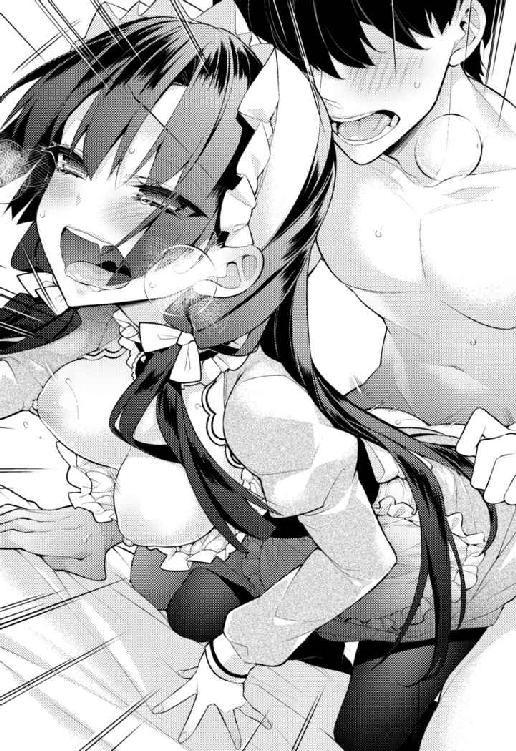

| お嬢さま三姉妹にぺろぺろされ続けてると妹がしつけ直しにきました えちかわ文庫 | |
| 幌井 学司 | |
| (2015) | |
※本作品の内容はすべてフィクションです。
実在の人物・団体・事件などには一切関係ありません。
第一章 三女さまは寝取り風プレイをご所望です
使用人の朝は早い。必然的に夜寝るのも早くなる。都和蕗家でアルバイト執事としてご奉仕――労働するようになってから一ヶ月あまり。俺、鈴月圭は、朝は五時半に起きて夜は十時には寝てしまうという健康的すぎる生活サイクルを確立していた。
何せ俺がお仕えする都和蕗家の三人のお嬢さまは皆クセが強い。体調を整えてしっかりと事に当たらねばペースもムードも流れもすぐに持っていかれてしまう。六時頃に三女の椎ちゃんにお砂糖入りのホットミルクを届けて、六時三十二分には長女の梓乃姉さんにお茶を届け、それから着替えて八時前には次女で同い年の楓子と一緒に登校して――。
「とにかくしっかり当たって、がっぷり四つで組んで、立ち会いの変化になんて頼らないように......。たとえ相手が格上でも」
「けーくん何言ってるの？ ねぼけてるの？」
「思い切って自分のおすもうをとらなきゃいけないんだ」
「あははは、やっぱりねぼけてるー♪」
ぼんやり自分の手を見下ろす。手にはゲームパッドが握られている。
正面には大きなテレビの画面。
思い出した。俺は今、連休前だからと三女で二歳年下の椎さま――椎ちゃんに誘われて、夜通しのゲーム大会に付き合っていたんだった。大会といっても二人しかいない。そして夜通しといえど時刻はまだ十一時半。
なんと十一時半。てつやしよう！とか言ってたくせに日付が変わる前にうっかり寝ちゃう小学生男子か、俺は。
「さっきからこっくりこっくりしてたよ。可愛かったー♪」
椎ちゃんは笑顔で言って身を寄せてくる。色素が薄くて細い髪の毛が頬をくすぐった。
彼女は元気いっぱいなご様子だ。世間的に見れば不登校で引きこもりの問題児、という扱いなのがこの椎ちゃんで、引きこもりの例に漏れず昼夜逆転した生活を営んでおられる。今くらいの時間は彼女にとっては真っ昼間くらいの感覚だろう。
そう、だからさっき意識にのぼった「朝六時のお砂糖いりホットミルク」は、椎ちゃんにとっては寝る前の一杯なのだった。
「いや、まだまだいける。だいじょうぶら」
「あははは、そうなのら！」
からかわれた。ちょっとしゃくだ。
明日から連休が始まるので、梓乃姉さんには日課の朝のお茶は持ってこなくてもいいと言われていた。学校もないし、早起きする理由もどこにもない。だからこそこうして椎さまのご提案に付き合っているわけだけど、日頃の習慣でとにかく眠かった。
「けーくん眠いのに、ちゃんと椎に付き合ってくれるんだ。けなげだねー」
「ねむくない」
「ほんとうは眠いんでしょ？ そんな眠気で大丈夫？」
「ねむくない。大丈夫だ」
「素直に認めなさい、圭。でないとひどいわよ」
「え？ あの、いえ......違うんです、梓乃姉さん」
「ぷふ......あははは！ ひっかかったー♪」
あ、やべ。声色を真似されたせいでうっかり勘違いしてしまった。自然と背筋もピンとのびていた。ごはんをもらう前の猫か、俺は。
何もかも完璧であらせられる長女の梓乃姉さんと、椎ちゃんでは色々と随分違うけれど、声は姉妹だけあって似ている。
ていうかやっぱり相当眠いんだなこれは。全然頭がまわってない感覚がある。俺は昔から眠気には弱い。次女の楓子がそばにいなくて良かった。同い年だけあって楓子は一番気安いところがあるけれど、一番危険でもある。
「ん......ぅ......」
バイト使用人である自分の、雇い主で御主人の三姉妹さまのことをぼんやりと考えているとまた空白が現れるように眠気が訪れる。
「けーくん」
「ん......うん？」
「すき」
「......うん」
「えへ......。さっきからこくんこくんしてるのに、ずっと一緒にいてくれてるの、うれしい。ほんとにおにーちゃんがいたらこんな感じかな」
なぜだか少し体が熱くなる。とにかく眠気に負けまいとしているだけのはずだけど。
「あ、よだれ」
「え、あ」
言われた瞬間に、口の端を生暖かい――というか生冷たいとでも言うような独特の感触が伝っていくのがわかった。言われた通り、これは唾液だやばい垂れてしまう、と思う間に別のなまあたたかい感触が訪れる。
「ん......ちゅ。んく。へへー......」
唇に。あたたかい。やわらかい。でもちょっと薄い。
この一ヶ月に感触を覚えたそれは、椎ちゃんの唇だった。
嚥下した音も聞こえてきたから、つまり――。
「椎ちゃん......きたないよ」
「そんなことないよ。けーくんにそんなところ、ないもん」
目が少し覚めて頬と胸が熱くなる。でもそのセリフを口にする役は普通男女逆ではないだろうかとも思う。
「もっとー」
「ん......」
「ちゅ......、ふふ♪」
まだまだ眠気が強いせいで、現実だということはわかっているもののどこか夢のなかにいるような感覚もあって、まどろみのなかに唇をついばまれる快楽が溶けていく。
眠っているような起きているような、言葉を交わしているようなそうでないような、どうしようもなく通じ合ってしまっているような。不確かで心地いい感覚。
思えば男が普段感じる快楽は目から入ってくる情報とか股間を突き抜けていくようなあの官能とか、輪郭がはっきりしたものばかりだ。
だからこうして曖昧に溶けていくようなものはどこか新鮮で、ただ唇を合わせるだけの心地良さにまだこんな感じたことのないものがあったのかと驚く。
そのうちに俺の体は背から倒れこむ。床に敷かれた厚手のラグの上。視界の端にゲーム機やパソコンのコードが映り込む、雑多な部屋。椎ちゃんのスペース。その主人が俺の胸の上にぺたんと体重を移動させる。
ちょっとだけ息苦しい。けれどその軽い重さは十分心地いい。
「ん、ちゅ......。椎のおにーちゃん......」
「ぅ、ん......」
夜だからだろうか。それとも彼女にとっては昼といえる時間だろうか。
いつになく椎ちゃんは情熱的で、俺を離してくれそうになかった。
何も判断や決断をしないまま、俺はただ二歳年下の少女の唇を受け容れ続ける。何も考えなくても股間にはだんだん血が集まって隆起していく。それも心地いい、ような、ちょっと怖いような、よくわからない興奮があった。
それでも少しは目が覚めた分いつもの自分の理性が復活してきていて――。
「......ゲーム大会は、いいの？」
――そんな風に聞いてみる。
「それもする。これもする。どっちもできるのがお休み前のすごいところだよ」
その答えを聞いて納得する。時間帯は特に関係なく、朝まで一緒にいても何の問題もないことが椎ちゃんにとって嬉しいらしかった。
そのまましばらく――椎ちゃんは俺の胸の上でもぞもぞしていた。何をしているのかよくわからないけれど、機嫌の良さそうな可愛らしい鼻息が聞こえてくる。
トレードマークともいえる、ばらんばらんに跳ねているくせに繊細な髪の毛が俺の首筋や顎をくすぐった。
髪と一緒に小さくて丸い頭を撫で付ける。
仔猫を胸に乗せているみたいで心地いい。
それからまたしばらくしてから、椎ちゃんは顔を上げた。
「あ......。けーくん、お休み中は、ずっとうちの家にいる？」
「ああ――」
軽く答えかけて、その問いに含まれているためらいに気付く。
「うーん......と」
彼女の瞳を盗み見る。俺はずるい奴なのかもしれない。
だけど椎ちゃんもしっかりまぶたを開けて、俺の瞳を見返してきた。明るい鳶色の瞳の奥。ちょっと挑発的に、でも挑発そのもので甘えるみたいに。
「お休み中は、ずっと椎のおにーちゃん......？」
都和蕗家には三人のお嬢さまがいる。それぞれ身勝手なところがあるけれど、どこかで線引きはしているような感覚はいつもあった。その引かれた線は、使用人である俺の上も通過している。朝、梓乃姉さんにお茶を持っていく時間。昼、楓子と同じクラスで授業を受けている時間。夕、椎ちゃんと遊ぶ時間。夜はその日によって。
だけど学校が連休に入って俺が暇になれば、線引きは柔軟に、そして時間的にも拡大する。そうしていいのか、と椎ちゃんは聞いているのだった。
そうしていいなら本当に朝までこんな風に過ごそうか？ ......と、聞いているような気がする。俺の勘違いでなければ。
「けーくん......？」
顔を近づけて、睦言の甘い調子で椎ちゃんが俺の名前を呼んだ。今度は名前。おにいちゃん、ではなく。鼻にかかったむずがるような声。
聞き分けのいい子供の顔も見せながら、こんな風に甘えてこられたら俺が答えられる答えはほとんど一つになってしまう。
「――いるよ。連休中は。ずっと」
「ほんとう？」
瞳がぱっと輝く。長いまつげがパシッと小気味良く上下する。この子は二人の姉にも負けない美人にきっとなる。
「うれしい......」
花が咲いたみたいに笑う。
「うん。だから朝まで生ゲームだ」
「ナマおにーちゃんだね」
「なんかぬめってそうなお兄ちゃんだ」
「ナマえっちだね」
「......それは」
それはも何も今さら無いし、その一言で股間はばっちり反応している。
「ぇへ......じゃーあ、もっと。ちゅー」
「ん......っ」
頭の後ろと首筋にラグの毛足を感じ、唇には再び唇を感じる。あたたかくてやわらかい、けれどちょっと薄い。舌は元気にはいまわって表面をくすぐる。頭の奥がじんと痺れてきて、眠気がやっと完全に駆逐されたかというところで――。
ヴヴヴヴヴヴヴヴ............。
「きゃ!?」
「うわっ」
俺と椎ちゃんの胸の間で何かが激しく振動した。
二人してちょっと伸び上がるみたいになって慌てて何か確認する。
「あ......」
振動しているのは俺のパーカーのポケットに入っていた携帯電話だった。
表示されているのは実家の番号。同時に見えた時刻表示はちょうど零時をまわったところ。
「けーくんのおうちから？」
「ああ、うん」
また呼び方が戻ってしまったことになんだか申し訳なさを感じつつ頷く。けれど――時間も時間だ。出たほうがいいやつだと思う。
「出ていいかな」
「うん」
椎ちゃんはそう言ったものの、俺の体の上からどこうとはしなかった。これが最大限の譲歩ですと示すように。
俺はラグに寝転んだ姿勢のまま通話ボタンを押して、耳に携帯をくっつけた。
「もしもし？」
『......ッ』
電話の向こう側からは何か息を飲んだような気配が聞こえた。
――胸騒ぎがする。
この時間だ。緊急の用件？ それでこの雰囲気。家族や親類に何かあったとか――。
視界の端でぱしぱしと何かが上下した。椎ちゃんの長いまつげだ。彼女も固唾を飲んで俺と携帯をじっと見ている。
『......あの』
聞こえてきたのは父さんの声でも母さんの声でもなかった。母さんに似ているけれど、もっと若くて、ちょっと内にこもっているのに掠れてるようなこの声は――。
「あ――。塁か」
『............』
「どうした？ こんな夜中に」
『......兄さん』
どこか絞りだすような声で言われて戸惑う。こんなとき、顔が見えない電話は不便だなと思う。
電話の相手は塁――鈴月塁。俺の妹だ。そういえばこの一ヶ月、塁の顔を見た覚えがなかった。俺のひとつ年下で、つまり年子で、今年受験を控えている塁は塾通いで忙しい。
都和蕗の屋敷で働き始めたこの一ヶ月間、俺もたまに実家に帰っていたけれど、なんとなく塁とはタイミングが合わなかった。
都和蕗の家と鈴月の家は遠い親戚だ。片や服飾産業の雄である都和蕗グループ、片や普通の中流家庭である鈴月家と差は大きいけれど、どちらもこの地方に長く続く古い血筋で浅からぬ縁がある、らしい。
その縁もあって俺は小さい頃から三人のお嬢さまと仲良くさせていただいており、高等部進学にあたっては色々あって都和蕗グループが経営する艶葉蕗学園に通うことになった。そして学費免除の見返りに、都和蕗家でアルバイト執事をすることになり――いつの間にか住み込み状態で働いている。
とはいえ学費免除に俺がやすやすと釣られたのは、妹の塁の存在も大きかった。
塁は俺と違ってめちゃくちゃ勉強ができるから、できればいい学校に――。
「塁？ どうかしたか。こんな夜中に。何かあった？」
塁がなかなか用件を切り出さないので、少し心配になって聞く。
『兄さん』
「うん？」
『今の、もう一回言って』
「え？ うん？」
『ちがう。その前の』
「ん？ どうかしたか、こんな夜中に――」
『ちがう。さっきと言い方が違う』
......どういうことだろう。よくわからないけれど、塁の機嫌があまり良くないらしいことだけはわかる。
戸惑っていると、胸の上に乗ったままの椎ちゃんと目が合った。するとそのまま椎ちゃんの口が発音はせずに動いて、「るい？」と聞いてくる。俺は頷いた。
『......まあいいけど。兄さんは、連休中はうちに帰ってくるよね？』
「え、なんで」
『なんでって......そっちこそなんで。兄さんの家なんだから』
「そうだけど。別に用もないっていうか」
『............ッ』
塁が不機嫌そうにむっと押し黙ったのがわかった。前言を少し撤回する。電話でも伝わるものは結構伝わるんだな、うん。
妙な納得に浸っていると、俺の胸の上で動きがあった。電話越しの会話をじっと聞いていた椎ちゃんがにやにや笑いながら俺の体に抱きついてくる。
「......」
小さくて、まだほとんどぺったんこな体で。でもむぎゅっと。確かに柔らかい部分もあることが伝わるくらいに。
『帰ってこないの？』
その途端に塁の声が聞こえる。やっぱり不機嫌そう。
「そ、そうだな、どっかで一日くらいは――」
言いかけたところで椎ちゃんが俺の首筋に吸い付いた。声を出してしまいそうになるのをすんでのところで我慢して、言い直す。
「ま、まあ......その、気が向いたら」
『いつ？』
「え？」
『その気が向くのはいつって聞いてるの』
そんな聞かれ方をしたのは初めてだぞ妹よ。気が向いたら、というのはつまり――。
「そ、そうだなあ......」
しかしこれは困ったことになった。さっき連休中はずっとここにいると椎ちゃんに約束したばかりだ。というか椎ちゃんはそれを意識させるために俺にいたずらをし始めている。
首筋を相変わらずぺろぺろと舐められていて、顎の線もなぞられて――。
「ぁ、......」
――やばいやばい耳はやばい。
『兄さん』
「はい」
『......もしかして誰かいる？』
「まさか」
答えながらどっと汗が噴き出す。椎ちゃんの体が胸の上で揺れる。口を押さえて、楽しそうに笑って俺を流し目で見た。
「そ、そうだな、連休中な......いつかなあ、えーっと」
間を繋ぐために何の意味もない言葉を連ねている俺に対して、椎ちゃんの行動は素早かった。いきなり俺のズボンをパンツごとぐいっとずり下げて――。
「そ、そこまでは！ えっと、まだ――考えてないっていうか」
『じゃあ今決めてよ。いつ？』
椎ちゃんの手が俺の半勃起状態のものをつかむ。そしてしゅっしゅっとリズミカルに上下させる。
こんな状況なのに、いやこんな状況だからなのか、それはすぐに完全に勃起状態になった。どうしようどうしようと思っている間に、あほんとやばいこれ椎ちゃんまで下を脱いだぞ。
『兄さんが帰ってこないから、兄さんの部屋、だんだん物置みたいになってるの知ってるよね？』
そういえばそうだった。この一ヶ月の間に、俺の部屋には母さんのダイエット器具や父さんの釣り竿やクーラーボックスが置かれるようになっていた。あまり気には留めていなかったけれど――。
「まあいいんじゃないか。ちょっとくらい――」
『良くない！』
塁の突然の剣幕に少し驚く。と、同時に椎ちゃんが俺の股間の上にまたがろうとしていた。良くないそれは良くない。
「確かに良くないな」
『じゃあ帰ってきてよ。いつ』
「ちょ、ちょっと待って、性急すぎる......っ」
あ、と椎ちゃんの小さな声が漏れた。
そう、性急すぎるゆえにむき出しになった股間同士を擦り合わせても、まだ挿入には至らなかった。ばくばくと胸が高鳴る。
俺の先端と、椎ちゃんの粘膜がぺったりとくっついて擦れ合っている。そのままスマタでもするみたいに椎ちゃんが体重をかけた。勃起した俺のものは椎ちゃんの股間と自分の下腹の間に挟まれて、情けなく鈴口だけを見せている。
勃起はますます強くなる。椎ちゃんの腰が前後する。裏筋が慎ましく濡れた陰唇にこすれてぬちゃりと音を立てた。
「あ......」
わきだす汗が止まらない。鼓動も。
それからさらに椎ちゃんは俺のあいている手をとって、口元に持っていく。
『兄さん？』
「ぅ、あ......」
指の股を椎ちゃんにぺろぺろと舌でくすぐられて、俺は思わず情けない声を出してしまっていた。も、もうだめだ。
『......ほんとに誰もいないの？』
「い、いや――」
否定しかけるが意味はない。もしかしたらこの淫らな水音すら聞こえているかもしれないのだ。もはや何の言い訳も――。
「くふふふふ、るいー♪ やっほー！」
『あ......』
椎ちゃんがついに声を出した。相変わらず腰をゆるゆると前後させ、俺の指を口に含みながら。
「ひさしぶりー。元気？ 相変わらず優等生してる？ あ、ガリ勉ていうんだっけ？」
『ガリ、な......！ その声は椎！』
「はーい、椎です。悪いけどー、けーくんは......んっ、ちゅ......連休中は椎と遊ぶから。おうちにはかえれませーん。ふふふふ♪」
『あ、遊ぶって......。そんな、私の兄さんをなんだと思って......』
「別にけーくんはるいのものじゃないでしょ。ちゅ......椎のおにーちゃんもしてくれるって。えへへへ」
『なっ、に、ぃさ――んは、わたし、の、にい――』
昔から椎ちゃんと塁は相性が悪い。というか、鈴月家の一族は都和蕗家の一族にかなわない。なぜかそういう風になっている。塁は椎ちゃんよりひとつ年上にも関わらず、いつもからかわれていた。
ていうか指の股をくすぐられるのって、こんなに気持ちいいものだったんだな......。がまん、がまん。せめて変な声は出してしまわないように。
「今日はねー、朝までゲーム大会するんだよ。誰にもジャマされずに、二人でずーっと遊ぶんだー♪」
『は？ そんな、うらやま......じゃない、ふしだら......じゃない、ふ、不健康な！』
「連休中も忙しいからねー。ふふ......ちゅ......んっ。帰ってるヒマなんてないかな？」
『ッ、兄さん！ なんとか言ってよ！ 帰ってくるんでしょ!?』
「へ？ ああ、うん、まあ――」
『......ッ！ 兄さんのばかっ！』
「あ」
ツー、ツー、ツーと虚しい音を残して電話は切れた。
――やってしまった。
いわゆる男の生返事というやつである。他に集中しなければいけないことがあると男はついこれをやってしまって、女に怒られるということを俺は父さんの背中で学んだ。一打サヨナラの場面の野球中継を見ているときにする、母さんへの返事とかで。今の俺の場合は、当然椎ちゃんが仕掛けてきているこの行為だ。
スマタと、指舐め。体の二つ以上の場所を同時に刺激されるとどうしてこう気持ちいいんだろう。
「......椎ちゃん」
俺は情けない声で懇願するように小さな暴君の名前を呼んだ。だけどその声はますます暴君の興をかきたてたみたいだった。
「困ってるけーくん、可愛かったー♪」
「......ほんとに困るよ」
塁は気付いたのだろうか。俺と椎ちゃんがしているこれに。あんなにわざとらしく、指をしゃぶる音まで響かせていたから――いや、でもわからないな。塁はこういうことには疎いほうだと思うし、なんかそれどころじゃない感じに怒ってたし――。
「情けないけーくん。椎にもるいにも甘いからだよ」
少し首を傾げて蠱惑的に笑う。それからもう一度指をひと通り舐めて、ぞくぞくするような感覚を送ってくる。
「えへ......このお股でごしごしってするのも、きもちぃーね」
「......うん」
「初めてけーくんとこうしたときのこと、思い出す」
そう言われて俺もなんだか胸が熱くなってしまう。
「あの時と今を比べて......椎のこと、見直した？」
「もちろん見直してる、見直し続けてるけど......。さっきみたいなことは、あんまり」
「ふーん。やっぱりけーくんにとってるいは特別なんだ？」
ぎゅっ、と股間にかかる体重が増えた。亀頭が圧迫される。だけどその柔らかく薄くぬめった重さが妙に心地いい。
「隠し子なんだ？」
「へ？ 隠し子......？」
「あ、まちがえた。虎の子なんだ？」
「虎？ どっちにしても意味が違うような......」
「箱入り娘？」
それに関しては、ちょっとそうだなと思う。塁は少し箱入りだ。だったら、箱に隠したのはいったい誰かという疑問が――。
「けーくん、ヘンな顔。椎だって箱入り娘だよ」
「......なるほど。そういえばそうだね」
でも椎ちゃんの場合は、自分で箱に隠れたようなもので。
あれ。どうしてだろう。今少し胸がぎゅっとしたような。
「けーくん、またヘンな顔。でも今の顔は好き」
「......なんか恥ずかしいよ」
「じゃあもっと恥ずかしくなろ？」
言って、椎ちゃんは腰をゆすり始める。
「あ......」
俺はすぐに情けない声を上げて身を委ねてしまっていた。
くにくにとした感触としめやかな水音が鳴ってお互いに高ぶっていく。
「こすれるの、きもちいい......」
「うん......。俺もきもちいい」
「こんなやり方もできるって、初めは知らなかったね」
「そう、だね......、っ、あ......」
亀頭が張り詰め始める。だったらもっと、とさらに身を任せるように股間に力をこめた。そうすると一回り雁首のかさも増して――。
「あ、ん......！ いま、すっごいひっかかったぁ......」
それが椎ちゃんにとっても良かったらしい。
そんな相乗効果が生まれるなら、このまま二人で気持ちよくなってしまいたい。
「ふぁ、あ......！ この、ひっかかるの、いいよ......。椎、さっきまでヨユーだったのに、もう......っ」
「一緒に......。もう少し我慢、できる？」
「ううん、できな......はっ、あ......！」
こっちもそれほど我慢できるわけではないけれど、椎ちゃんはもうほんとにいっぱいいっぱいという様子だった。どうしよう、こんな姿勢ではあるけれど、でもできれば一緒に、みたいな想いもあって迷っていると――。
「けーくん......」
椎ちゃんが何かを要求する。舌をちろりと見せて。
それで気付いて、俺は自分の腕を持ち上げた。椎ちゃんの口元に手をあてる。
「はぁ、む、ん......ちゅ、ぇろ......」
再び椎ちゃんが俺の指を口に含む。含んだまま舌を伸ばして、先端で指の股をねぶる。
「っ......！」
それで俺もすぐに高ぶって我慢できなくなった。やっぱり二つの場所を同時に刺激されると性感が一気に跳ね上がる。
「ちゅ、ん......いっしょ、いけそう？」
「うん......このまま、あと少し――」
「椎も......。あと少しだよ......」
椎ちゃんが大きく口をあけて、中指と薬指と同時に含む。
「ぇへ......。おにーちゃん指と、いもうと指」
「え――」
いや違うよね、薬指は普通おねえさん指っていうよねという疑問が官能と共にぐるぐる頭のなかを回る。おまけに舌先は再び指の股をくすぐっていて腰の奥も疼く。
「椎ちゃ、もう......っ」
「いいよ。おにーちゃん......」
「っ、あ――」
正体のつかめない背徳感が強烈に胸を衝いて、俺は射精の脈動を開始していた。ずっくと腰の奥が疼いて、どろどろの精液がスマタ状態のまま吐き出される。
「う、わ......」
「あは......すごーい」
幸い顔にはかからなかったけれど、首筋近くにまで飛んできた自分の白濁に驚いた。それに恥ずかしい。めくりあげたパーカーの裾を汚してしまっている。
――こんなに飛ばしてしまうなんて。
その羞恥とないまぜになった快楽はまだ続いていて、おへそのあたりに情けない白濁の水たまりを作っていく。びくびくと椎ちゃんの下で情けなく跳ねている。
「いっぱい、出てるねー......えへへへ♪」
言いながら椎ちゃんは腰を動かすのをやめない。絞りとるみたいに。自身もときどき全身を震わせながら。
「ん、ちゅ......」
それからダメ押しみたいに中指と薬指を吸われて、やっと俺の脈動は止まった。
荒い息を吐きながら、俺はなんとなく自由なほうの腕を目元に持っていってふさぐ。
「あら？ ふふふ......そんなに恥ずかしーの？」
「いや......、まあ、うん......」
女の子の中に出して受け容れてもらった時とは違って、濃密に感じる自分の精の匂い。おなかの上の熱い白濁が急速に冷えていくのもわかる。
「恥ずかしくてもいいのに。もうちょっとこのまま......♪」
「あ......」
椎ちゃんが俺のお腹の上に倒れこんできて、べちゃっと溜まった精液が鳴った。それもひどく恥ずかしいし、背徳的な気がする。いやでも待てよ、もともと感じた背徳はどこにあったんだっけ、確かとてもいっぱいっぱいになっているときに――。
「......これから、朝まで。まだゲーム大会だよ」
「......うん」
楽しそうに笑いながら椎ちゃんがお腹を揺り動かす。俺のお腹との間にあるものを擦りつけて広げるみたいに。夜はまだまだこれからだ。
第二章 長女さまと次女さまは足を伸ばしました
これが夢だと夢のなかでわかる方法が二通りあるという。ひとつは自分の背中が見えること。もうひとつは完全にどこかで見たような話をなぞっていること。で、今日の俺が見たものは後者だった。
有名な話だ。聞いたような話だ。神話かもしれない。どこからかふいに訪れた少女が、働かせてほしいと懇願するのである。そして、女主人はそれを了承する。
「する、のであるが――」
俺は目を瞬いた。
すぐそばによく見知った顔がある。
「おはよ」
「んぁ」
「おかしな寝言を言いますねえ」
なんだか情けない声を上げてばかりだな、と思いながらも体がまだ動かなくて、ぼんやりとすぐそばにある顔を見上げる。
三姉妹共通の薄い鳶色の――琥珀色の瞳。でも少しだけ特別に感じる。
三姉妹のなかでは一番短く切りそろえられた髪。さらさらと流れる。陽光に映える。いつか見たときは月光に冴えていた。その輪郭を見ているうちに現実感が増して、俺はいま夢から覚めたんだなとわかっていく。
「――楓ちゃん」
「うん。おはよ。寝ぼけてる？」
「......うん。寝ぼけてる」
ああだめだ、この次女の楓子が相手だとなぜか変に素直になってしまう。
そして――素直になると欲しいものが欲しくなる。
「......ちゅーしていいかな」
「おう。どんときな」
真正面から真っ直ぐに答えられて少し恥ずかしい。甘えをどこか拒否されるつもりでいたのに。
「ん......」
「うん......」
それでも唇を突き出しているあたり俺はきっと現金だ。
数秒経って顔が離れていく。さらさらとまた髪が流れる。童話アニメでみた天の川みたいだと思った。天の川は隔てる川だけど。
ぼんやりと楓子の瞳を見返しているうちに、もうずいぶん日が高いことに気付く。
「今何時？」
「もうお昼だねえ」
正確に何時なのか知りたい気分なのに。ちょっと外した答えに胸がざわつく。もうお昼、になったのか、もうすぐお昼、なのか。
だけど改めて聞き返すほどではない。そんな痛痒い場所をくすぐられるような不快感を彼女はいつでも持っている。
楓子。俺と同い年の、この家の次女さま。
「......ごめん、すげー寝てたんだな」
「いいよ。休みだし。寝顔、可愛かったし。それに朝方までずっと椎に付き合ってたんでしょ？」
頭がどんよりと重い。けれど体を起こして楓子に向き直った。
そして気付く。
「あれ......。なんで制服？」
「朝、お姉ちゃんと一緒にちょっと学校行ってて」
「え、梓乃姉さんも？」
「うん。お姉ちゃんも、っていうよりお姉ちゃんが、ね。生徒会役員の予算編成のよしなしごと。お姉ちゃんは圭くんを連れていきたかったみたいだけどね。起きなさそうだからーって、わたしが」
「そ、か。それは悪かった......かな」
「謝るならわたしじゃなくてお姉ちゃんかもね」
てっきり正真正銘の休みだと思ってた。でも想定するべきだよな。例えばハードに練習するような部活だと休み関係なくあるわけだし。梓乃姉さんは艶葉蕗学園の生徒会長だ、だから登校した。楓子は役員ではないけれど登校した、従者が寝てたから。
なんだか二重に申し訳ない。
「大丈夫だって。そんな顔しないで」
「でも」
「でももだってもへちまもないよ。おかげでとびきり面白いこともあったし」
「面白いこと？」
「いやー、ほんとそれが傑作でさ。ふふふふ」
楓子のちょっと悪魔的な笑み。小さい頃はよく見た。最近も結構見る。
「椎がだいっぶ焚き付けたみたい。まあこれはこれで。圭くんの色んな顔が見られれば私としてはそれはそれで 」
」
すごく嫌な予感がする。
幼い頃からさんざっぱら三姉妹さまには悩まされて弄ばれてきたけれど、また何か新しいネタができたとでもいうのだろうか。そんな経験と予見がありつつ離れられない俺も俺だけど。
「ま、ともかく――」
楓子は切り替えるように言って、しどけなくベッドの上にもたれかかった。ここで切り替えるのはよくわかってるなあと思う。もう起きてしまっているらしいがまだ目の前に現れていないものは脇に置いておくか、という俺の態度とタイミングとばっちりだ。離れられるわけがないじゃないか。
「朝、かわりに登校した対価、いただきたいと思います」
「あ――はい。どうぞ。なんなりと。楓子お嬢さま」
「お、使用人よ、なんだそのかしこまった答えは。お嬢さまはお気に召さないよ」
「......えーと、なんでもするよ、楓ちゃん」
先にかしこまって言ったのはそっちなのに。納得できないぞ。
「うん。じゃあ充電させて」
「......うん」
しどけなくベッドにもたれかかった楓子の体がそのまま俺の体に倒れこむ。
丹田に力をこめてしっかり受け止めた。抱きしめる。
もしかしたら、今は甘えてくれてるのかな。だってわざわざ人の寝顔を見に来て――いや、起こしにきただけかな。それとも何か考えてるのか。
抱きしめながら別のことを考えてしまうけれど、結局は楓子のことだけを考えているとも言えて、よくわからなくなる。
――可愛いんだ。
素直にそう思っておくことにした。
きっと楓子があまのじゃくのせいだ。
だから俺もときどき呼応するようにあまのじゃくになるけれど、だいたいは素直になってしまう。
だって楓子にも素直になってほしいから。鍵穴に合わせるみたいに。
「ん......」
吐息を聞きながら背中に腕をまわす。
意外にその肩は細い、というか肩の骨が細くて、胸の上のほうに触れている鎖骨の感触も細い。
どこか貧弱なのだ。あまのじゃくのくせに。あまのじゃくだからか。
その細さはどこか小鳥を思わせる。あるいは鳥籠の骨を思わせる。
「楓ちゃん」
「......うん？」
何か言おうとしたけれど何も思いつかない。指の隙間から逃げていくみたいだ。だからもう一度名前を呼んだ。
「楓ちゃん」
「うん」
伝わっているような、伝わるような、柔らかい部分を撫で合っているような、どうしようもなく繋がってしまうような、不可思議な感覚。
抱きしめるほどにさびしくなることがあるのか、なんて考えてしまうのは寝覚めの感傷なのだろうか。それでもますます強くかき抱く。
「......まだ寝ぼけてる？」
「え、なんで」
「ちょっと痛いですね」
「......悪い」
「いいよ。もっと強くても」
「折れちゃうよ」
「あはは、お上手。それってけっこう褒め言葉」
心地いい声を聞きながらうっすらと目を開ける。窓が視界に入る。緑の萌える季節なんだなと思う。もみじだって赤くない頃。
背を撫でる。肩甲骨。連なる背骨の凹凸。なぜか心地いい。
「もう満充電だよ」
「......うん」
言われてもまだ離さない。離れがたくて。
「男の子って、休みの日は急に別の顔するよね」
「そうかな」
「そうだよ。さぼろうって決めたら元気になるとか。抜けだそうっていったら張り切るとか。家出しようって言ったら本気になるとか。その途端に、実はオレずっとそういうことを考えてたんだけど、っていう顔するの」
「......そうかも」
言いながらまだ離さずに首筋に鼻を埋める。楓子の髪の甘い香り。だけど少しほこりっぽい、外の匂いもかすかに。さっきの言葉を聞いて、いつまでも覚えてるものなんだなと思った。俺もいつまでも覚えている。
それからさらにしばらく経つ。その間、外の新緑と楓子の感触を存分に味わう。
「......そろそろほんとに起きようかな」
「あらまあ。今までずっと寝ぼけてたっていう設定？」
「そんな感じで」
「ん。いいですよ。そんな感じで」
やっと体を離して楓子の顔を見る。するとニコッと微笑まれた。なんとなく気まずくて目を逸らす。寝起きとはいえここ数分間の自分はめちゃくちゃ恥ずかしかったんじゃないだろうか。やっぱり三姉妹さまと事に当たるときは、立ち会いの変化になんて負けないように、しっかり足腰を据えてがっぷり四つに――。
「あ、それとね、着替えてきて」
「着替え？」
「うん。使用人さんになってからダイニングに来てください」
「......？」
何かやることでもあるんだろうか。それか客でも来てるとか。でもわざわざ客を俺に会わせる必要があるだろうか。見知った顔ならともかくとして。
じゃ、と軽く手を上げて制服姿の楓子は部屋を去っていく。ともかく俺も顔を洗って歯磨きしてぴしっとしてから行こう。
......歯磨きする前に唇を求めちゃったんだな。やっぱり寝ぼけてるとダメだ。
ダイニングに行くと、梓乃姉さんと楓子が誰かと楽しそうに話しているところだった。その誰かの顔はまだ見えない。背だけが見える。長い黒髪と、女の子にしてはひょろりと背が高めで、少しいかり肩で――。
「とてもいいわ。よく似合うじゃない」
梓乃姉さんがその背に向かって優雅に微笑む。誰だか知らないが羨ましいぞ。姉さんの微笑みはいつみても一級品だ。
「あら、圭。遅かったわね。ああ、別に責めてるわけじゃないのよ。ちょうど良かった。ほら、見て――」
くるり、と黒髪の背が振り向いた。
「え――」
俺はまた間抜けな声を上げていた。今度は寝ぼけてるわけじゃない。ただ見えたものがあまりにも現実感に欠けていただけだ。
「る、塁!?」
「......ッ」
俺が素っ頓狂な声を上げると、塁は無言できっと俺を睨んだ。
機嫌が悪そう――いや違うか、恥ずかしがってるのか？
だってメイド服。塁がメイド服。妹がメイド。
「......兄さん」
「や、やあ。奇遇だな。こんなところで」
「奇遇じゃないっ。私は、兄さんに――ううん、それは今はよくて。ていうか何、兄さんのその格好」
「塁こそ」
兄妹で見つめ合う。俺は使用人服。対する塁はメイド服。どうしてそんなものを着てるんだ、とお互いになんだか牽制し合う。そのうち俺は塁の視線に負けて目を逸らした。
「私から説明しましょうか」
楽しそうに微笑みながら梓乃姉さんが俺たち兄妹の間に割って入った。
「今朝、塁が突然うちに来たのね。でも、私と楓子は登校していて、椎と圭は寝てたでしょう？ だから、高杉さんが応対してくれたんだけど――」
高杉さんはこの家で働いている家政婦さんだ。
「圭に用があったみたいだけど、なかなか起きないから。高杉さんが暇つぶしがてら、色々話してくれたらしいわ。それで、うちの会社が昔デザインしたメイド服があるから着てみないかっていう話になって」
なるほど。ダイニングのテーブルの上にはティーカップが二つとお茶菓子が入っていたらしい空のお皿がある。朝に来たんなら、ずいぶん長い間高杉さんが相手してくれていたのかもしれない。なるほどなるほど、それから流れで塁がメイド服を――。
「え？ で、着たの？ 塁が？」
「着てるじゃない」
「そう、なんですけど」
梓乃姉さんは微笑んで言ったけれど、俺は戸惑ってしまった。塁はかなり堅い性格だ。真面目で一直線で、プリントをたたむ時は正確に二等分して、カラオケでマイクを渡されても最後まで断固辞退し続けるタイプだ。
そんな塁が？ メイド服を着た？ 暇だからといって。
「圭くん」
「ん」
いつの間にか俺の脇に来ていた楓子がちょいちょいと俺の脇をつつく。
「そんな不思議そうな顔してないでさ」
耳もとで小声。塁と梓乃姉さんまで聞こえるような聞こえないような距離。
「塁ちゃんに他に言うこと、あるんじゃない？」
塁を見る。また目が合う。だけど今度は塁のほうがすぐに視線を逸らした。ぎゅっと拳を握っている。頬が――少し赤いかもしれない。
「あ――。うん。よく似合ってる、と思うよ、塁」
「......っ」
ぼっとまた塁の頬が赤くなる。色が白いから赤面すると目立つ。ていうかメイド服着てるのがそんなに恥ずかしいんだろうか。じゃあ俺が見ないほうが良かったかな、とかちょっと思うけど――。
「に、兄さんだって！」
「へ？」
「その格好......イイ、かも」
「そう？ だいぶ着慣れたかな。都和蕗だけあってデザインいいよね」
何の気なしに答えてみてもまだ塁の頬は真っ赤だ。
「す......す、すて、すて、す」
「何だよ。すて？ あ、ステイタスって言いたいのか？ 確かに都和蕗ブランドはステイタスになるっていうか、ラグジュアリー？的な？」
「ちが、す.........................................................すてき」
「ああ、素敵か。確かに素敵なデザインだな。塁のもだし、ほら、いま梓乃姉さんと楓子が着てる制服も」
そう返すと赤かった頬がだんだん白くなって、塁はがっくりとうなだれた。
「あら。塁は案外苦労人なのかしら」
梓乃姉さんが塁の肩に手をかけて撫でる。
都和蕗の家がほぼ毎月のように主催する懇親パーティに、鈴月の長男である俺は毎月出席させられていた。一方、塁は年始の挨拶をするくらいで、親しいのはよく絡んでくる椎ちゃんくらいだと思う。それでも塁が「梓乃さんは憧れだ」と言っていたのは聞いたことがあった。
だからこの雰囲気なんだろうか。梓乃姉さんに肩を撫でられて、塁はまた頬を赤くしている。塁の表情自体はとてもわかりやすい。けれど何を考えているのかは昔からよくわからない。
「......あの」
塁がふと口を開く。ぽつりと。でも何かの決心を押し隠すみたいな強さで。
「梓乃さんと、楓子さんに、折り入ってご相談が」
「何かしら？」
塁は梓乃姉さんのほうに向き直ってその顔を見上げた。
「私をここで働かせてください」
「あら」
「へ――」
「高杉さんにはもうご相談しました。そしたらお嬢さまにお聞きなさいと」
「あ、ああ、だからその服着てたのか。いやあ、塁にしては珍しいなあと思ったんだよ。でもな、塁。塁は俺と違って勉強ができるんだから、しっかり学校に――」
「兄さんは黙ってて」
「はい」
ぴしゃりと言われて俺は押し黙った。
「あの、私調べました。昔のイギリスなんかだと、淑女として教育を受けるために、貴族の屋敷に家政婦として仕えたことがあるって。だから、私も――」
「そう」
梓乃姉さんは短く答えて少し考える仕草をした。
いや、そこは考えるところじゃないでしょうと俺は内心思う。いくらなんでも塁が。いやいや、ありえない。
「そうね。じゃあ面接でもしてみましょうか」
「ね、姉さん？」
「今この場で。私と楓子と圭が面接官」
「え、僕もですか。僕はこの家の責任者じゃな――」
「そういえばそうね。じゃあ、圭は塁の付き添いということにしましょうか」
梓乃姉さんが艶然と微笑む。
ああ、ダメだこの微笑みは。おもいっきり状況を楽しもうとしていらっしゃる。梓乃姉さんにこのスイッチが入ったらもうかなわない。あとはもう十分楽しんでいただいて、興を削いでしまわないように平伏するしかないのだ。
――そして面接が始まった。始まってしまった。
ダイニングのテーブルを挟んで、こちら側に塁と俺。
あちら側には梓乃姉さんと楓子。
「よろしくお願いします」
塁が頭を下げた。勢い良く。勢い良すぎて頭にのったヘアバンドがずるっとずれた。しかし塁本人はそれに気付いていないらしい。相当緊張してるのだろうか。
「はい、よろしく」
対して梓乃姉さんはいつものペースで穏やかに答える。楓子は静かに会釈して、何も言わないままだった。傍観者に徹しますと態度が表現している。
そして俺は――とにかく身構えた。ＲＰＧ風にいうと「けいはちからをためている」というやつだ。
つまり、お兄ちゃんは塁が働くことなんて絶対に許しませんぞという決意を固めた。
「じゃあ、まず志望動機でも聞きましょうか」
向かい側から涼やかな声が響く。梓乃姉さんの声は本当に聞いているだけで心地いい。さっそく決意がふにゃふにゃになりそうだったがなんとか耐えた。
「..................」
志望動機を聞かれたのは俺じゃなくて塁だ。だけど塁は押し黙っている。俺も黙ったまま、ずれているヘアバンドをとりあえず直してやった。それにも気付かないくらい塁は緊張してるみたいだ。
いい加減沈黙が長く続いて、俺は塁の脇を肘でつついた。
「塁、志望動機は」
「に、兄さん」
「どうした」
「死亡動悸ってなに」
緊張しすぎて思考回路がおかしくなっているらしい。
「いいか、塁。落ち着け、な。働きたいと思った理由だよ」
「あ......そ、そっか。そっちか。うん、わかった」
そういえば塁は上がり症で内弁慶なんだった。俺や父さんにはライオンのように振る舞うけど、外では借りてきた猫のようになる。
塁はひとつ咳払いする。それから梓乃姉さんのほうを見た。
「私には、夢があります」
いきなり演説めいたものが始まりそうでずっこけそうになる。というか塁を働かせないつもりで席に着いたのに心配すぎてフォローしたほうがいいのかしないほうがいいのかわからないぞ。
「将来は、弁護士になりたいです。なぜなら、兄さんは色んなものに巻き込まれやすいからです。運命とか。陰謀とか。三角関係とか。あと内輪差とか。いざという時にあらわれて兄さんを颯爽と守るんです」
――だめだ、この妹は。何を言ってるのかますますわからなくなってきた。
「あのな、塁。志望動機だよ。それはいま関係な――」
「塁にしゃべらせてあげなさい」
「姉さん」
俺はちょっと抗議するみたいに梓乃姉さんを見る。だけど姉さんは涼しい顔だった。それに塁を見る目がなんだか輝いている。興味の光をお放ちである。
「それで？」
姉さんが上機嫌に塁を促す。まずい。姉さんのスイッチが入り始めている。
「はい。私は勉強は得意だし、記憶力はいいので......。頑張れば弁護士になれる気がします。でも、それだけでいいのかなあって」
「それだけというのは？ いいじゃない、弁護士。女は甲斐性よ。立派な夢だわ」
「えっと......。今、私、受験のための勉強してて。それはうまくいっています。まだ本番までは一年近くあって、これから成績が上がってくる子もいると思いますけど......。多分大丈夫です。このペースでやれば志望校に合格できると思います」
すごい自信だ。でも塁は本当に勉強ができるから納得もできる。
「暇なので高等部に上がってからの勉強ももう始めました。英語も数学も国語も楽しいと思います。でも......」
塁はそこで言葉を切って俺をちらりと見た。すぐに梓乃姉さんに向き直って続ける。
「何を命がけでやればいいのかなあって」
「命がけ？」
梓乃姉さんのその問いと俺の内心の疑問が重なった。
「本当はもっと勉強してもいいと思うんです。でも今、とりあえずのところ目標は達成できていて......。そしたら体力も時間も余ってるように感じて。エネルギー、みたいなものが自分のなかでぐるぐる回ってる気がするんです。出口がなくて。結局何をしたらいいのかな、って近頃は考えることが多くなりました」
「それでうちに？」
「......はい。それもあります。外の世界も見なきゃ、と思いました」
「そう」
梓乃姉さんは頬に指をあててとびきりの笑みを見せた。びくっと横で塁の体が引きつる。
「すてきね」
「......っ」
また塁の体が引きつって背筋がぴんと伸びる。エサをもらう前の仔猫みたいに。憧れだと言っていた。三歳年上の同性。それはもう文句なしに憧れのお姉さんなのだろう。そんな人に褒められたらすごく嬉しいだろう。
「ぐるぐる回ってるのね？」
「え――。あ、はい。ぐるぐる回っていくんです。らせんの階段をずっと下りてるような、上ってるような......」
「とてもいいわ」
単純な褒め言葉。だけど脇で聞いている俺までなんだか胸が熱くなる。
「あるいは――恋とか。してみたらどう？」
「こ、ここ、恋、ですか」
そのセリフには俺もつんのめりそうになる。塁が恋？ 想像したこともない。
「圭はどう思う？」
「え、あれっ、僕ですか」
その時初めて楓子が伏せていた視線を上げて俺を見て、くすりと笑った。
「いや、しかしですね......。僕は反対です」
「兄さん」
「......今の話を聞いても？」
今の話っていうのはどっちだ。ぐるぐる回るほうか。それとも、恋か。
「塁にはまだ早いと思います」
根拠はない。それは言ってる俺にもわかっている。
「そうかしら。今の受け答えを聞く限りでは、私はしっかりした動機だと思ったわ」
ほら、つっこまれた。
考えろ、考えろ。何か言い訳を。それだけは俺の得意分野だったはずだ。
「とにかく早いです」
やばい何も考えられてないぞこれ。
「圭にはない？ ぐるぐる回るようなこと」
「......それは」
正直なところ、ある。もしかしたら俺がここに来た理由は同じなのかもしれないと思ってしまうくらいに、ある。
結局自分には何もできることがない気がする。何もない気がする。
「でも――」
「素直になりなさい、圭」
梓乃姉さんは微笑んだ。そして椅子に座り直し、少し姿勢を変える。
ん？ と思った瞬間に、膝に何かの感触が訪れた。気のせいかと思ったのもつかの間、その感覚はより露わになる。膝の表面。くるりと円を描くようなくすぐったい刺激。
「？ 姉さん、」
膝が当たってませんか、と続けようとしたところで意図に気付く。なぜなら膝の表面にあった刺激がするすると太ももを伝って股間にまで上ってきたからだ。
ど、どうして今そんなことを――隣には塁がいるのに、という疑問を視線に含ませて投げかけるとさらに悪いことになった。あ、と楓子が何かに気付いたそぶりをして、さっき姉さんがしたのと同じように椅子に座り直して――。
足二つぶんの刺激が俺の股間に現れた。
梓乃姉さんと楓子がテーブルの下で足を伸ばし、俺の股間に触れている。
――まずい。
俺も椅子に座り直した。万一でも、隣に座っている塁にバレないように、テーブルのほうへとさらに寄る。
それによって足の感触がますます強く近くなってしまったけれど、ともかく俺の下半身は完全にテーブルの陰に隠れて見えなくはなった。
「ねえ、圭。圭にはない。ほら、こうして......ぐるぐる回ってるようなこと」
「......っ」
その言葉に合わせて梓乃姉さんの足指の先が、俺の股間で小さな円を描いた。
い、意外だ。足でこういうことされるのは多分見た目だけで実際にはそんなに気持ちよくないんじゃないかなって思っていたけれど――。
――めちゃくちゃ気持ちいい。
「答えて。ぐるぐる......くるくるかしら？ 小さな円でも大きな円でも、螺旋でも」
またその言葉の通りの動きを足先がしている。体が引きつりそうになるのに耐え、声を押し殺しながら口を開いた。
「あ、あります......」
「兄さんにもあるんだ......」
隣でぽつりとつぶやく塁。俺のほうは見ていない。無表情でつぶやくその仕草は自然なもので、きっとこのテーブルの下の事態には気付いていない。
「で、でも......やっぱり塁には早いんじゃないかと」
「そう？ こう言っちゃなんだけど、圭も割りと早いんじゃない？」
きゅっと股間を押される。早い。何が。こっち？ 地味に傷つく......ああ、でも二つ分の足の感触があれば早くもなってしまうかもしれない。こんなに屈辱的なのに。
「いや、早くはないと思いますが......」
「うん？ どちらがかしら」
「――――」
一瞬言葉に詰まる。このどちらは俺と塁にかかっている。俺と俺にかかってるわけじゃない。あれ、じゃあ俺は何が早くないと抗議したんだ。だめだ、もうだいぶわからなくなってきている。
「圭くんさ、昔から塁ちゃんには過保護だよねえ」
久しぶりに楓子が口を開いた。梓乃姉さんの涼やかな声とも塁の固い声とも違う、甘く鼻にかかる声。こんなことをされている状況だと一番くらくらくる間延びの仕方。
「いいんじゃない？ 少しくらいなら」
「そうね。少しくらいなら大丈夫。私が責任をとるわ」
少しくらいなら......この状況で気持ちよくなってしまってもいいんだろうか。姉さんが責任をとってくれるかな。それならいいかなあ。って違うぞそうじゃないぞ。
「でも......」
何か言おうとする。だけど相変わらず股間では足がくにくにと回り続けている。もう完全に勃起した状態になってしまっているのは向かい側の二人にも伝わっているだろう。笑みの質が少し変わって――。
「っ」
体が跳ねそうになった。
裏筋のところを指ではさまれている。楓子が口を手で押さえた。「あ、やりすぎちゃった？」とでも言うように。
「な、何事にも加減が必要というか」
「加減、ねえ」
今度はぞくぞくと快楽が背筋を這い上がっていく。加減――そう、ちょうどいい加減で玉袋が下から持ち上げられている。ふわっと浮くように気持ちいい。
「ねえ、兄さん」
「へ？」
「どうしても認めてくれないの？」
「え――」
顔だけ塁の方を向く。切実な視線。だけどどこか疑問を含んでいる。
「認め......そ、そうだな」
塁のそのセリフは気持ちよくなっていることを認めるとか、そういうことではない。働くことを認めてくれということで......。
「そうよ、圭。認めたら？」
梓乃姉さんのそのセリフはどっちかわからない。どっちもなのか。
「その......なんだか持て余しちゃうっていう気持ちは、わかる......わかるよ。出口がないと、つらいし......」
「......うん」
わかってくれるんだ、という風に塁が俺の顔を見つめてくる。
なんだか目をそらしちゃいけない気がしてそらせない。なのに股間は妖しい動きに反応し続けていて――出口がない。欲望とか。希望とか。背徳とか。ぐるぐる回って。
――俺はこんなに情けない兄だったのか。
「塁、あなたももうひとつ、素直になったら？」
梓乃姉さんがまた塁に呼びかける。塁の視線が正面に行って、俺はひどくほっとした。
「もうひとつ......ですか？」
「そうよ。ここで働きたい理由。それだけじゃないでしょう？」
「......」
塁は押し黙る。梓乃姉さんは塁に優しく微笑みかける。慈愛にあふれた、誰をも魅了してしまう色をもった笑み。
それでも塁は口を開かなかった。俺よりガードが堅いのかもしれない。
だけど――。
「塁、ごめんね。あなたの大事な兄さんをとってしまって」
「......っ」
その一言でガードが下がった。体がぐらりと揺れる。それでもすぐに立てなおして、塁は俺に向き直る。
「兄さん」
「は、はい」
「るいは......えっと、兄さ、兄さんの......兄さんが......す......」
「うん」
「す......、す......」
「うん」
「す......、スパイシーなカレーが食べたい」
「へ？」
「す！ すい、水曜日はいつも！ 家にいたとき！ ずっと前から私が塾で遅い日で、母さんも遅い日だから！ カレー作ってくれたじゃない！」
「あ......ああ、そうだったな。いや別に、普通のルー使ったカレーだけど」
「だからここで働きたい！」
全然前後がわからん。ああでもちょっとわかったぞ。
「なんだ塁、さびしかったのか」
「！ そ......そうなの！ さびし――」
「そんなに俺の味が恋しいのか？ いいか、お肉にはちゃんと下味をつけて――あと母さんのカレーとの違いは、具の大きさだな。母さんのって野菜を妙に小さく切るからできたてじゃないとすぐに溶けちゃうんだよ。その点、俺は時間が経ってから食べる塁や父さんのことも考えて大きめに切ってあるから。簡単だよ。やれば塁も作れる」
「............」
がくっと塁がうなだれた。そしてまたヘアバンドがずれた。数秒経っても塁がうなだれたままでいるのでヘアバンドを直してやる。
「ふふ......しょうがない兄妹ね。で、圭。どうしましょうか。例えば連休の間だけとか、週末だけとか。遊びに来るような感覚でね」
「それならいいかもねえ。あんまり働く働くっていうのもなんだし。息抜きに遊びに来るの、私も賛成しますよ」
股間に梓乃姉さんと楓子の足は乗っかったままだ。だけどいつの間にか動きは止まっている。......仕方がない。もうここが落とし所だろう。
「じゃ......そういうことにしようか、塁」
「......はい」
塁はなんだか激しく消耗した様子だが、しっかりと頷いた。
それからは割りと忙しかった。使用人として俺がしている仕事を説明しがてら屋敷にいる他の人たちにも挨拶をしてまわる。
しかし執事の兄とメイドの妹というのもおかしな絵である。屋敷の人たちは慣れたもので、お仕着せのような格好の俺と塁のペアを見ても笑って流してくれたけど。「またお嬢さま方の気まぐれが始まったか」とでも言うように。
「庭師の松浦さんって、塁は知ってたっけ？」
「うん、一応。おじいさんでしょ？」
「そう。あの人はもう少し遅くに来るから、そしたらまた挨拶しよう」
「うん。それにしても大きな庭......」
窓の外の庭を眺めながらキッチンに入り、食器棚の前に行く。
「んー、そうだな。俺は暇なときはここにある食器を磨いとけって言われてるけど」
「へぇ......。って、兄さん、これ......」
塁が棚のなかの皿や杯を指さす。
「ぎ、銀じゃない？ 本物の」
「らしいなあ」
「なんでそんなにのんきなの!? ほ、ほら、ここ見て。書いてある。〝銀器の手入れを命じられるのは、屋敷のなかでも最も地位のある執事である〟って」
塁が手に持っているのは、『ヴィクトリアン執事大全』と書いてある分厚い本だった。著者の名前欄にはサー・なんちゃらかんちゃらと書いてある。イギリス人らしい。
「磨くの、塁もやってみるか？」
「む、無理！ 下級メイド風情が銀器を扱うなんて......。お嬢さま方に何を言われるか」
「塁はけっこう形から入るタイプだなあ」
そして型にもはまりやすい。もうすっかりメイド気分でいるらしい。まあ装いは人を変えると言うけれど。
......そういえば俺もこの執事っぽい服を着ていると妙に気合いが入る。ぜひともお嬢さま方のご期待にお応えしなければ、という気分になる。型にはまりやすいのは血筋かもしれない。
「キッチンもすごい......。お金持ちってほんとに違うんだ」
「そうだな。いざとなったら何人分作れるんだろうな」
なんだか塁とこうしてゆっくり話すのも久しぶりだ。俺は傍らにあった丸椅子になんとなく腰掛けた。
塁は立ったままあちこちを見回している。
チチチ、と窓の外からは鳥の声。メジロか何かだろうか。なんていうか、平和だ。さっき面接中にされたことのせいでちょっと下半身はもやもやするけれど。
「......すてきね」
ふいに塁がつぶやいた。細い背中。表情は見えない。
「......マネしても全然だめだ......」
言って、俺のほうに振り向く。
「ああ――さっきの梓乃姉さんのセリフか」
「うん......」
塁は背中を流し台に預けて何か考えるようにぼうっと宙を見ている。
久しぶりに見るすらりとした体。出るところは一応それなりには出ているけれど、うちの家系はスレンダーな印象が強い。だけど割りと骨太で、つまり肉があまりついていないということだった。
塁の髪は昔から長い。またちょっと伸びただろうか。
「兄さん、髪伸びた？」
「ん――ああ。伸びたかも。そろそろ切らないと」
兄妹だからか、考えていることが一致してしまった。
「るいね、思うんだけど」
「うん」
塁は家族の前では自分のことを名前で呼ぶ。
「梓乃さんがすてきねって言ったら、なんでも素敵になる」
「そうかもな」
「例えばだけど。無名の画家さんが描いた絵があるとするでしょ？ その絵を見て、兄さんや私がすてきねって言ってもそれだけで終わるけど」
「うん」
「梓乃さんがすてきねって言ったら値段が跳ね上がったりしそう」
「......ありうる」
「それか――有名な画家さんが描いた絵があったとして。私はつまらない絵だなと思っても、その絵が描かれた歴史的な背景とか、そういうのを調べて、価値あるものだと知識で知って、評価するかも。でも梓乃さんの場合はどうなのかな」
「......塁は難しいことを考えるんだな」
「それってすてきなこと？」
「さあ......」
「......ぐるぐる回っているのでありますナ」
塁は宙を見ながらちょっと笑った。すてきね、と言われたのが嬉しいのかもしれない。
いつも硬い表情の塁の、少女らしい笑みを久しぶりに見た気がする。
「あ......そ、そういえば、兄さん」
「うん？」
「昨日......。夜、椎と何してたの」
「え――」
「るいが電話したとき、なんか......ゲームの音？ ヘンなのが聞こえたような」
――まずい。この会話はまずい。でもやっぱり決定的には気付かれてないらしいことがわかった。でないと聞いてこないはずだ。
「な、何だろうな。電波が悪かったとか」
言い訳しながら今自分が座っている場所を思い出して背中に汗をかいてしまう。この椅子に座って――俺は楓子と初めてのキスをしたんだった。
目をそらして庭を見る。そこではあの日、椎ちゃんが抱きついてきて、それから麦わら帽子をかぶせて、唇を――。だめだ、また背中が熱くなる。
「兄さん？」
「な、なに」
「......」
塁がじとっとした目で俺を見つめる。何か疑問を含んだような。そう、さっきの面接の途中にも見た。
ああ、この目はそれか。この目で見られているときはきっと薄氷の上にいるんだなと気付く。
「......兄さんみてるとたまにイライラする」
「イライラ？」
何かを押し殺したような声。
「あの電話のときも、さっき話してるときも......何か思った。それに今も」
「カルシウムが足りてないんじゃないか」
「あ。そうかも」
あっさり納得した。ちょろいぜ。
しかし今はごまかせたとしても、ずっとごまかせるわけではないだろう。この屋敷のどこもかしこも俺や三姉妹さまがしたことであふれている。
ごまかせなくなったとき、いったい塁に何を思われるんだろう。
お兄ちゃんの不潔！ とかだろうか。いや、この想像は甘いな。その程度で済むだろうと思うのは希望的観測すぎるな。だいたい塁は俺のことをお兄ちゃんとは呼ばない。
年子だとこういうときに困る。例えば三歳上だったら、もう圧倒的な差があってどうにでもなっただろう。けれど近いとごまかしが利かない。そういえば小学生の頃から俺は口喧嘩で塁に勝った記憶がない。本気になると塁はどんどん逃げ道を潰してくる。
......弁護士より検事のほうが向いてるんじゃないだろうか。
「兄さん」
「なに」
「こっち見て」
「ん――」
顔を上げると塁がすぐそばに立って俺を見下ろしていた。
「兄さん――。昔よりちょっと情けなくなった」
「そ......う、かな」
「昔は、もっと、かっこよ......じゃなくて、そんなにふにゃっとしてなかった。どうしてなの？ そりゃ梓乃さんや楓子さんは美人だし、椎もまあ......可愛いけど。昔の兄さんなら、もっと......なんていうか」
きゅっと眉根を寄せて俺の目を覗きこんでくる。独特の強い視線。
それから何かに気付いたように、塁はさらに眉根を寄せた。そしてなぜかすんすんと鼻を鳴らして、さらに俺に顔を近づけてくる。
「ん？ すん......。んん......？ 兄さん、何か――」
わけもわからずたじろいだ俺だったが――。
「鈴月さん？」
「「はい」」
入り口のほうから高杉さんの声がして救われた。二人同時に返事をしてしまったのがちょっとおかしくて、場が和んだのもなお良い。助かった。危なかった。
「どっちも鈴月さんだもんね、ややこしいわね。えーっとね、塁さん。お洗濯の仕事があるから私と一緒にきて」
「洗濯女......一番下級のメイドがする仕事ですね！ やらせていただきます！」
なぜかテンションが高い。形から入ったお仕事をしたかったのだろうか。
「それから圭君。あなたはお風呂で掃除。迅速にね」
「わかりました」
塁と別れてお風呂......というよりは大浴場に向かい、掃除用具を手にして扉をあけてみたが――。
「あれ？」
お風呂には既にお湯が張ってあった。なみなみと。漂う湯気の匂いから、わかしたばかりのお湯であることもなんとなくわかる。
掃除するんじゃなかったんだろうか。疑問に思いながら途方に暮れていると――。
「いらっしゃいませ～」
間延びした声が響いて、がらりと後ろの扉が開いた。
「な――」
振り向くと二人。梓乃姉さんと楓子。が、バスタオル一枚だけを巻いた姿で立っていた。
「な、何してるの楓......梓乃姉さんまで。二人して」
「あら、わからない？」
二人は浴場に足を踏み入れてしずしずとこちらに近づいてくる。
俺は気圧されて自然と一歩下がった。
すると足が何かにひっかかってその場で後ろ向きに転んでしまう。
ああ、お風呂の床で滑っちゃったら床が硬くてけっこう痛いはずだ、いやだなあと思いながら倒れこんだところで――。
ぶに、っと固めの弾力にお尻を支えられた。床についたはずの手を見る。ゴムボートに似た素材の感触。
あ、これお風呂マットだ。
しかも確か、エッチなことするために使うやつだ。
「な、何、これ。――と、それ」
楓子が手に持っているものにもやっと気付いて指差す。洗面器と、重そうな液体が入った透明な容器。
「いやあ、もう圭くんにもわかってるんじゃない？」
「お風呂でこういうものを使って遊ぶそうじゃない」
「しゅ......淑女のお嬢さま方がそんな、どこで知識を」
「椎ともこれして遊んだんだって？」
「え？ や――あれは、もっと可愛らしいもので......」
椎ちゃんとぬるぬるのお風呂で遊んだことは確かにある。することもしたけど......あの時のぬるぬるはお遊びのうちのひとつだったと思う。
でも――楓子と梓乃姉さんがローションを手にしていると遊びという感じがあまりしない。本気の〝お仕事〟という感じがすごい。やるかやられるか、みたいな。
「面接のときにちょっとやりすぎたかなあって、お姉ちゃんと相談してさ」
「それに休みの日だもの。昼からお風呂というのも悪くないわ」
それに関しては同意だ。休みの日のお昼に入るお風呂は贅沢で幸せな気分になれる。
ソーププレイはどうなんだろうか。
......最高に贅沢だな、多分。
「ちょっと濡れちゃったかな？ はい、ぬぎぬぎしましょうね～」
「やり方の予習は十分よ。私たちに任せておきなさい。圭は寝転がってるだけでいいの」
「いや、あの、塁が――」
「塁ならこの後、起きてくる椎の相手をしてもらうわ。ちょうどいいでしょう？ 昨晩は椎が圭を独り占めしてたことだし」
会話を交わしている間にも楓子が俺の正面にひざまずき、服のボタンを外していく。梓乃姉さんは傍らに膝をついて腰掛けて、お湯とローションを混ぜ始めた。
たぱぱぱぱぱ、と小気味のいい音がする。なんかすごくプロっぽい。
そして梓乃姉さんの姿勢が妙に良い。ほとんど前かがみにはならず、まるで花でも活けるかのように洗面器のなかの液体をかき混ぜている。いやあ、こういうところにも育ちの良さって出るんですねえ、と妙に納得して見惚れてしまう。かつてこれほど美しい姿勢でローションをかき混ぜる女性がいただろうか。他に見たことないから知らないけど。
「はあい、ズボンも脱ぎましょうね～」
楓子もかなり気分が乗っているらしい。
ズボンが足から抜けるとすぐに楓子が覆いかぶさってきて、裸になった俺をマットの上に組み敷いた。
「えへへ......圭くん、ちょっと椎の匂いがするねえ」
「そ......う、かな」
「困るんだよねー、そういうの。わたしとお姉ちゃんがどれだけムラムラしたかわかってるの？ 朝はあんなキスまでねだってきて」
「......ごめん」
「いいえー。謝ることじゃありませんけどね。むしろ燃えますね、ええ」
「このくらいでいいかしら」
気が付くとたぱぱぱぱが鳴りやんでいる。
梓乃姉さんは惜しげもなくバスタオルを開いた。露わになった美しい肢体。豊かな胸。へこんだおへそと、魅惑的な腰つき。均整がとれながらほぼ成長しきった――ほとんど大人の女性のからだ。
見惚れていたのもつかの間、その体にローションが塗りつけられて、てらてらと光をたたえるようになる。
「楓子。圭の背中をこっちに向けて」
「はーい」
抱きついていた楓子が姿勢を変えて、俺の体は横向きになる。その数秒後、背中に触れる圧倒的な感触。柔らかで、あたたかくて......でもそれだけじゃない、密着する液体の滑らかさ。肌の細胞のひとつひとつまで繋がっているようなぬめり。
「わたしもー」
言って、楓子は目の前でバスタオルをはだけた。梓乃姉さんよりはまだ未成熟の、けれどそれゆえに美しいともいえる体。ちょうどいい大きさの胸とちょうどいい大きさのお尻。だけど細い肩と腕の線。それらにも透明に光るローションがまぶされて輝く。
ごくりと生唾を飲み込んだ。
だってこうしたってことは、この肌ももうすぐ密着して――。
「あ――」
ぺたり、と楓子もくっついてきた瞬間に思わず声を上げてしまった。
陳腐かもしれないけれど、全身がおち×ちんになっちゃったみたいだ、とバカなことを考える。
背中には梓乃姉さん。胸には楓子。どっちも柔らかくてあたたかい。おまけに全部繋がっているような気がする。
その感覚が、妙に甘い。
思考が一瞬でぬるぬるのなかに蕩けていって、何もかもどうでもよくなって、ただ完全に勃起した股間だけを意識していた。
――そうだ。さっきあんなことされて。足で。俺だってムラムラして。たまってたんだ。だから、ちょっとくらいじゃなくて大幅に羽目をはずしたって構わない。
「......きもちいい？」
楓子の甘い声。素直に答える。
「すげーきもちいい......」
「私も気に入ったわ。なかなか悪くないわね」
涼やかな声も背から響く。密着しているせいで俺のなかから響いてきたような気すらする。梓乃姉さんのなかに俺がいるのかもしれないな、と妙なことを考えてしまう。
「さっきはごめんねー。ついいたずらしちゃって」
「私も少し反省したわ。楽しかったけれど......。もう少し順序を考えるべきね」
姉さんはもうしないとかほどほどにするとは言わなかった。順序。順序って何だ。
でも今はそれもどうでもいい。ただあたたかいぬるぬるに包まれて、全身が二人のなかにいるような感覚を味わっていたい。
「少し動いてみましょうか」
「そだね」
言って、二人が体を微妙に揺らし始める。
「あ......」
また声が漏れるのを止められなかった。すごく柔らかい感覚が背中と胸を上下する。目を閉じてしまいそうになるけれど、どうなっているのか見たくて楓子を見た。
「......っ」
ぐにゅっと目の前で形を変える胸。てらてらと光ってぺったりとくっついていて。お腹のあたり、おへそに亀頭がこすれているのがわかる。そんな小さなくぼみすら心地良い。
「ふふ......バッキバキだねえ」
「圭、もう少しリラックスしなさい。お尻にも力が入ってるでしょう」
「......はい」
言われるままに力を抜いた。すると柔らかい感覚がますます強くなって、びくりと体が跳ねてしまう。
「お、いきがいいねえ」
「だって、こんな......」
たまった性欲、そして急速にそれ以上にたまっていく性欲、気持ちよくなりたいという男の欲求が股間を突き上げる。それと同じくらいに強く強く、頭と胸の奥はこの幸せというほかない密着を味わっていたいと訴えている。
天国だけど地獄みたいだ。おかしくなりそうだ。感覚が全部だめになってしまいそうだ。センサーが振り切れっぱなしのような状態。
「楓子。もう入れてあげたら？」
「え、いいの？ お姉ちゃんは？」
「私は......ふふふ、ちょっと試したいことがあるから」
「そ？ なら......」
けいくん、と耳もとで甘い声が鳴った。
いれるね、ともう一度甘い声がささやいた。
「っ、あ、ああ......！」
「ん......」
全身包まれているはずなのに、さらに一箇所だけ、もっと強く包まれる。
ぬちぬちと入っていく。襞に丁寧に包まれる。
「楓、ちゃ......」
「ん......ふふ その呼び方でいいのお？ お姉ちゃんもいるよ......あ、おっき......。ほんと、すっごく固くなってる......」
「っ、ん......！」
やがて全部包まれる。微かに残った理性が、楓子のなかにすべて挿入し終えたことを認識している。気持ちいい。表面はずっと包まれている。それに加えて、返した裏側まで包まれたような感覚だった。
「ごめ、もう......」
「あ、ん......。いいよ。このまま......」
入れた直後、まだほとんど動いてすらいないのに俺は絶頂の気配を感じていた。
背中が震える。でもその震えも優しく包まれている。心をすべて奪うような安心感のなか、楓子の体を抱こうとする。
「楓、ちゃ......」
「うん......きて」
ぬるぬるのせいでうまく抱けない。だからなおさらかき抱くようにして、必死に楓子の体につかまりながら――射精を開始した。
「ん......！ わ......ほんとに、射精してるんだ......」
「ふふ......。男の子のほうが、こういう全身で感じるものには弱いのかもね。普段は違うはずだもの」
「そ、か......。あ、ほんと、すご......。おなか、ふくらんじゃいそう......」
交わされる甘さと涼やかさが耳にも心地良くて、どんどん吐き出していく。受け容れてもらっているという感覚もことのほか強い。
「っ、はぁ、はぁ......」
「少しローションを足したほうがいいわね」
まとわりついたものが流れてしまうほどの汗と鼓動。楓子のなかで果て尽くして満足して俺はやっと脱力した。
めまいがする。気持ちよすぎて。満足しすぎて。これを始めたばかりなのに。
このまま本当に溶けてしまいたい......とそう思ったけれど、そこで終わりではなかった。
「ん......！」
「え？ 圭くん、どうかした？」
「や、あの、ちょっ......後ろが、」
「ふふ......。少しこっちにも興味があって」
「え？」
目の前の楓子も何事かと目を見開いている。
「や、やだ、圭くん......また、大きく......。っ、ううん、さっきより大き――。なかで、ふくらんで――」
「あら、そうなの。じゃあ圭はこっちも好きなのかもね」
ずん、と内臓に響くような感覚があって、やっと何をされているのかに気付いた。
後ろ――俺の後ろの穴。そこにわけがわからないほどの異物感。ぬめりと共に侵入してくる。
「あっ、痛......」
「ごめんなさい。痛かったら言ってね」
指の動きは一瞬止まる。だけどまた徐々に入ってくる。
「あ――ああ、あ......！」
「や、やだお姉ちゃん、まさか圭くんのお尻――」
「ええ。試してみようかなと思って」
「む、無理――それ以上は、入ら......」
「痛いの？」
「い、痛くはそんなに、でも......。ヘンな、感じが」
「へえ......。じゃあ、指でだけど」
梓乃姉さんの体が絡みつく。肩が俺の肩を押さえ、膝と脚が知恵の輪みたいに組まれた。肢体で肢体を拘束された。それから楽しそうな声で――。
「圭の処女、いただくわ」
「......！」
ずぬっ、とさらに奥に侵入してくる。
「力を抜いて。我慢なさい。男の子でしょ。あ、今は女の子かしら」
「お、お姉ちゃ......圭くん、ほんとにちょっと苦しそうだよ......」
「む、無理です......っ」
「あ......うん。ほんとに無理そう。おち×ちんも今、ちょっと小さくなったみたい......」
「そうかしら」
異物感は抜けない。なんとか力だけは抜いていく。そのおかげで内臓を突き上げるような苦しさは少しマシになる。
そして――次の瞬間。姉さんの指先が俺の奥にある何かに触れた。
「あ」
体が震えた。何の色もない声と共に。
「え――。あ、ん......！ 圭くん、また......射精、してる......？」
どうしてだ。自分でもなぜかわからない。でも体はがくがくと震えて――股間の奥が疼いている。びくりと塊が突き上げてきて、尿道を通って出ていく感覚がある。つまり――楓子の言う通り、俺はまた射精している。
「あ、ああ......あ......」
変な声が出る。今まで出したことがないような。体の震えも今まで感じたことがない種類のもので、強いのにどこか頼りない、情けない脈動――。
「圭......可愛い」
「っ」
首筋を何かがなぞる。きっと梓乃姉さんのくちびる。舌。急所をつかまれている感覚のなか、情けない脈動が数十秒続く。
「楓子、どう？」
「え、ど、どうって......。気持ちよさそう？だけど......」
「射精は？ してた？」
涼やかな声がどこか事務的な調子にも感じられる。それが妙にぞくぞくする。
「してる......。出てた、みたい......」
「そう。ならこのくらいにしておくわ」
「んっ！」
やっと異物感が去った。
「っ......はぁ、はぁ......」
今まで自分がされていたことが信じられない。だけど後ろを振り向くのが怖い。とにかく落ち着こうと思って激しく息を吐いた。楓子の体に抱きつきながら。
「おお、よしよし......。怖いお姉ちゃんでしたねえ......」
ううとかああ、とか声を上げながら楓子の首筋に鼻先を埋めた。ちょっと泣きそう。
「もう平気だからね。よしよし、かわりに言っといてあげるね。もーお姉ちゃん、可哀想だよ。そんな無理やりしたら」
「ごめんなさい。でも、試すなら今が一番いいと思って」
「はあ......。久しぶりにお姉ちゃんの本気を見た......」
背に再び柔らかい感触が訪れる。
優しく背中を撫でるように、全身を使ってくれている。
「......梓乃姉さん」
「圭。わるかったわ」
「いえ......」
いえ、と否定してみたはものの、その先何と続ければいいのかわからなかった。大丈夫です、と言うほど大丈夫ではなかった。実は気持ちよかったです、というにはあまりにもわけがわからなさすぎた。
「......でも圭くん、お尻でもけっこう感じちゃうんだねえ」
「男の子はみんなそうだって言うから。圭はどうかと思って」
わからない。なんと答えればいいのか。変な感じでした、としか言いようがない気がする。
「よしよし。落ち着くまでもうちょっとこうしてようね」
「......あ、ありがと......」
そう答えてしばらく楓子の体を抱く。数分経つとだいぶ落ち着いてくる。後ろの違和感も消えていった。
「――圭。今晩でも、埋め合わせはするわ。だからこっちを向いて」
少し迷ってから俺は姿勢を動かした。
困ったような微笑みを浮かべて梓乃姉さんが俺を見ている。
「ごめんなさいね」
「......大丈夫です」
結局そんな風に答えるしかなかった。けれどそう言ってしまうと、それが本心のような気もしてくる。確かに射精はしてしまったんだし。違和感ももう消えたし。案外大丈夫だったんじゃないか？みたいな。
そしてそう答えても梓乃姉さんがまだ困った笑顔のままでいたから、俺はその唇の端に自分の唇を近づけて、少しだけ触れさせた。
「大丈夫です」
「......そう。安心したわ」
いつもの微笑みに戻ってくれて、俺も安心してしまう。
「――なんか、悪い男とピュアな乙女みたい。逆だけど」
楓子の呆れた声がぼんやりと浴室に響く。
第三章 長女さまが全身で包んでくださいます
今までも何度か大変な目に遭ってきたとは思うが、今思い返しても今日のはそのなかでも特級だった。なんだったんだろう、あの感覚は。現象としては......その、射精をしたんだと思う。だけどやっぱり何がなんだかわからない。
そして――梓乃姉さんがやっぱりちょっとだけ怖いかもしれない。幼い頃の感覚を思い出してしまった。梓乃姉さんはあまりいたずらに加わるほうではなかったけれど、やると決めたら本気だった。
俺や楓子より年上の権力と知恵を駆使して、大人の目すら簡単に欺いた。バレるときも、思わず大人が感心してしまうような余裕を残しておくのである。「よくもこんなことができたな」と。それで一笑がとれればもう梓乃姉さんの勝ちだ、というような雰囲気があった。
今の場合で言えば、なんだかんだで俺がある程度以上気持ちよくなってしまったのは事実で、だから抗議しきれないところがある。
......ていうか、ちょっとだけならもう一度味わってみてもいいかもしれない。でも自分からは言わないでおこう。あまりに格好がつかないし変態っぽすぎる。
それと楓ちゃんがいてくれてよかった。ああいうときはいつも優しいし、本質的に梓乃姉さんを止められるのは彼女だけだからだ。そこまで考えるとまた、梓乃姉さんは楓子がいたからこそアレを試したんじゃないかという気もしてくる。
――ぐるぐる回ってるな。
そう思いながら使用人部屋の前に着くと、扉が大きく開いていた。
「あれ......」
「あ、兄さん」
中からひょいっと塁が出てくる。足音を聞きつけたのだろうか。
その顔を見た瞬間になぜかお尻がむずむずしたのは気のせいだと思いたい。
「遅かったね、お風呂掃除」
「......うん。まあ。後始末とか、だいぶたくさんあって」
有耶無耶に俺が答えても塁はあまり気にせず、すぐに言葉をついだ。
「あの、兄さんに言うことがあります」
「え、何」
「こ、こ、これ、見て！」
なぜか少し切羽詰まった様子の塁に服の裾を引っ張られた。
「あれ？ ちょっとそで湿ってる？」
「あ、ああ――。さっき、風呂掃除で」
「ふぅん。あ、そんなのは今はいいの。見て、これ！」
塁が指し示したのは使用人部屋のなか。少ない俺の荷物と簡素なベッド。の、隣に置いてある新たなベッド。ベッドがひとつ増えている。
「る、るいは、連休の間は泊まっていくことにしたから！」
「あ、そうなんだ」
「そう！ これは一応はお嬢さまである椎と、メイド長の高杉さんの決定よ！ だから兄さんの抗議は一切受け付けられ――。って......。そうなんだって、それだけ？」
「え、うん。そりゃそうなるんじゃないか。泊まってくなら。家族なんだし。俺は使用人で、塁はメイドなわけだし。立場上はそりゃ、お嬢さまの部屋で寝るわけには」
「......う。そ、そうだけど」
俺は何も考えずに部屋に入って、自分のベッドの上に腰掛けた。
......やっぱり座るとお尻がむずむずする感じだ。なるべく気にしないでおこう。
「に、兄さん」
「なんだよ」
「るいと......妹と同じ部屋で、いいの？」
「いいよ。別に困りはしないだろ。着替えは兄さんが外に出てするよ」
「......いやじゃないの？」
「なんでいやがるんだよ。あ――そっか、塁が嫌なのか？ なら高杉さんに言って――」
「ちが、ちがう！ ぜんぜん！ ぜんぜんイヤじゃないから！」
わけがわからん。とにかくいやじゃないっていうなら良いのか？
「あ――。まあ、イヤじゃないとはいえ？ 多少は？ そりゃ？ 色々あるけど？ でももう、ベッド運び込んじゃったからね。松浦さんの腰を多少犠牲にしながら」
犠牲になったのか。もうお年だからな......。俺が手伝えばよかった。
「......ま、兄さんが良いならるいも良い」
ぶっきらぼうにそう言って塁は俺の正面にある自分のベッドに腰掛けた。
そのままなんとなく無言になる。兄妹だからいつでも会話をしているというわけでもないし、それで気まずくなるわけでもない。
食事の時間まで休憩を言い渡されていることだし、と俺はベッドに軽く横になった。
「塁」
「うん？」
塁は所在なげに脚をぶらぶらさせている。
「なんか読むものとかないかな。暇つぶしに」
「本は持ってこなかったな......。参考書ならあるけど」
「参考書か。それでいいや。兄さんにちょっと見せてみなさい」
「うん」
塁が立ち上がって大柄なボストンバッグのなかをがさごそとする。
「兄さんにはこれがいいかな？」
「ん」
手渡された参考書の表紙を読む。表紙には『図解・数ⅡＢ』と書いてあり俺がまだ見たことのない記号も並んでいた。
「え......塁、ほんとにこれやってんの？」
「うん。数学は特に進めてて。もともと苦手だから。あ、でもそれはまだ始めたばかり」
「苦手って......中等部でこれやってるんだったら進みすぎだろう......」
ぱらぱらとめくってから俺は考えることを諦めて参考書を脇に置いた。
「いいの？」
「うん。塁は本当に頭がいいな」
「......」
そう言うと塁はちょっと不満げに口をとがらせた。
「頭は良くない......。あんまり。でも、勉強はできる」
その言い方にはちょっと棘があった。他人に向かうものじゃなくて、自分に向かっているもの。あるいは他人から向けられたもの。
「そんなことないよ。勉強ができるやつはやっぱり頭もいいんだよ」
「......兄さんはそう思うの？」
「強くそう思う」
「ふぅん......」
俺が言ってもどこか納得できなさそうにして、塁は自分の足先を見ている。
それからまた子供みたいにぶらぶらさせて――俺の鼻先にふと何かが香った。
「ん？ なんだ、この匂い......ていうか香りだな」
「あ......！ えへへ、わかる？」
塁が嬉しそうに身を乗り出した。
「梓乃さんがね、さっき香水をくれて。うちで働くならつけておきなさい、って」
「そうなんだ。いい香りだな」
「強く香らせないには、腰か足首につけるのがいいらしいよ。メイドは手首はダメ。首筋なんてもってのほか。高貴な方々より強く香るといけないから」
「色々あるんだな」
生返事をしつつ、喜んでいるらしい塁の様子をしばらく見守る。形から入るタイプだからこういうのは嬉しいんだろう。それに本当にいい香りだ。塁に合っている、清潔でさわやかな石鹸みたいな香りだった。
「兄さんは香水もらった？」
「兄さんのはないよ。男だからじゃないかな」
「そうなの？ でも、ちょっといい匂いが......」
塁が立ち上がって俺のベッドに近づいてくる。何の気なしに寝転がったままその姿を眺めていて、はっと気がついた。
俺についている匂い。
「くんくん、すん......。んん？ やっぱりいつもの兄さんと違うにおい」
「――――」
さっきキッチンで塁が鼻を近づけていたのは、あれは匂いを嗅いでいたのか。楓子にもお風呂で言われた。
「あれ......？ でもさっきのともまたちがう......ん？」
「や、やめろよ、塁。犬みたいでみっともないぞ」
「......この匂い......」
塁は俺の言葉を無視してぎゅっと眉をしかめている。何かを思い出そうとするみたいに。
「は、はは、兄さんそんなに匂うかな？ ちょっと傷つくなあ」
「ちょっと黙ってて。もう少しで何か思い出せそうな......。そう、つい最近......？ あれ、でもこの感じはさっき椎の相手してたときも......」
「はははは、今の俺のはアレじゃないか、ほら、さっきお風呂掃除してたわけだし。その、洗剤とか......」
「これが洗剤？ 都和蕗家はどんな高級なお風呂洗剤を使ってるわけ？ ていうか黙ってて。もう少しで思い出せそうなのに......。んん？ 思い出せない。あー、もーっ！」
何か気を紛らわせるものはないか。
そう考えて、俺は傍らにあった枕を手にとった。
「ほ、ほら、塁。兄さんの枕だぞ」
「だから黙っててって！ もー！ 思い出せそうで思い出せないこの感じ、ほんと――」
セリフの最後の瞬間に、塁はぽかんと口をあけた。
そして俺の手から枕を奪い取って――。
「..................」
じっと眺めた。数秒間。
「あ」
「ど、どうした」
ぽかんとあけたままの口。視線はずっと俺の枕を見つめている。
「そういや、兄さんがうちに居た頃はよく枕カバー洗ってくれたよな。放っておいたら匂いがするから塁が洗ってあげる！って言って。そう、シーツもだっけ。洗濯がメイドのお仕事ならまたすることになるかもな、なんて」
「そう......だった、ね」
塁はまだ枕を見つめている。どこか上の空で。はっきりとしたものではないが、だんだん嫌な予感がしてくる。話題を逸らしているつもりで、まったく逸らせていないときの感覚がある。
それから塁はぽつんとつぶやいた。
「......イライラする」
「え？」
「っ、なんだかわかんないけど、すっっっごくイライラする」
「......カルシウム足りてないとか？」
「足りないのはそんなんじゃない......」
言ってから塁はがくっとうなだれた。頭のヘアバンドがずれて落ちそうになる。立ち上がって、俺はまたそれを直した。
「お茶でも淹れてこようか。ほら、イライラが収まるようないい香りの」
「......そんなんじゃ収まらない」
塁はうなだれたまま、俺の枕を抱きしめた。
「そんなもの抱いて。イヤなんじゃなかったのか？」
「......。イヤじゃない。安心する」
「え――」
「兄さんよりこっちのほうが安心する」
ますますわけがわからない。俺より俺の枕のほうが安心する？
「兄さんは......、るいは、兄さんを、もう一度......。るいは......」
塁はうつむいたまま何か言っている。頭のヘアバンドがまたずれ始めている。
「るいは、兄さんを......レコンキスタ、する」
意を決したように塁は顔を上げた。
レコンキスタ、何だっけ。それは高等部の世界史だぞ、何だっけ、確か――ああ、思い出した。
〝再征服〟だ。
「え？」
今度は俺がぽかんと口をあける番だった。塁がまくらを手放す。ぽさ、と乾いた音を立てて枕が床に落ちた。
それから塁が俺に一歩近づく。顔が間近にある。
「っ、兄さん」
切羽詰まった声。
「な、なに」
「こ......これって、レコンキスタって、何から始めればいいの......！」
がっと俺の肩をつかむ。
「ど、どうしたんだよ、いきなりそんな用語使われてもわけがわからな――」
俺が言い終わる前に、外から軽い足音が近づいてきた。それはすぐに部屋の前に到達して、あけっぱなしのままのドアから入ってくる。
「るいー！ さっきのゲームの続きしようよー！」
――椎ちゃんだ。
椎ちゃんは俺と塁を見てちょっと目を丸くする。だけどすぐに元の態度に戻った。
「ねえー、るい！ ゲーム！」
「ちょ、ちょっと待って！ いまは兄さんと大事な話を――ゲームどころじゃないんだから！」
「えー？ せっかく椎が教えてあげようと思ったのにー。大丈夫、るいならすぐ上手になれるよ」
「黙っ！ ――て、て......」
椎ちゃんに対する、塁の二度目の答え。威勢が良かったのは最初の二語だけで、あとは尻すぼみになった。おまけに俺の肩を掴んでいる力も弱まっていく。
「椎」
「なーにー？」
「......教えてくれるの？」
「うん？ うん。るいがしたいなら」
「私はあまりにも戦い方を知らなさすぎた」
「そうかもねー」
塁が俺の肩から手を離し、ふらふらと椎ちゃんのほうへと歩き出す。
そして今度は椎ちゃんの両肩を掴んだ。
こうしてみるとほんとにちょっと姉妹みたいだ。椎ちゃんはだいぶ小さいから、るいの一歳年下にはあまり見えないけれど。
「椎、教えて」
「いいよ。椎の部屋くる？」
「行く」
塁が振り返って使用人部屋を見回した。何か必要なものが残ってないか、確認しようとする仕草。もう俺のことなんてまるで見ていない。
俺は椎ちゃんのほうを見た。
「♪」
すると小さい彼女はにやっと微笑む。
......あまりたちのいい笑顔じゃない、と思う。
「けーくんたのしみ？」
「な、何が」
「べっっつにー。えへへへ。椎はこれから、るいとガールズトークだね♪ けーくんは来ちゃだめだからねーっ」
「......ゲームをするんだろ？」
「ゲームもする。トークもする。どっちもできるのが椎とるいの仲だもん」
「――準備、できた」
塁が手に持っているのは何かの教科書らしきものとノート、そして筆箱だった。
何かをがっつり勉強する気満々に見える。
それが何か、俺はわかっている気もする。わかりたくない気もする。そんな、まさかねえ、だって塁が？ 妹が？ という感じもある。
でも、もしかしたら椎ちゃんは初めから――。
「あ、それからしの姉からけーくんに伝言。お部屋にお茶を持ってきて、だって」
「......わかった」
そう答えたとき、塁が唇を噛んだように見えた。
――ぐるぐる回ってる。頭のなかが。
さっきの椎ちゃんと塁の様子が気にかかる。だけどこれから会う人のことも気にかかる。
いつもよりたっぷり時間をかけてことさら丁寧に入れたお茶を持って、俺は部屋のドアをノックした。コンコン、と二回。
入っていいわよ、と返事があった。
緊張しながら部屋に入る。
梓乃姉さんはベッドに半身を投げ出して本を読んでいた。いつかの、いつもの朝を思い出す姿勢。
俺はベッドサイドのテーブルにしずしずとお茶を運ぶ。
だが――しずしずと運んだつもりが、それが全く果たせていなかった。茶器は耳障りな音を立てて、カップのなかの液体が少しこぼれてしまう。
「すみませ――」
「いいのよ。お茶は口実だもの。それに観察」
梓乃姉さんはいつも通りの涼やかな声を響かせて、ぱたんと本を閉じた。何か合図するみたいに。
「こっちへいらっしゃい」
「――――」
涼やかな、だけど二人きりのときの甘さを含んだ声。梓乃姉さんの部屋。意識がお茶から離れるとこの部屋の香りが鼻腔をくすぐる。梓乃姉さんのにおい。
「どうしたの。まるで、きみが初めてこの部屋にきたときみたい」
「......いえ」
どうしてこう緊張するんだろう。ぎくしゃくしながら部屋の中央へ歩いていく。歩き方。そういえばそうだ。こうして歩くのもきっと観察なのだ。歩き方がおかしくなる。以前そう言われた。
何もかもが胸につかえて苦しくなって、ぐるぐる回るような感覚は遠のいていった。今はそんな場合じゃないでしょうと体も本能も訴えている。この人の前に出ると、俺はいつだって。
「いらっしゃい」
ベッドのそばに立ってからもう一度そう言われて、何を求められているのか理解する。
俺はベッドのふちに腰掛けた。
「そう、いい子ね」
背を撫でる声。ぞくぞくする。数時間前にあったこととは関係なく、胸の奥がじわりと疼く。
「体は大丈夫？」
「......大丈夫です」
そんな会話。性差が逆転したような。だけどどこか心地いい。普段の自分とは違う自分でいるような感覚を与えられる。与えてもらっている。
――ぐるぐる回ってる気がするんです。
――すてきね。
――らせんの階段をずっと下りてるような、上ってるような。
――とてもいいわ。
その先を唐突に、そして強烈に思い出す。
――あるいは恋とか。
ぴくりと体が引きつった。
そうか、この感覚は、壁も扉も衣服も取っ払って裸になるものに近い。梓乃姉さんは隠れていた俺に触れている。初めてのことに戸惑う自分。制御のできなさ。うまくできない自分への羞恥。
「圭」
「......はい」
「こっちを向いて。おもてを見せて」
俺の顔。おもて。だから、顔の反対は、裏。裏とは何だろうと思う。そしておもてにはいつも何かが浮かび上がってしまうのだとも思う。
ベッドに座ったまま少し姿勢を斜めにして、俺は梓乃姉さんの顔を見た。
「ふふ......。安心するわね。私の圭。少なくとも、今このときは」
安心。私の。この人だけの自分。この人といるときだけの自分。
「好きな本があるの。今、読み返していたわ」
「本、ですか」
梓乃姉さんの手のなかにある本。シンプルな装丁の。だが俺の知らない題名と作者だった。翻訳物だということはすぐにわかる。
「こんなことが書いてあるの」
梓乃姉さんは切り出した。やっぱり静かに、涼やかな声で。
「――女は、自分の年齢を二倍して七を引いた年齢の男といると一番心が落ち着く」
一瞬反応が遅れる。頭のなかを数字が舞って、数秒経ってやっと数式になる。そして無意識に計算を始める。
何だろう、その――今の俺にとってはちょっと不愉快と言える引用は。今、この屋敷にいる人すべて、その計算はあてはまらない。それから数秒経って、どうして姉さんはこんな話をするのだろうという疑問がやっと湧く。
「出会った頃を思い出して」
「あ――」
そこまで言われてやっとわかった。これは現在の話じゃない。
過去――二倍にして七を引く年齢。あてはまるときがあった。二歳年下の椎ちゃんなら、彼女が九歳で俺が十一歳の時か。さかのぼる。塁の場合は、八歳と九歳の時。さらにさかのぼる。同い年の楓子の場合は、お互いが七歳だったとき。
そして、梓乃姉さんの場合は――。
梓乃姉さんが五歳で、俺が三歳のとき――？
「圭はきっと覚えていないでしょう」
――その通りだ。覚えていない。三歳。その頃、俺は都和蕗の家の懇親会に親に連れられて出席していたんだろうか？ それすら覚えていない。おぼろ気に記憶はある、と思いたいけれどやっぱりわからない。だって三歳。本当にいくつかの、記憶とも言えない記憶しか残っていない。
対して、七歳のときはもうはっきりと覚えている。楓子と遊んだ。梓乃姉さんとも、椎ちゃんとも遊んだ。楓子が何を着ていたかも覚えている。
「高学年くらいの頃かしら。この本を読んだとき、それがむしょうに悔しくなって」
「あ――」
さらに思い出した。その頃に一度いたずらをされたことがあった。珍しく梓乃姉さんの提案だったから、よく覚えている。
「......梓乃姉さんが小学四年生で、僕が小学二年生の時でしょうか」
「そう？ よく覚えてるのね。ふふふ......」
「確か......絵の具を溶いた水を、バルコニーから撒いたんですよ」
「ああ、そうだったわね」
ほぼ完全に思い出した。
バルコニーの下にいる大人たちにこっぴどく怒られて、俺は言ったんだ。
――だって、そうしたら虹ができる、って言われたから。
そして昨日は実際にできたから。
手の込んだいたずらだった。スプリンクラーなんて当時俺はこの家以外で見ることがなかったから、前日に教えられたときは本当に庭に虹ができたと思って感動して、翌日に大人たちを驚かせようと思い切り絵の具をまいてしまった。
「悪いことをしたと思ったわ。あの時も」
「いや......でも、可愛らしいいたずらじゃないですか。今考えれば」
「違うの。圭は最後まで信じてたもの。絶対に虹ができるはずだって」
「......」
「〝ごめんね、嘘だったの〟、そういったときの圭の瞳が忘れられなかった」
そのときの俺は本当に信じてたんだろうか。
多分だけど、信じきってはいなかったはずだ。途中から、だまされたかもしれないということに気づき始めていたと思う。それを認めたくなかったのだろうか。あるいは、誰にこんなことを吹きこまれたんだと聞かれた時に梓乃姉さんの名前を言っただろうか。
言わなかったように思う。ということはやっぱり――真犯人がもっと怒られることを知っていて、自分で信じ込んだふりをしていたのかもしれない。
だったら、〝嘘だったの〟と言われた時の俺の表情は多分、絶望ではなかったんだろう。
多分――信じたかったのだ。
「忘れられないの。あのときの感覚」
「......あまり健康的じゃないと思いますけど」
「私ならこの男の子をどうにだってできるかもしれない、と感じた」
「......」
「だけれど、この小説のことも思い出すのよ。楓子や椎と違って、私の一番安心できた時間は圭のなかにはない」
俺は押し黙ったままでいた。梓乃姉さんはそんな俺の目を見ながら淡々と語る。そこには何の感情も込められていないように思えた。
「その......。小説の、男のほうについてはどう書いてあるんですか」
「男のほう？」
「男が安心できるのは、どの年齢の女性なんですか」
「書いてなかった。ということにしておきましょう」
「でも、バカバカしい話じゃないですか。えっと......年齢を二倍にして七を引くなんて、そしたら五十歳を超えた女性はほとんど安心できないってことじゃないですか」
「そうね。でもそういうものかもしれない」
「それに、今の梓乃姉さんにとっても......ずいぶん、年上の人になりますよ。そんな年齢差、おかしい......。違うな。えっと――」
俺はそこで言葉を区切って、なるべくはっきりと言った。
「僕は嫌です」
「よかった。実をいうと私も嫌なの。今はね」
そう言って梓乃姉さんは笑った。
つられて俺もなんとなく笑ってしまう。そして――胸をなでおろす。
「だけど、人は人生で一番初めに不可能だと思ったことに囚われ続けるのかもしれない。あの子を見ていて、それを思い出して――この本も思い出した」
あの子――。どの子のことか。俺はもうわかっている。
それ以上に、今は不可能という言葉が胸に強く沁みる。古い傷を、俺も梓乃姉さんの言葉と態度によって思い出している。
記憶は回る。同じところを回っているように思えていつの間にか螺旋を描いて、思い出すたびに別の意味になっている。だから何度でも出会う。目の前のこの人と。
「何を命がけでやればいいのか、ですって？ そんなもの、決まってるわ」
梓乃姉さんはそこで言葉を区切って俺を見た。
答えてみなさいと瞳が語っている。
簡単な問題よ、とも。
「――あるいは恋、とか」
「もちろん。それ以外に命をかけるものがある？ それ以外に不可能なものがある？」
梓乃姉さんがそう言うからにはきっとそうなのだ。そうに決まっている。
本から離した彼女の手が伸びて、俺の頬をさわった。
「子供っぽいけれど、ひどいことをするたびに試してるのかも。きみが離れてしまわないか」
「離れるなんて、そんな」
「だったらもうすこしひどいことをしてもいい？」
「それは......困ります」
「どうしようかしら。迷うわ」
「......でも、離れることはあっても、嫌いにはならないと思います」
「ふふ。殺し文句ね。上出来よ」
上機嫌に微笑まれてなんだかたまらなくなってくる。俺はこの人に求められる自分でいられるのだろうか。いずれ離れてしまうのは、俺のほうではないと思う。
長女。不可能。囚われ続ける。
きつく胸が締め付けられて、俺はベッドに下半身ものせていた。シーツに膝をついて這うようにして、身を投げ出している梓乃姉さんのそばに寄る。
「姉さん」
「なに？ したいの？」
「......っ」
そのセリフは冷たくあしらわれる前のもののように思えて俺は言葉に詰まった。何か間違ってしまったか、今のは良くなかったか、性急すぎたか、場違いだったのか、一瞬で狂おしいほどの後悔が胸をさいなむ。
そんな俺を見て彼女は微笑みを崩さずに言った。
「〝嘘よ〟」
「......姉さん......」
「そう、その顔、好きよ。この男の子をどうにだってできるけど、どうにもできない」
「......僕だって、姉さんを」
どうにだって。
できるのか？ 緊張する。のばした手が震える。初めて女性の体に触れるときみたいに。触れたいと思う。だって今しかないのだ。可能も不可能も俺の手のなかにある。
手が肌に触れるまでのこの瞬間。拒否されうるかもしれない間延びした時間。
俺はこの人に恋をするんだ。
肌の裏や奥に心があるんじゃない。肌と肌の間、今伸ばした指先にまとわりついている空気が心なんだろう。大げさに言えば、それこそ命がけで触れようとしている。
唐突に梓乃姉さんの手が伸びた。俺の手首をつかんでぐいと引っ張る。バランスを崩しながら俺は姉さんの体の中心に埋もれた。薄い夜着の向こうにあたたかい体温を感じる。
「年上の特権。堪能したわ」
「......っ」
「戸惑い。ためらい。それも恋でしょう。とても甘くておいしかった」
深いところを舐られ、ざらざらの味蕾で削ぎ落とされた気がした。そのせいか何もかも足りないような気分になって、目の前にある体を強く抱きしめる。
「もっと強く抱きしめて」
「姉さん」
「埋め合わせをするといったのに、ごめんなさいね」
「いいえ、埋め合わせは」
手首を引かれた瞬間に済んだ。
――求められて、すごく安心した。
本当は求めたいのに。この人はいつも自分から与えてくれる。
自分の未熟さを意識しながらも、安心して強く抱きしめることができて、体も反応し始めている。急速に股間に血が集まる。
「......したい、です」
手首を引かれることで、そう言うことを許してもらったんだ。だからそう言って意志を伝えるのは半ば義務だった。
「どうするのがいい？」
「どう、って――」
したいこと。されたいこと。それを伝えるのはいつだって難しい。こうしたい、けど嫌がられるんじゃないか。こうされたい、けど違うんじゃないか。迷う。
だけど迷う瞬間、相手のことで頭がいっぱいになっている。ちいさな恋をしている。
ためらって、愛を感じる。昼間の姉さんも、きっと俺に――。
「答えてくれないと困るわ」
細い指が俺の下半身に伸びてくる。股間を撫でさする繊細な感触。ゆっくり。優しく。俺を全部撫でるみたいに。
「――抱きたい」
「もう抱いてるじゃない」
「抱きしめながら、したい。それで......抱きしめて、もらいたくて」
「そうなの？ 今日は甘えん坊さんなのかしら」
「ぜんぶ一緒、みたいなのが......欲しくて」
「そう、困った子ね」
二倍を足して七を引いた誰かに渡したくなんてなかった。俺は手首を引かれたときに安心した。求められることは安心できることだ。あるいはいやなやつに求められたって、求められたその瞬間だけは求められないよりいいのかもしれない。
だったら好きなことを求めよう。たとえかっこ悪くて情けなく思えても。
覆いかぶさるように抱きついた姿勢から、横に身を投げ出す。梓乃姉さんの肩を抱きながら、ゆっくりと九十度だけ回転する。お互いに横向きに寝ながら見つめ合う。
それから徐々に視線が下に引きつけられる。
「おっぱい」
自然と口に出してしまってからなんて間抜けな単語だろうと思った。でもなんとなくそう言いたかった。
すると梓乃姉さんは俺の頭を抱いてくれた。軽く押し付けられるようにして、俺はその胸に顔を埋めた。
柔らかい。それに胸元の奥から姉さんの濃厚な香りがする。温度をもった香り。後ろからついていくときにはないあたたかさと湿気。感情が揮発して鼻腔をくすぐる。
しばらくその胸に鼻先を埋めたままでいた。とても――安心する。
依存してしまいそうになる。だけどこの柔らかさ自体に依存するんじゃない。こうさせてくれることに依存する。それはつまり二人のあいだにあるものを信じたいと思うことなのだろうか。肌と肌のあいだにあるものを。
お互いに無言だった。
無言の間に、ひとつ、髪を撫でられる。
それから数秒経って、姿勢は変えずに視線だけを上げる。すると――目が合う。ずっと見下ろされていた。とても艷やかに微笑んでいる。
たまらなくむず痒い。また胸が締め付けられる。
「あかりを消しましょうか」
「――はい。でも、もう少し」
もう一度頭を撫で付けられる。気持ちいい。
俺自身がその行為を彼女以外にすることがある。こうして頭を撫でられると心地いいことを教えてもらったからだ。愛し方を――教えてもらったからだ。
部屋は静かで、時間がゆっくりと流れていく。
「圭」
「はい」
「私を焦らしてるの？」
「え――」
「もう少しっていうから待ったのに。いつまでもそうしてるから」
もう一度見上げる。微笑。でもさっきと少し違う――瞳が、濡れている。
その扇情にどきりとして、感傷が欲望へと一気に形を変えていく。
「いい――？」
梓乃姉さんにしては珍しい、語尾を残すような言い方。それに本気の欲望を感じて体が熱くなる。そして俺の後頭部にあった手が離れ、シャツのボタンに伸びる。
ぷち、とボタンを外す音がした。俺は欲望されている。ぷち、ともう一度音がする。喉がひりつくように熱くなる。何か言おうとして、けれど言えない。
明るいまま俺は裸になる。俺も姉さんに手を伸ばして脱がせた。すごく胸が高鳴る。あかりの下で、お互いに横向きのまま裸をしっかりと見る。
下半身に手が伸びてきた。指が勃起に添えられる。そのまま、すぐ、導かれて――。
約束を確かめるみたいにお互いの腰の位置を合わせた。
ぐちゅ、と勃起の先端が粘膜に触れて音を立てた。
「あ――」
どこかか細い声。ゆっくりと挿入していく。
――梓乃姉さんはとてもとても濡れていた。
背が引きつりそうになる。ぬめった感触に包まれる。
こんなになってるなんて、全然、想像もしていなかった。いつからなんだろう。いつからこうして待っていてくれたんだろう。どうしていつも待ってくれていて、おまけに最後の瞬間は手を引っ張ってくれるんだろう。
「......うれしい」
そうつぶやいてしまう。繋がって、ひとつになりながら。
「私も」
そう返ってくる。だからその肩に、背に手を伸ばす。横向きで向かいあったまま、ゆるく抱き合う。そのまま徐々にお互いの形を合わせていく。そうすると景色が回っている気がした。遊園地の、カップ型の遊具に二人で向かい合って乗っているみたいだと思った。
やがて深く繋がる。完全に。ぬめりと体温のなか。
お互いに少し背を曲げた、胎児に似た姿勢で繋がっている。お互いの胸元を覗きこむようにして。そこにあるかもしれない小さな傷を見つめ合っている。
浅いため息を何度かつきながら徐々に視線を上げていった。胸から鎖骨へ、首筋へ、濡れた唇、整った鼻梁、線から線へ、やがて球体へ――瞳へ。瞳から瞳を見る。衛星から惑星を見るように。
「――姉さん」
「なあに」
「涙が」
「そうね」
都和蕗梓乃は堂々と頷いた。否定なんてしなかった。
「どうしてかしら。少し高ぶったわ」
濡れた瞳を見ていると俺も高ぶった。ぶるりと背筋が震える。本能はことさらに衝動的になる。心のどこかは確実にこれを喜んでいる。
感傷、欲望、あるいはもしかしたら、そこにあるのは喪失なのかもしれない。しかし喪失すらこのちいさな恋を高める。そう思うとたまらなくなる。
今、ここにいていいんだと思う。
こうしていていいんだと思う。
「好きです」
強烈にそう思った。
「ありがとう」
「好きです」
「もう聞いたわ」
「好きです」
「......困った子」
卑俗な俺が言う。これを言うたびに姉さん、喜んでくれてるぞ。だってそのたびに。
「好きです」
「......っ」
締め付けが、ほら。きつくなって。可愛いじゃないか。
暗いのか明るいのか浅いのか深いのかわからない喜びに浸って、腰を動かし始める。
「あ、ん......っ」
繋がりながらお互いの間に一定の距離を保って、ずっと見つめ合っていた。そのまま達してしまいたいと思った。
濡れた瞳に誘われて囚われるのが、少し怖い。
俺はこの人の虜になっているんだなと思う。
それでいてこうして繋がりながら膣内を往復していることに支配欲が刺激されてもいて、頭の奥がちかちかした。
「あ......ん......っ」
しめやかな吐息が漏れる。見つめ合った正面から聞こえてくるのは不思議な感覚だった。
そのまま姉さんの体を抱えた。こうすると主導権が移ってしまうのは理解しながら、でももうたくさん味わったからいいんだとも思う。
お互いになんとなく示し合わせたみたいに、俺は姉さんの下になった。
やっと肌と肌が密着する。間がなくなって、全身の形がぴったりと合ったみたいになって、それがなぜか感動的だった。
「ふふ......全部一緒って、こういうことだったの」
「......はい」
「私のなかでいま、よろこんでた。きみの」
密着して繋がって抱きしめ合う。その腰に手をまわして強く抱きしめて、深く繋がる。
「おっぱい」
その間抜けな単語を口にしたのは今度は梓乃姉さんのほう。豊かな胸の薄い色の先端を、俺の顔に向けてくる。
半ば夢中でむしゃぶりついて吸う。
「まあ、本当に甘えん坊......んっ、なのね......」
二歳の差は出会ったばかりの頃はもっと大きかった。昔を思い出すみたいに吸い付く。
「覚えてるわ」
「え......？」
「年下の、ほんの子供だと思ってた男の子が、初めて私の体を欲望したときのこと」
また髪を撫でられる。
「私の胸を見て、ふふ......今してるみたいにしたい、とでも思ったのかしら」
顔が一気に熱くなる。それはいつだろうと思う。俺は多分ませたガキだった。憧れのお姉さんに初めて劣情を抱いたのはいつだろう。そう、そんなものは見透かされていたに決まってる。羞恥が募る。そして今もきっと見透かされている。
「悔しい......」
「そう？ 私は楽しい」
胸に吸い付きながら腰を強く引きつけた。
下から突き上げる。
夢中にさせたくて――。
「あ、ん......！」
どうせ見透かされてるなら格好なんてつけなくていい。
口に含んだ、固くしこった乳首を舌でねぶり、また吸い、甘噛みしながら腰を揺り動かした。膣襞に亀頭を何度も擦りつける。
「はっ、あ......！ いい、わ......」
ぎゅっと腰に力を込めて勃起をなるべく強くする。すぐに息が切れそうになるけれど、耳もとで鳴る嬌声を頼りに奥を突く。
「ん、はぁ、あ......！」
いくら梓乃姉さんでも、こうして二つの場所を同時にされたら気持ちいいはずだ。
そう信じて乳首を吸う。情けない姿だっていい、見透かされてたっていい、快楽を受け取ってもらえるのが一番の喜びだから。
「圭、ん......！ すごく大きい......っ」
当たり前のことを思った。
俺はこの人を喜ばせたいんだ。もっと。もっと――。
動きはそう激しいわけじゃない。だけど密着して深いところまで突いている快楽は格別だった。鼻先に感じる汗の感触もそれに拍車をかける。
柔らかい熱に埋まって、亀頭の先端が奥に当たっているのも感じる。
「そんな、奥ばっかり......」
突くたびに膣内がぎゅっと締まるようになってきている。そのまま一定のペースで腰を動かして、奥をこねる。おんなのひとの、いちばん大事な場所を意識する。
「なかで......いいですか」
「ええ......。大丈夫、よ......」
今度は首筋を撫でられた。その手の動きは俺をあやしているというよりは、急かしている気がした。それが嬉しい。
今はもう突き上げるような動きはしていない。前後にこねるようにして、子宮口に鈴口を押し付けるのをイメージしている。姉さんの腰の動きも同じだった。締め付けられるのも気持ちいい。裏筋に、膣口の襞の輪を感じるのも気持ちいい。
「圭――」
名前を呼ばれて胸から顔を上げたところで――。
「ん......！」
唇を奪われて、かすかに残っていた余裕が一気に消失していく。
唇も舌も粘膜で、お互いが繋がっている感触と感動を高める。
「圭、けい......ん、ちゅ......はぁ、んむ......」
「ん......しの、ぁ、ん......！」
しのねえさん、と言おうとした。けれど舌の動きにくすぐられて、言葉がそこで止まる。それはすぐに新たな発見をもたらした。
「......しの」
名前を、呼び捨てにした。どこかほの昏い欲望が満ちる。
いまこの瞬間くらいしかきっと許されない、だけどそれだけで俺も梓乃姉さんも高ぶっているのがわかった。
「出して......そのまま......」
「しの......」
「ん、ぅ、ん......！」
腰を抱き直す。射精寸前の先端を奥に押し付ける。断続的な締め付けが続いて、ほとんど揺らしているだけの動きで絶頂が近づいてくる。
最後にもう一度唇を重ねた。ああ、キスしながら射精するんだ、と予感した。
そして――その通りになる。
腰の奥が強く疼いて脈動した。
舌を絡め合い、唇を合わせたまま一番奥に射精を開始する。
揺らす程度のかすかな腰の動きだけは続けて快楽を引き伸ばして、キスも引き伸ばす。
「んっ、ぁ、んん......！」
脈動のたびに梓乃姉さんの全身も震えた。伝わってくる。白濁が吐き出されるたびに、それに合わせるように強く締まる。お互いの断続的な震え。互い違いに続いていく。
子宮内を汚している強烈な満足感が指の先にまで満ちていって、腰を抱いている手の力をさらに強めた。
「......はぁ、はぁ......」
漏れた吐息はどちらのものかわからない。本能の奥深くにある動物的な部分に身を委ねながら俺は目を閉じた。
第四章 妹は真夜中に兄さんのベッドへ
俺は梓乃姉さんの胸の間で目を覚ました。
めちゃくちゃ幸せな気分だ......とか思ってる場合ではない。目が覚めるとめちゃくちゃ恥ずかしい。
「あら、起きたの」
「お、おはようございます」
「まだ夜よ。二人して夕飯をとりそこねたわね」
「......」
梓乃姉さんは楽しそうに言うけれど、俺は血の気が引いていくみたいだった。
イメージしてみよう。イメージで世界は変わる。この屋敷の食堂。夕飯を摂るべく集まった楓子、椎ちゃん、そして......塁。しかし俺と梓乃姉さんは現れない。多分楓子お嬢さまあたりがまあ食べましょうかとおっしゃるだろう。椎お嬢さまはいただきますと言って、自分の嫌いなおかずを塁に配給するだろう。可愛いな。いや今はそれはいい。
問題は塁である。多感な妹がいるのに、俺ときたら――。
「残念だわ。朝まで眠ってくれててもよかったのに」
まだ二人とも裸のまま、ぺったりと体をくっつけ合っている。汗で少しだけ肌が張り付くような感じもあるのが行為の後の生々しさを物語る。
――夢中だったな、俺。
「だって、ねえ。家族のいる部屋に朝帰りしたら、すてきだと思わない？」
「え――」
ごくりと生唾を飲み込んだ。その言葉の真意は知りたくなさすぎる。
「そろそろ......自室に戻ってもよろしいでしょうか、梓乃お嬢さま」
「そうね。少し名残惜しいけれど。許可します。ああ、でも手があいたら何か食べるものを持ってきてちょうだい。お肉とか」
「お肉ですか」
「果物も」
なんだろうな、肉と果物って。使用人バイトを始めたばかりの頃の俺ならパイナップル入り酢豚しか思い浮かばなかったと思うけれど、今は生ハムメロンなんてものが思い浮かんでしまう。ぜいたくは敵ではないけれどちょっと怖い。
「寝顔、可愛かった。することしたら疲れて寝ちゃうなんて、男の子ね」
「......消耗しすぎただけです」
「六十点。圭ならもっと小憎らしくて可愛らしいことを言えるはずよ。次回頑張って」
衣服を整えて部屋の外、厚手のじゅうたんが敷かれた廊下に出て――。
すぐに違和感に気付いた。
なんだろう。何か違う、普段とは異なる気配が感じられる。
「あ」
俺はバカみたいにぽかんと口を開けた。
――香りだ。
ほのかに漂っている。清潔でさわやかで、誰かにぴったりだと思ったあの香りが。
ドアをあけたときの手の感触も思い出す。重厚な扉だけど、いつもの手応えがなかった。ノブをほとんどまわさないうちに開いて――つまり、半開きだった？
まずい。
この香水の香りと半開きだったと思しきドア、そして梓乃姉さんに甘えまくっていた俺、この符号が指し示すものはひとつ――。
「ぶふっ」
そこまで考えたところで、俺は決定的な証拠を発見して思わずおかしな笑い声を上げてしまう。
ドアの横、すぐのところに白いヘアバンドが落ちていた。
きっと頭ががくっとなってヘアバンドがずれて、でも直す人もいなくて――何度もがくっとなるうちに完全にずり落ちてしまったんだろう。
そして犯人は――塁は、動かぬ証拠を残したまま立ち去ったのだ。
とりあえずヘアバンドを拾っておく。しかしこれは「つきつける」なんてコマンドを入れてはいけないものだ。そっと部屋の片隅にでも安置しておくしかなかろう。
誰に見咎められているわけではないけれど、俺は息を殺しながらそろそろと廊下を歩き、使用人部屋を目指した。
抜き足差し足のつもりで、一階へと降りるべく階段に向かっていたのだが――。
「わっ！」
「！？！？！？」
息が止まりそうになった。
「おお、すごい驚きっぷり」
「ふ......楓ちゃん、か......」
廊下の端の階段の踊り場付近。声をかけてきたのは寝間着姿の次女さまだった。
「もしかして忍び足のつもりだった？ 床がすっごいギシギシ言ってたよ」
「......そう」
梓乃姉さんによく指摘される、俺の悪い癖。すごく端的に言うとエッチなことをしたあとは足腰の調子がおかしくなるのである。
「あ――楓ちゃん、それよりさ」
「ん？」
「夕飯のとき......ど、どうしてた？ ていうか、どういう雰囲気だったのかな、とか......」
「わたしにそれを聞くかね。まあいっか。とりあえず、塁ちゃんは――」
「う、うん」
「食べ物の好き嫌いがないんだね」
うん、すげーどうでもいい。塁じゃないけど俺の頭ががくっとしそうになる。
「椎があげるーって言ったニンジンもピーマンもちゃんと食べてたよ」
「さようでございますか」
「ええ、さようで。他に聞きたいことは？ もっと具体的に言ってくれないと困りますねえ」
「......」
楓ちゃんは意地悪だ。
しかし、今は塁の様子を聞こうとしてる俺が女々しすぎるのかもしれない。
だから質問を変えた。
「楓ちゃんは、七歳のときのこと、覚えてる？」
「へ？ 七歳？ 七歳のときって、塁ちゃんいたっけ？」
「塁のことは脇に置いといて。七歳のとき......楓ちゃん自身はどんなことを考えてた？」
「んー......うん。そうだね」
楓子はそこで言葉を切って微笑んだ。俺を煽る、いつものちょっと意地悪な笑みではない笑みを浮かべて。
「――初めて恋をした」
「......っ」
「でも恋ってどこからが恋なんだろうね？ まだ何も知らない幼い頃でも、好きだって思ったらそれだけで恋？ それとももうちょっと成長してからじゃないと恋にカウントされない？ どのくらい好きだったら、恋っていえるんですかねえ」
その答えはとても楓子らしくて――。
「というようなことを、わたしはずっと考えてたかもしれないね」
そのはぐらかし方にも少し切なくなる。
「そういえば塁ちゃん、あの頃から圭くんにべったりだった気がする」
「あの頃から、って。別に今は――」
「いやいやいや、今こそ、でしょ」
「そうかな」
「そうだよ」
階段の踊り場のそば。なぜかだんだん声がひそやかなものに変わっていく。そういえば学校でもこういう場所で会話することが多い。その習い性だろうか。
どこか隠れた雰囲気のある薄暗い場所なのに、上にも下にも通じている、途中の空間。
なんとなくいつの間にかお互いに無言になっていて、何をするでもなく隙間のような沈黙を過ごす。それは決して不快なものじゃなかった。
楓子が一歩、歩み寄ってきた。
俺は迷いながら自分からも歩み寄った。少しだけ。
「俺、あのとき楓ちゃんがはいてた靴、覚えてる」
「どんなのだっけ？」
「病院にいる人が履くみたいな、サンダルで」
「そうだったかな。よく覚えてるね。ま、あの頃は体弱かったし」
楓子が首を傾げる。窓の外の月明かりに冴えて、髪の毛がさらさらと流れる。
「その靴じゃ走れないだろって、俺が誘って、二人で裸足に――」
「あはは、そうだったそうだった」
ぽんと手を打ってから、楓子は俺を上目遣いに見た。じっと。数秒間。
「――圭くん」
「うん？」
「......おやすみのちゅー、して」
「うん」
ほとんど抵抗なく頷いた。
抱き寄せて唇を交わす。
また数秒。
――離れる。
「ん。これで満足」
「......うん。俺も」
「あ、でもついでにハグ」
「さようで」
むず痒い感慨に満たされながら楓子の頭を胸に抱いた。
こういうのをノスタルジーというのかもしれないな、と考えていたところで彼女のひそやかな声が告げる。
「......。ずっと......ずっと恋してたんだよ」
「―――」
俺は肩をぴくりと揺らしてしまっていた。
それからさらに数秒。ふと緊張の糸が切れるかのように、俺達の体は離れた。
「おやすみ。また明日ね、圭くん」
「おやすみ、楓ちゃん。また明日」
「終わりよければすべてよし。今日は割りといい日だったよ」
微笑んで、楓子は自分の部屋へと去っていった。いつも通り、俺の胸に引っかき傷を残して。
使用人部屋に帰ってきて、俺はとてもとてもとても安堵していた。
塁は部屋にいなかった。まだ椎ちゃんの部屋で遊んでいるのかもしれない。時刻はそろそろ日付が変わろうというところ。俺は梓乃姉さんの部屋でたっぷり夕寝をしてしまったので眠くないけれど、今のうちに寝床に入っておくのが賢明に思える。
塁が帰ってくる前にそそくさとシャワーを浴びて、部屋のあかりを消して布団にもぐった。
これで明日の朝起きたときには何食わぬ顔をして接すれば――なんとかなるだろうか。
兄妹なら、家族なら、前の日にケンカをしても翌日に普通に接すれば、あえて和解なんてしなくてもいつの間にか日常に戻っていくものだと思う。
今回もそうだといいけれど――問題はお嬢さまたちのほうかもしれない。
格好の遊び相手ができてごきげんな椎ちゃんだけでなく、梓乃姉さんも塁が来てからテンションが上がっている気がする。楓子がマイペースでいてくれているのだけが救いだ。あと、松浦爺さんの腰が心配だ。使用人用のベッドなのに重厚な作りだからな。
そんなことを考えながら、ベッドから月明かりを見る。ほぼ満月に近くて明るい。隣のベッドも見る。兄妹で同じ部屋で寝るのは何年ぶりだろうか。もしかすると、初めてかもしれない。小さい頃はそりゃ一緒に寝てたけど、父さんや母さんもいて川の字だった。二人で、というのはなかったんじゃないか。
うつらうつらしかけた頃に、ドアノブが回る音が聞こえた。
俺は寝たふりをしているので視覚では誰だかわからない。けれど――嗅覚ですぐにわかった。さわやかで清潔な香りが漂ってくる。
塁だ。考えてみれば、塁に何か匂いや香りを感じたことは今までほとんどない。もしかしすると、だからこそ梓乃姉さんは香水を渡したのかもしれない。だってこの香りでわかってしまうのは、ほとんど首輪をつけられたようなものじゃないか。
「――兄さん？」
余計なことは考えずに寝たふりを続行しよう。そして、明日何食わぬ顔で――。
「兄さん......寝てる？」
静かな呼びかけ。特に怒ってるとか、そういう気配はない。
足音と床が鳴る音。そして近づく香り。塁がそばに歩み寄ってきているらしい。
「にぃーさーん......」
ぷに、と頬を何かが突っついた。無視して目を閉じ続ける。
さらに気配が近づく。
「あ......」
耳もとがくすぐったい。多分塁の顔は俺の顔の間近にある。なんでそんな顔が近いのか。
「兄さんのにおいだ」
すんすん、と鼻を鳴らしている音がする。犬じゃないんだから、と思うけれど俺だって人のことは全く言えない。
それから頭に手が触れた感触があった。
「髪、まだ濡れてる......。シャワー浴びたんだ。ああ、それで......」
塁はひとり何かに納得しながら離れていった。
それから二十分ほどだろうか。塁がひとり部屋から出ていった気配があって、ほっとしてまたうつらうつらしていたところで気配が復活する。
香水の香りは消えて、かわりに湿気が漂ってくる。塁もシャワーを浴びたらしい。
「......寝てるよね？ 兄さーん......」
呼びかけは当然無視する。と――。
ずるっと頭の下にあったものが引っこ抜かれた。かなり勢いよく。ぽすん、と頭がシーツの上に落ちる。
......どうやら俺の枕が引っこ抜かれたらしい。
どういうことだろうか。いたずらでもするつもりなのだろうか。塁は妖怪枕返しにでもなりたいのだろうか。
「すー......はー......。ああ、兄さんの枕のにおい......久しぶり......。すー......、はあぁぁぁー......」
何をしてるんだ。
「これ......だいすき......。すー......、はー......」
枕を抱きしめるような衣擦れの音がする。
「兄さん、兄さん......。ん......すー......、はぅ、はぁ......」
なんかもう逆に起きたほうがいい気がしてきた。ちょっと塁が普通じゃない気がする。
だけど間髪入れずにベッドがきしんで、何だ何だと思っているうちに毛布をめくる音がして――。
俺は絶句した。
湿ったあたたかい気配が目の前にある。塁は髪が長い。だからお風呂上がりには、髪をいくら乾かしても湿気をまとう。つまり、塁が俺の目の前にいて――添い寝をし始めたらしい。
「兄さん、もっと......」
一瞬のうちに俺が目を覚ましたふりをするＫ点は越えていた。塁の髪の感触をあごのところに感じた。そして、胸元にはあたたかい吐息。
「すー......はー......。すー......はー......。んっ......兄さん。るいの兄さんだぁ......」
妹は正気を失っている。俺の胸元に鼻先をくっつけて、深呼吸を繰り返している。
「あ、シーツも......。毛布も、兄さんだ......えへへへ」
普段聞いたことのないだらしのない声で笑って、塁がぐいぐいと頭を押し付けてくる。
「他の人のにおいがしない、るいの......兄さん......」
家に居た頃は、塁は俺の部屋に来ると必ず鼻をすんすんとやってこの部屋ヘンなにおいがする、とか言ってた。それでいて俺の部屋で何かしらやることを見つけて、だいたい一時間くらいは長居して――変な子だなあと思ってたけど。
「わんわん......えへへ。くんくん。くぅーん......♪」
犬の真似までし始めた。動物霊が憑いているという可能性はないだろうか。
本当に犬がやることそのままに塁は鼻を鳴らし、俺の胸元に頭をつけてくる。こりゃそのうちぺろぺろもされかね――。
「ん......ぺろ、ぇる......」
された。首筋にぞわりとした感触。シャワーのついでに歯磨きもしたのだろう、少しだけミントの香りがした。
「あ......やば」
だけどさすがにそこで正気に戻った声が聞こえてきて、兄としては塁の理性をおおいに応援しようと思う。理性が来い。
「だめだめ、だめだよ、るい。触れちゃだめ。もっと堪能してからじゃないと......。せっかくのナチュラル兄さんなんだもん、るいのにおいをつけるのは良くない――」
全然来てなかった。もうほんとに何か憑いてるんだと思う。麻薬の味を知ってしまった麻薬捜査犬の霊かもしれない。
「あ......でも、兄さんにるいのにおいをつけたら、お嬢さまたち、どう思うかな。えへ、えへへへ......」
「る、るいのなわばりだって......主張してやろう、かな......」
おずおずと目の前の気配が動く。ベッドが鳴る。
そして――抱きしめられた。
「あ......。ああ、これ、すごい......。きゅんきゅんする......」
めちゃくちゃご満悦な様子の声が正面から聞こえてくる。もう塁はほとんどトリップ状態で、俺が目を覚ます可能性なんてまったく考えてないように思えた。
「梓乃さんほどおっぱい大きくないけど......。た、確か、こうやって......」
眉間のあたりにぽよんと柔らかい感触が触れた。梓乃姉さんと比べたらずいぶんつつましやかだけど、椎ちゃんよりは絶対ある。
「梓乃さんにしたみたいに、兄さん、ほら......。あまえて......」
――ていうかやっぱり見られてたんだな。あの情けない姿を。これはもう俺もますます目を覚ますわけにはいかなくなる。どうにかやり過ごすしか。
「兄さんの息、あったかい......」
俺はけっこう息苦しい。
「うう......がまん、できない......」
しばらく経って俺が本格的に酸素の欠乏に喘ぎそうになったところで、塁の体が一旦離れた。そしてまたごそごそと音が鳴って、毛布の下の空気が出たり入ったりする。何をしているのかわからない、だけど嫌な予感しかしない。
ごそごそが鳴りやんだ次の瞬間、顔にまたあたたかい体温が触れた。
「あ......」
切なげに声を上げたのはもちろん塁のほうだったけれど、俺にも尋常でない緊張が訪れる。ちょうど唇のあたり。少しだけ固い、独特の弾力を持ったものが触れている。
そして肌に感じる体温。さっきまでは布地越しだったけれど――今触れているのは生の、肌そのもののあたたかさで。
「ほ、ほら......兄さん......。るいの、おっぱい......」
唇に触れているのは塁の乳首の固さだった。鼻筋や頬にあるのは、柔肌のあたたかさだった。塁は俺の目の前で服を脱いだのだ。
塁の体温がどんどん上がっていく。唇の先にある固くしこった感触も、ますます凝り固まっていくように感じる。
妹が俺の目の前で脱いで、興奮している。
頭がどうにかなってしまいそうだ。
「るいの、におい......つける......。兄さんは、るいのなわばり......」
再征服よりなんだかもっと生々しい単語を口走りながら、塁の体が移動した。
顔に胸を押し付けるのはやめたらしく、吐息が正面より少し下から聞こえてくるようになる。
「兄さん......」
その一言を言ってしばらく、塁のセリフはぱたりと止んだ。
吐息だけが聞こえてくる。
ごそごそという、毛布に体がこすれる音と、ベッドのきしみと。
それから――徐々に新たな音が聞こえ出す。
この音は何だろうと思って、俺が耳を澄ませてしまったせいもあるかもしれない。
くち、とか、ぷちゅ、とか粘り気と空気が混ざったような音。
大きいものではないけれど――聞いているうちに、その音と毛布のすれる音が同期していることに気づき始める。
――これ。
俺は知ってる。男ならたいてい知ってる。布団とかに包まれながらこれをするとそんな感じの音が鳴る。手を一定のスピードで動かすから擦れる音も一定のペースで鳴ってしまって、それが妙に耳障りに感じて恥ずかしくなるときもあるんだよな。
ああ俺、こんなバカみたいに手動かして、何してるんだろう、って。
だけどもちろん今は俺が手を動かして――オナニーしてるわけじゃない。
それをしてるのはもうひとりのほうだった。
「はっ、ん......」
吐息と共にまた湿った音が聞こえてくる。
「やだ、すご......きもちい......。兄さん、良すぎ......」
俺はほんとに何もしてないんだけど。
「すー......はー......。ぅ、あ......これ......。欲しかった......。兄さん、兄さん......」
俺は薄目をあけた。どこかまだ信じがたい気持ちがあって。まさかあの塁が、そんな、こんなことを、ねえ？
「――――」
だけど一縷の望みはすぐに打ち砕かれる。
塁はまさしく俺に添い寝しながら自慰に耽っていた。自らを慰めるというその語がよく合っているとなぜか強く思った。
目を伏せて、とても切なそうに。
「あ、だめ......もう、イキそ......」
塁の肩が震えている。
けっこう敏感なんだ。ていうか、イクとかそういう単語知ってるんだ。オナニーもするんだ。
なんかすごく意外だ。小さい頃からちょっと偉そうで、でも偉そうにするだけあって勉強はすごくできて、ちょっと人見知りなところは直したほうがいいなとは思ってたけど、それでも自慢の妹で。ほんの小さい頃は俺が行くところどこにでもついてきたがって。
そんな塁が目の前で女の色気みたいなものを発していること、それを黙って見ていることに強い背徳を感じた。
「い、く......ん、あ......っ」
その瞬間はとても静かだった。
時間と空気が止まったような気がして――塁に合わせて俺も息を止めていたことに気付く。
かく、かく、と塁の肩が可憐に震えている。体は丸めているのにうなじは伸びきったみたいに張っていて、闇のなかでも白さが映える。
だめだ。そろそろちゃんと目を閉じないと。
そう思っていても目が離せなかった。単純に言って、美しいと感じたのだと思う。
「はぁ、はぁ......」
荒い吐息。でも精一杯押し殺していて、頭を撫でてやりたい衝動に駆られる。だけど数時間前に意識したように、それは俺のなかにある誰かの影である愛し方で、きっと塁の気には召さないだろう。だから眠っているふりをしていてよかったのかもしれない。
「ん......あ、はぁ、ん......」
吐息が漏れて、それから衣擦れが鳴り始めて俺は目を閉じた。
さすがにもう終わりだ。あとは多分、塁は自分のベッドに戻って――。
「すー......、はー......。んっ、はぁ、あ......っ」
え――。
正直言って俺はかなり驚いた。
湿った音が、再び鳴り始めている。毛布のすれる音も。
塁は、達したはずなのにまた自慰を再開している。
「兄さん......ぁ、ん......っ」
しばらく様子をうかがう。
やっぱり――音は鳴りやまない。
「だめ、止まらな......はっ、ん......」
切なげな声。
「も、もう一回、だけ......」
一回だけなら冷静に見ていられた。だけど連続で二回目。塁はこんな子だったのか、という単純な驚きを、胸の高鳴りと興奮がわずかに超える。
「あ、すぐ......また、イッ......あ、はぁ......っ」
――やっぱり敏感なんだ。
ベッドが鳴る。またうっすらと目をあけると、もう一度美しい光景を見ることができた。
震える細い肩。かすかに流れる黒髪。白い首筋には汗が浮かび始めている。
可憐だった。可憐なのに、におい立つような色気があった。
「だめ、だめ......。兄さん、起きちゃう......。んっ、あ......」
口ではそう言っている。だけど音はずっと鳴っている。
「だめ......こんなことばっかりしてちゃ......」
「いつもみたいに、勉強で......発散、して......」
そういうことだったのか。
でも、性に目覚める年頃になる前から塁は勉強が得意だった。だとしたら、いつの間にか意味が置き換わったのか。塁は欲しいものを欲しがらずに、得意なものにだけ集中するようになったんだろうか。
それはつらいはずだ。きっと。
塁の頭が動いて、髪が流れた。俺はいつの間にか開けていた目を反射的に閉じた。閉じる前の一瞬、濡れた光の反射を見たような気がした。
「兄さん......」
声が近づいてくる。首筋に塁の鼻先が埋まったのがわかった。吐息をそこに感じる。
「るいは、よくない妹です......っ」
ささやく声と同時に、また塁の体の震えが伝わってくる。
また達した。きっと。
だから待つ。今度こそ体が離れるのを。
だけどやっぱりそうはならない。
「だめ......こんなこと、やめない、と......。んっ、ぅう......」
荒い吐息が耳のすぐ横で鳴る。
ついに塁が体を擦りつけてきて、熱気も直接伝わった。
「う......んっ、はぁ、あ......。きもちいい......やめられないよぅ......」
胸が締め付けられて――俺は確かに自分の股間も熱くなるのを感じていた。ひたすら我慢する、本当は我慢するなんていう意識すら持ちたくなかったけれど、今は意識して我慢するしかないからそうする。
「......おにいちゃん」
塁が俺をそんな風に呼んだことがあっただろうか。少なくとも最近はない。もっと幼い頃なら――。でもそんな呼び方をされたら、今の塁と小さかった頃の塁の差をなおさら意識してしまう。
変わったところと、変わらないところ。
「あ、ん......。はぁ、あ......！」
また切羽詰まった声が上がる。
同時に俺の腕に細い指の感触が触れた。二の腕をぎゅっと掴まれている。痛いほどに強く。でも掴まれているだけでそれ以上の何かは起こらない。引き寄せたり抱きついたりはしない。
「ん......イ、ぁ、はぁ......っ。兄さん、イく、よ......。ぁ、ん......！」
何度目かわからない塁の絶頂。
掴まれた腕から震えが強く伝わってくる。断続的に指に力が入り、必死さと切ない脈動も伝わる。
達するときの体の震え。幾度か繰り返す。
「――ッ、はぁ、ぅ、はぁ......はぁ......」
その息に合わせてまた俺も息を止めてしまっていたことに気付いた。ひどく波長が合う。だって、日常のなかでどういう時にどういう風にするのかを見てきた相手なんだから。
「はぁ......」
もう一度深いため息をついてから、塁はやっと俺の腕から手を離した。
「あ......明日になったら、また......。ちゃんと......」
全身で消耗しきったような空気が伝わってくる。
兄さん、ともう一度つぶやくのを聞いたかどうか――。塁は俺の肩口に鼻を押し付けたまま寝息を立て始めた。
「............」
どうしよう。
めちゃくちゃ困るぞこれ。寝ちゃったぞ。
ほとんど裸のままで、気持ちよくなってそのまますぐに寝てしまうなんて。
しかし俺が人のことを言えるわけがなかった。兄妹で、相手は違えど全く同じ行動をとっている。あとは、まあ――このまま俺も本当に寝てしまって、できれば塁のほうが早く目覚めてくれるのを願うだけだった。
第五章 妹の兄さん堕落論
目覚めると、頭の下にちゃんと枕があった。良かった。本気で寝ることができて本当に良かった。枕を直してもらったことにはまったく気付かない程度には寝入ることができたんだ。
今はベッドのなかには俺の気配しかない。
しばらくそのまま意識がしゃっきりしてくるまで待った。外からは相変わらずメジロの鳴き声が聞こえる。それから、ばつん、と枝を切る音も聞こえてきた。どうやら松浦爺さんの腰は一日で治る程度のものだったらしい。それも良かった。
そろそろと部屋の様子をうかがう。
隣のベッドはきちんと整えられていた。塁はもう起きたみたいだ。
これですべてよしとはいかないにしても、まあ......一晩経ったわけだし。一晩やり過ごすことができれば、ある程度はなんとかなる気がしないでもない。
体を起こして伸びをする。けっこうがっつり寝たとはいえ体が凝り固まってしまったような微妙な疲れがあった。
「兄さん」
「おわ!?」
「......おはよう」
言葉の後にさわやかな香りが漂ってくる。塁はメイド服姿にもう着替えていて、あの香水もばっちりつけているらしかった。
「お、おはよう」
そういえば、いま思い出したけれど、塁もほとんど足音を立てないのだ。だから近づいてきてもわからないことがある。椎ちゃんや楓子がこの部屋に近づいてくるときは、足音でそれとはっきりわかるのに。
「兄さん、早く起きて」
「え、起きてるけど」
「じゃなくて、ベッドから出て。し......シーツ、洗うから」
「あ――そ、そっか。そうだよな。洗濯は下級メイドの仕事なんだっけ」
「いいから早く！」
「はい」
なるべく毛布をひるがえしたりしないように、俺はそろそろと静かにベッドから下りた。すると塁も毛布をひるがえしたりしないように、シーツだけをするすると引っ張って腕のなかで折りたたんでいく。
そりゃ、そうだよな。昨晩はあんなに......。
シーツにやんごとない液体が染みていたとしても不思議ではない。塁は忙しそうにしながらすぐに部屋を出ていった。
目下のところ、俺は庭師の松浦爺さんの仕事を手伝うことに決めた。
今はなんとなくお嬢さま方にも顔を合わせたくない気分だし、塁はもってのほかだし。考え事しながら土いじりでもして癒やされたい。
それでもお昼時には顔を合わせることになる。しかも今日は家政婦の高杉さんのはからいで、庭でお弁当をいただくことになった。塁がお重のお弁当箱を抱えて待っている傍らで、俺は納屋からテーブルと椅子を出してきて設える。
といっても三人分だった。椎ちゃんはこの時間は寝てるし、梓乃姉さんは今日は朝から用があって出かけているらしい。長女は多忙だ。
この場にいるのは俺と楓子と塁だけになる。
「いい天気だねえ」
薄い部屋着姿の楓子が間延びした声で言って、椅子の前に立った。俺はその椅子を引く、すると楓子が腰を下ろすので、椅子の位置を調整しながら前に押し出す。
「ありがとう」
腰掛けた楓子は優雅に微笑んだ。塁は俺と楓子をぼうっと見ている。
「さ、二人とも座って。わたし朝食べてないからおなかすいちゃって」
塁がちらと俺を見る。いや、塁の椅子は引いてやらないぞ。塁にまでそれをやったらいわゆる示しがつかないというやつになるからな。ということを無言で伝えるために俺はさっさと椅子に腰掛けた。かく、とちょっとだけうなだれつつ塁も座る。
とにかく楓子がいてくれて助かった。正確に言うと、いるのが楓子だけで本当に良かった。梓乃姉さんを見れば俺も塁も色々思い出すだろうし、椎ちゃんは何かいたずらを仕掛けてきそうだ。塁と二人ならもっと気まずいし。
風が吹くと、二階のバルコニーに干してあるシーツがぱたぱたとはためく音が聞こえた。意識しないようにしよう。
「わー、おいしそうー」
重箱をあけると楓子が言って、ねー、と塁に笑顔を向ける。
塁は若干引きつった笑顔で応じていた。社交という、塁が最も苦手なものを備えているのがこの次女さまだと思う。
「昨日はごめんねえ、椎が。でも塁ちゃんは好き嫌いなくてえらいよね」
「いえ、大丈夫です......。楓子さんだって好き嫌いないですよね」
「あー、頑張って偏食は克服したからね。外で遊びたかったし」
「そう、ですか......」
食事の間中、塁は緊張しているのかあまり口を開かなかった。俺も下手なことを言わないように気をつけている。楓子は時折俺と塁に話しかけて、ものすごくなんでもない顔をしている。それが逆にちょっと怖い。
「あ、そういえばさー」
楓子がふと思いついたように言って、俺と塁の首元を指さした。
「圭くんのそのループタイとー、塁ちゃんのチョーカーね。それの飾りだけ特別製っていうか、うちにある古いものなの。知ってた？」
「そうなの？ 全然知らない」
言われるまで意識したこともなかった。ただの部品だと思って見ていただけだ。
塁も不思議そうな顔をしている。
「それ、裏は錫で出来てて、鈴月の家紋彫ってあるんだって。だから都和蕗と鈴月のいわくつきの一品っていうわけ」
「なんか、そう言われるとちょっと不気味だな」
「あはは、大丈夫大丈夫。別に呪われた品とかじゃないから」
呪われた品。それを捨てるなんてとんでもない、なんてメッセージが浮かぶ。いや、それは重要アイテムのメッセージだったろうか。どっちにしろ大差はないけど。
「塁ちゃんは郷土史とかは勉強してる？」
「え？ いえ......。それは、全然。知らないです」
「そ。調べてみたらけっこう面白いかもね。スズツキ氏はこの辺一帯の豪族だったらしいね。当時は書く字も違って、スズは涼しいに、ツキはほら、あの難しいやつ」
ということは――涼槻か。
「まあそれも当て字なんだけどね。この辺りは昔、錫の産地だったんだって。中央がそれに目をつけて派兵して、色々あったとかなかったとか。当時の涼槻はたいへん武に秀でた一族で、何度も中央の兵を追い返した――とか」
「想像もつかないな。ご先祖さまがそんな雄々しい人たちだったとは......」
「そうだねえ。ま、興味あったらおじいさまにでも聞いてみれば？」
楓子のお茶のカップが空いた。なので新しいお茶を注ぐ。
塁のお茶のカップも空いた。さすがにこのくらいならいいか、と塁のカップにもお茶を注いだ。
「えっと......なんか、楓子さんって、話してみるとイメージと違いますね」
「そ？ まあもう身内だと思ってますから」
「身内......」
塁がぽつりとつぶやいた。
「楓ちゃん、休みの日は気が抜けてるもんな」
「そうそう。普段はどうしても、ねえ」
「そんなに気を張ることないと思うけど」
「今は守ってくれる騎士様がクラスメイトにいるからかしら？」
ふざけながら言って、楓子が椅子をちょっと俺のほうに寄せてくる。それから躊躇なく俺の腕をとって抱き寄せた。
「や、やめろよ」
「どうして？ 身内しかいないもん。別にいいよね？ ね？」
最後の「ね？」は塁に向けられたものだった。
「あ、え――」
塁は途端に取り乱して、何かそわそわし始める。
「ああ、良い日。休みって最高。お昼まで寝てても何も問題ないし」
「楓ちゃん、朝弱いもんな」
貧血、低血圧、低血糖と三拍子そろった楓子は朝にとても弱い。それに体もそんなに強いわけじゃない。特に小さい頃は弱かった。裸足になって遊ぶなんて、もってのほかだと怒られてしまうくらいに――。
「風、吹いてきたし。その薄着だと寒いんじゃないか」
「お、心配してくれてる？ いやー、さすがに吹く風で飛ぶほどひ弱じゃないよ」
言いながら、楓子はますます俺の腕を引き寄せて、あったかいねとつぶやいた。
「あ、あの！ 楓子さん！」
そこで塁が立ち上がる。
「うん？」
「そ、その......大変ぶしつけなことをうかがいますが、兄さんからいつもと違う感じがしませんか？」
「いつもと違う感じ？ 別にしないけど」
楓子はあっさり言った。
俺もなんだかよくわからない。
「それって確かめてみたほうがいいこと？」
「......っ、そ、そうですね。できれば......」
「どう確かめるのかよくわかんないけど、まあいっか」
言って、楓子も立ち上がった。
何をするんだろう、というか何が起こるんだろう、と心配する俺をはた目に楓子は――。
ぽす、と俺の膝の上に腰掛けた。
お姫様みたいに、横座りに。
「ちょっ、楓――」
「いつも通り、なかなか具合の良い特等席ですねえ」
俺の首筋に楓子の腕がまわされる。俺は仕方なく楓子の腰を片手で支えた。
な、何してるんだろう、これ。というか塁は塁で何を要求したんだろう。わけがわからない。
それでも膝の上に乗ったお尻の感触は格別で、腕のなかにある線の細い体の体温も心地良く、体が今までこの次女さまと交わした経験を思い出そうとし始める。
塁と目が合う。
その眉間にぎゅっとシワが寄った。
俺、睨まれてる。でもこれ多分俺のせいじゃないよと弁解したくなる。
「......な、何か感じませんか」
「うーん。何も？ 圭くんは圭くんだし」
塁は困ったように視線を左右させてから、もう一度俺を見た。すると途端に表情が強くなって目線も険しくなる。勘弁してください。
わけがわからず俺はそのままでいて、楓子は俺の肩に額を寄せる。塁は突っ立ったままで。
やがて強い風がひとつ、俺達の間を走り抜けた。
どこからか微妙な震えが伝わってくる。
「あ......ほんとに少し寒くなってきたかも......」
膝の上の楓子はぽつりと言った。
「具合が悪くなってきたような気がする。圭くん、お部屋まで運んでちょうだい」
「本当かよ」
「けほ、けほ......。お願い......」
わざとらしい咳。わざとらしいお願い。だけど楓子にこうして弱った様子を見せられると俺は抗えなくなる。万一ということがあるんじゃないだろうか、とか思ってしまう。
「ほら、おひさまも陰ってきた......」
そんなことまで言い始める。芝居がかった調子。わかってる。わかってるよ。これが半ば演技だってことは。オオカミ少年はいつか信じてもらえなくなるんだぞ、楓子。
でも――楓子の顔色がほんとにちょっと悪くなってきた気もした。
万一。万一、ねえ......。楓子なら百一程度に考えたほうがいいのは事実だ。多分。
俺は足を踏ん張って、楓子を抱えたまま立ち上がった。
「え？ 兄さん、何して――」
「きゃ、やだー。圭くんたら大胆」
「部屋までいくぞ」
「このまま？」
「......しょうがないだろ」
「ふふ、そっかぁ、しょうがないかー。ありがとう」
「お、おひ、おひめさま......だっこ......」
塁がぽかんと口をあけたあと、がっくりとうなだれた。ヘアバンドがずれている。でも今は直してあげられないんだ。両手がふさがってるんだし――。
一瞬迷ったところで、俺の腕のなかで楓子が可憐に体を震わせた。口元に曲げた指をあてて、上目遣いで俺を見る。
「ごめん、塁、ちょっと食器だけ片付けておいて。椅子とテーブルはあとで兄さんがやるから」
「あ......、兄さん、待っ――！」
楓子の体を抱えたまま早歩きする。
「ドアノブまわして」
「はい」
楓子がちょいと手を出してドアノブをまわし、俺は肩をあてて屋敷の扉を開いた。重厚な扉だからこんなチームワークがいるのだ。
「ねえ、圭くん」
屋敷の小ホールを抜けて階段を上っていく。
「なんだよ」
「おち×ちん、大きくなってる」
「......しょうがないだろ」
「ほんと、ヘンタイだよねえ。どうして人が弱ったフリするとそうなるのか」
これも俺の悪い癖のひとつだ。昔から、楓子が弱った様子を見せると体が戦闘態勢に移行して興奮してしまうのである。戦闘態勢に移行するところまではまあ百歩譲っていいとして、性的に興奮する必要は全くないと思うのだがいつまで経っても直らない。
「って、フリかよ」
「あー、どうだろ。確かにちょっと薄着だったかも。一枚羽織ればよかった。や、ほんとほんと。若干寒いです。よく気付きましたね、優秀な使用人です、本当に」
「......楓ちゃんがうかつなんだろ」
「休みだから気を抜きすぎたかも。あ、ほら、だからアレだよ、気を張ってるほうがいいんだよ、わたしは」
「すぐそうやってへ理屈をこねる」
二階について、昨日声をかけられた場所を抜ける。唇の感触を思い出す。いま腕のなかにある細い体の線も実感する。
やっぱり軽い。椎ちゃんのほうがそりゃもっと軽いけど、椎ちゃんの体にはエネルギーが詰まっている気がする。あの小さな体を内側から膨張させてしまうような。
楓子の場合はどこか存在や魂が軽い気がするのだ。ときどきだけど。鎧をはいでしまえば中は空洞、そんな想像をしてしまう。
「ドア」
「へい」
軽く答えた楓子がまたドアノブをまわす。ついで、投げ出し気味の細い脚をきゅっと折り畳んで邪魔にならないようにする。それを見てから俺は肩でドアを押し開ける。楓子お嬢さまのお部屋に到着した。
そのままベッドにその体を横たえて、さっさと毛布をかけてしまう。
「飲み物は？ いる？」
「うーん、大丈夫」
「またあとで様子見に来るから」
「......うん」
楓子は頷いてから窓の外をぼんやりと見た。ここからは屋敷の庭が一望できる。テーブルの上のものを塁が片付けているのも見えた。
使用人になって一ヶ月経つけれど、この部屋にはめったに入らない。あまりいい思い出がないから。
「圭くん」
「うん」
楓子の目はまだ窓の外をぼんやりと見ている。
「助かりました」
「これが務めですから。お大事に」
楓子は静かに目を閉じた。
静かな部屋だ。意外なくらい物も少ない。ラプンツェルという言葉を思い出す。
楓子にかかった毛布が規則正しく上下しているのを確認してから退室した。
少しだけ感傷的になりながら廊下を歩く。大丈夫かな、と心配事があるときのどこかそわそわする気持ち。大丈夫なのはわかってるのに、また確認しにいきたくなる。かえって迷惑だからしないけど。
なんだか悔しい気もする。人を心配させることができるなんて特権だ。ずるいじゃないか。そのくせいつも強がってばかりいて。
なぜか俺もイライラしていた。
八つ当たりをするように楓子は本当にどうしようもないやつだなと思う。するとまたいら立ちが強くなる。全部任せてくれればいいのに。あんなに強がることないのに。いつでも余裕だ、なんて表情をしている必要はどこにもないのに。
あとで水は持っていこう。だけどそれは今じゃない。もう少し時間が経ってから。
しかしその間隙の取り方はいったい何だというんだろう。連絡はしたいのだ。でも今じゃない、タイミングを見て、今ここじゃない時間で――。
息を大きく吐いた。
自分がだめになっている感覚があった。使い物にならないなと思う。
自室、つまり使用人部屋に帰ってベッドに座り、ぼんやりと考えるともなしに考える。
それからどれくらいそうしていただろうか。
足音なく、いつの間にか現れている気配があった。鼻腔をくすぐるさわやかで清潔な香りでわかる。
「......兄さん」
「うん」
「片付けておいたけど」
「ああ、ありがとう」
おざなりにそう言ったものの、俺はまだ自分のなかに埋没していた。どうしてこんなにいら立つんだろう。
多分やり過ごすことはできる。だけど今この瞬間、自分が自分じゃなくなったような不愉快な感触があって、でもそれをもたらした直接の原因は決して嫌うこともなくすこともできないもので、だったらこの不愉快さは何なのだろうと思う。
「兄さん――」
「うん？」
耳のすぐ横から声が聞こえてきて、俺はそれなりに驚いた。
いつの間にか塁は俺の隣、すぐ近くに座っている。ふたり分の体重でベッドはきしんでいて、可愛らしい足元が視界に入っている。俺の靴の横。サイズの違いを感じた。自分がうつむいていることも感じた。塁の細い足首。
どうにもならない、どうしようもないことに、どうしようもなくいら立ってしまうこと、そのことを俺はつい最近自分以外のなかに発見したことに思い当たる。
ぐるぐる回っている。誰かと誰かの間を。
塁の手が俺の手の上に重ねられる。膝の上。
妹は何をしてるんだろうとぼんやりと考えた。
「兄さん」
「なんだよ」
「小さい子みたいな顔してる」
「......」
「ふてくされてるんだ」
別にそんなことはないと言い返すのも不格好な気がして黙っていた。しかしそんなことを言ってくる塁も塁だ。放っておいてほしいのがわからないのか。
「庭は片付けなくていいの？」
「......あとでやるよ」
本当に今そんなこと言うなよ。おせっかいのつもりか。
「......兄さん、私、思うんだけど」
「なに」
「この家、ヘン」
「変って何が」
「だって、お嬢さまもみんなまだ子供なのに、お手伝いさんがいるだけで、お父さんもお母さんもいない」
「......しょうがないだろ」
「普通じゃないよ」
「普通ってなんだよ」
「それは......、その」
「塁。ひとの家の悪口を言うな」
「......っ、に、兄さん、別にるいは悪口なんて――」
ああ、良くないことを決めつけて口にしてしまったなと思う。俺はやっぱりいら立ってしまっている。だけど俺が矛を収めようとしたところで塁がさらに続けた。
「こ......こんな家にいたら、兄さん、おかしくなるよ」
どうしたんだ。そんな言い方をする子じゃなかったのに。
「まだ言うのか。変だとか普通だとか、そんなことは部外者が言っていいことじゃない」
「るいは部外者じゃない」
たった一日この家にいただけでもう身内のつもりか。
「るいは兄さんの妹だもん。せ......せかいで、ひとりの」
――そっちか。落ち着け、落ち着け、と自分に言い聞かせる。一晩経ったけれど、やっぱりやり過ごせてはいなかったのか。それとも昨日椎ちゃんと話したときに何か吹きこまれでもしたのか。塁のほうこそ変だ。いつも言わないようなことばかり言う。
「強がってばっかりいないで。たまには......るいに甘えて」
その調子になぜか無性に嫌気が差した。
「......何なんだよ。いい加減にしろ。塁のほうこそ甘えたいんだろ。そんなどこかで聞いたようなこと言って」
「......っ」
塁がぐっと言葉に詰まる。胸元を手で押さえて、ゆっくり息を吐く。
その仕草をみて――ああ、今度こそやってしまったなと思う。今かなり酷いことを言ったんじゃないか、俺は。
だけど塁はそこで引き下がりはしなかった。
隣に座ったまま、肩を揺らしている。
く、く、と引きつるように。
もしかして泣かせてしまっただろうか。別にいいけど、それはそれで格好悪いというか、面倒だというか、この年になって兄妹喧嘩なんて――とさらに酷い方向にばかり考えてしまいながら塁の顔を見た。
しかし予想は裏切られた。
塁は、笑みを浮かべていた。
「な、なんだよ、何がおかしいんだよ」
「えへへ......」
昨夜も見た、だらしのない笑い方。
「るいの勝ち」
「は――」
「兄さん、るいに八つ当たりしてくれた」
今度は俺が言葉に詰まる番だった。
「でも、さすが兄さん。悪口には乗ってこなかったね。そうだよね......そこで、自分の決めたことに愚痴を言う兄さんじゃないもんね」
憮然として俺は押し黙る。いったい何がどうなってるんだ。塁は何をしようとしてるんだ。
「椎、出てきていいよ」
「え――」
「ちぇー。負けちゃったー」
相変わらず開きっぱなしだった使用人部屋の扉の影から椎ちゃんが現れた。口をとがらせながら。
「な......え？ 何してたの、二人？ 二人して？」
椎ちゃんはとがらせていた口をすぐに引っ込めて、にへっと笑う。そして俺の隣、塁とは反対側にちょこんと腰掛けた。
「昨日ふたりで相談して、賭けをしたんだよ。連休の間に、けーくんがいつも通りな感じにずっと受け流してたら、椎の勝ち。攻撃的なこと言ったら、るいの勝ち。それでるいが勝ったら、けーくんを共有しよって。ふたりのおにいちゃんにしようって」
「な......、なんだよ、それは......」
じゃあ今までの一連の会話は何だったんだ。俺は塁の誘導尋問にまんまと乗っかったということだろうか。やっぱり塁は弁護士より検事のほうが向いてるんじゃないか。ていうか、いったいどこからどこまでがこの賭けの一部だったんだ。
例えば昨夜のこととか――廊下に落ちていたヘアバンドとか。少なくとも昨日、塁と椎ちゃんが会って話すまでは別だったはずで――いや、そうなのか？ 考えているとますますわからなくなってくる。
混乱する俺をよそに、塁と椎ちゃんは視線を示し合わせてから同時に口を開いた。
「「子供扱いしないで」」
「......、悪かったよ」
ともかく観念して言って、俺はうなだれた。がくっと首が下がる。
「けーくんとふう姉が一番似た者同士だよねー。いっつもこんなの全然つらくないっていう顔してさ。たまには誰かを頼らないとだめなんだよ。愚痴も言っていいんだよ」
ぶに、と椎ちゃんが俺の頬を指で押してくる。地味に痛い。手加減してほしい。
「兄さん。私、昨日......椎に全部聞いた」
「そ......そう」
全部というのは何だろう。俺がこの屋敷で何をしているか、かな。全部というからには本当に全部聞いたのかな。
あの塁が？ 妹が？ おしとやかとは言えないにしても、少なくとも世間知らずで人見知りで純真だったのに？ いやいや、こんな平気でいられるわけがないだろう、と思ってしまうけれど、俺はきっとその考えを整理し直す必要があるのだ。
確かに「お兄ちゃんの不潔！」くらいでは済まなかったわけだ。
「兄さん、昨日の夜......起きてたでしょ。私のこと、見てたでしょ」
ほら。全然そのくらいでは済んでないし整理しなおさなきゃいけない。
「目が合ったと思ったけど気のせいかな、とも思ってて。でも起こしたときにわかった。あんな風に、お布団から出るときに気を遣ってくれたらわかるよ」
「......そう」
なんだかひどく疲れた気がする。
「あ、ところで椎」
「うんー？」
「兄さんの匂い嗅いでみて」
「？ いいけど」
すんすん、と椎ちゃんが俺の胸元に顔を近づける。俺はなされるままにしていた。
「ふう姉のにおいがちょっとする」
「それだけ？ 他には？」
「うん？ 別に何も」
「っしゃあ！」
塁がいきなり立ち上がってガッツポーズした。
「うわ、どうしたんだよ、塁」
「ふふ、えへ、えへへへ......」
不気味な笑み。
俺はこういう笑みを知っている。猟奇的なドラマなんかでたまに見るやつだ。変質者の演技をしている俳優が作る笑顔。
「ま、まあ楓子さんが気付かないんだから気付くわけないよね。梓乃さんがわざわざ香水くれるくらいだもんね......えへへへ」
「どーゆーこと？」
「兄さんと私の匂いを嗅ぎ分けられるのは私だけ」
ほんとに犬の霊が憑いてるのかな、この子。
「こ、これは多分あとから地味に効いてくる......。私だけ隠密行動が可能なわけで......。つまり、兄さんと何してもバレない」
それは浅はかじゃないだろうか、とも思うけど。
「椎にそれ言ったら意味ないとおもうー」
「あ......そうだった。内緒にしてて」
「んー。まあいっかなー。内緒にしてたら、椎も戦略的に有利だしね」
この屋敷に来たばかりの頃に言われた、領土割譲という言葉を思い出す。塁が昨日、口にしていた再征服も。家は違うのにどうして発想がこう似通っているのだろうか。俺は聖地か何かか。欧州情勢は複雑怪奇なのか。
「もういいや......」
そうして俺は考えることをやめて、そのままベッドに寝転がった。
女の子にはどうしたってかなわない。二歳年下の椎ちゃんにもかなわないんだ。しかも塁は俺の手の内を全部知っている。
「けーくん♪」
「ん......」
「おつかれみたいだから、椎とるいが癒やしてあげる」
「いや......椎ちゃんと塁のせいで疲れたんだけどね」
「それを椎とるいが解決したら全部元通りだね。エコロジーだねー」
「そうかもね......」
「で......椎、こ、この先って、どうやるの」
「可愛がるの」
「具体的に」
「ぺろぺろとかする」
「へ、へえ......。まあそれなら？ 私も？ 得意かもしれないかな？」
何の強がりだかわからない。
「ていうか、塁」
「うん？」
「いいのか」
「......うん。だって、るいは人間だもん。だから自由に生きる」
「自由っていったって――」
「本能に従う生き物のことを動物っていうの。規則に従う生き物のことを家畜っていうの。......そう思うことにした」
そこで塁は一旦言葉を切った。そして俺の上に覆いかぶさってくる。
寝転がっている俺の顔の横に手をつく。押し倒したのに似た格好。塁の長い髪がさらさらと流れる。
髪からは何の匂いも漂ってこない。
「兄さん。るいは――兄さんのことが好き」
「......。俺だって、まあ......好きだけど。それはあくまで――」
「待って。兄さん、いま自分のこと〝俺〟って言った。るいの前ではいつも〝兄さんは〟って言うのに。るいは......私は、それを良い兆候だととらえました」
絶対検事のほうが向いてるよ。
「もういいー？」
「こら椎、ひとが真剣に――」
「ふたりのときにすればいいじゃーん」
「そ、それもそうね」
椎に答えてから、塁はもう一度俺を見下ろす。
それからぽつりと言った。
「......るいはわるい妹です」
「俺――、兄さんもわるい兄だし、わるい男だよ」
「その真偽はるいだけが知ってるの。兄さんが判断することじゃない」
そう断言して、塁がさらに顔を近づけてきた。
自然に目を閉じる。
唇に唇が触れて、また禁断の果実の味を知る。
無味で無臭。空気のような感触。昨日も一番感じたのは湿気だった。今感じる湿気は、その濡れた瞳のものだった。
「終わったー？」
「ちょっと！ もう少し味わわせてよ、ムードとか」
「だからふたりのときにしなって」
「う。それもそう......でもファーストキスだよ!?」
「だーかーらー、それをふたりのときにしたらいいのに。るいはせっかちなんだから」
「そ、そっか......。勝利の美酒に酔いしれすぎたかも。ともかく、兄さん」
俺は思い出す。塁はこういうときに一言多いんだよな。
「たまには甘えて。もっと頼って。そうしてくれないと、るいもさびしいから」
その言葉に反抗する道はもうすべて塞がれている。とどめの一撃というやつだった。
「う、わ――」
「どしたの？」
「小さい頃にお風呂で見たのと全然違うんですけど......」
ほとんど抵抗する気になれないまま、俺は椎と塁ちゃんに裸にされた。
胸元には椎ちゃんがいて、下半身は塁が観察している。
「え、どうなってるのこれ。一部内臓？ 的な？」
「そんなこと考えなくてもできるのにー」
「この状態で痛くないのかな......。わ、ほんとに膨らんできた......」
実況しないで欲しい。と言うほどの気力もなくて、おまけに恥ずかしくて、俺はなんとなく椎ちゃんの顔を見てしまう。
すると彼女は笑いながら俺の胸に顔を寄せた。
「けーくんも大変だねー」
「......誰のせいだと思ってるんだ」
「椎だけのせいじゃないよ。しの姉も絶対こうなるようにって考えてたと思う」
それはその通りかもしれない。
根本のところに何があるのかはわからないけれど。
「部屋に来る前に聞いたよ。ふう姉もるいは身内だからーって言ったんでしょ？」
「......うん」
「それにしてもけーくん情けなかったね。椎はもしかしたら連休が終わる日くらいまで引っ張るかなーと思ってたのに。すぐだったね」
「塁がせっかちなんだよ」
「あはは......すねてるけーくんも可愛い」
椎ちゃんが俺の胸に鼻先を寄せる。そして、ぺろ、と乳首をひとつ舐めた。
「ひゃ!? い、いま、ぴくってした！」
「それくらいでびっくりしてたらキリないよ？」
「教科書とも雑誌とも全然違う......これ、どうしたらいいの」
「けーくんに聞いたら？」
「う......」
塁は押し黙る。俺も何も言えなくて――。
でも椎ちゃんは待ってくれない。
「ちゅ......んふ、ぇろ......」
「あ......」
情けない声を上げてしまっている自分を意識する。椎ちゃんはぺろぺろと俺の胸に舌を這わせ、ついで口に含んだ。
「ん......ちゅう......」
「やめ......」
「わ......すごく固い......」
意を決したのか、塁も勃起に触れ始めている。指先でつん、と小突いて感触を確かめているみたいだった。
刺激といえないほどの刺激だけど妙に心地いい。
「に、兄さん」
「......」
「どうするのがいいの？」
結局ちゃんと聞いてくるあたり、やっぱり塁はせっかちなのかもしれない。
「どうしたら気持ちよくなる？」
俺が答えずにいると、椎ちゃんが上目遣いに見てきた。瞳が笑っている。教えてあげないの？と言外に聞きながら、唇で強く食んでくる。
もうここまできたら一緒か。この期に及んで恥ずかしがってるほうがかえってバカみたいかもしれない。
「えっとな」
「うん」
「基本は......その、昨日の塁が......ひとりでしてたのと同じ、なんだよ」
「そ......そう、ですか」
「ただ、指で触れてこするか、握ってこするかの違い、みたいな」
「やってみる」
少し冷たい塁の指が触れた。弱く握りこんでくる。
「わ......こんなに熱いんだ......」
「っと、そのまま、上下に......」
「こう、かな」
ゆっくり塁の手が上下する。一往復に五秒くらいかけながら、屹立した竿をしごく。
「もうちょっと早くていーよ。それに、よだれとか垂らしてすべりやすくするの」
椎ちゃんのアドバイスに塁はすぐに反応した。
しゅ、しゅ、と小気味良くて心地いい動きに徐々に移行していく。
「兄さん、痛くない......？」
「大丈夫」
「あ......ひとつ言っておくことが」
「なに」
「これで射精はしちゃだめだよ。この後もあるんだから」
「あ、あとって」
「せ......せっくす」
塁が上目遣いになって俺の目を見る。正直言って、俺は迷った。そこまでしていいのか、いやいいはずはないんだけど、もうとっくにいいはずはない線は越えているとも言えるし、いったいどこまでどう応えたらいいのか――。
「るいはだいじょうぶ。大丈夫だから」
そう言う頬はほぼ限界に近いくらい朱に染まっている。
「だいじょうぶな日、だし」
「――ッ」
そういう大丈夫かどうかが大事であることは否定しない、でもそんなところまで本気だなんて、改めて言われると頭がくらくらした。それに大丈夫でも大丈夫じゃない。少なくとも世間的には。また背を向けることが増えてしまう。
「椎も見ててあげる。教えてあげるね」
胸元の声。二対の視線が俺を見つめている。
「これが、入るんだよね......」
「......」
そんなことを感慨深い風に言われながらしごかれると、理性がぐずぐずになる。
「だいじょうぶ。椎がついてるから」
椎ちゃんはなぜか自信満々の様子でご満悦だった。
その得意げな鼻先を見ていると、それならそれでいいかもしれないとも思えてくる。
気が抜けると快楽がじわじわと増してくる。すごく異常な状況だけど、背徳に気圧されるというよりは背中を押されていた。
「けーくん、ぺろぺろされるのも好きなんだよ」
「うん......こうしてさわってるとわかる。椎がしたら、兄さんのこれもぴくってする」
塁はまだあまり器用ではなかった。手首のスナップを利かせるようなことはせず、腕全体を上下させてしごいてくれている。
包む手つきもあくまで弱い。その弱さは昨日の敏感な様子を思い出させる。自分を基準にして考えてるんだろうと思う。
乱れていた塁。俺はその姿を美しいとすら思ったんだった。そのときにもう、勝負の流れは決まっていたのかもしれない。
「けーくん、熱くなってきた......？」
「......昨日の夜のこと、思い出して」
「え――」
「そうなんだ。るいがそんなに激しくしたの？」
「激しくはないけど......綺麗だった、かな」
「に、兄さん、けっこう見てたの？」
そんなには見てない。ただ素直に答えてしまうのも悔しいから、俺は意味深に沈黙して、じっと塁の目を見た。
塁はうつむいて視線を逸らした。可愛いと思う。
「けーくん」
「うん？」
「キスもしよ。それでどうなるか、塁に見せてあげよ？」
「......うん」
椎ちゃんの首筋が持ち上がり、顔が間近に近づいてくる。
「あ......」
塁が俺たちの行為を見守りながら切なそうな声を上げた。
俺の視界ではすぐそばにある椎ちゃんの瞳と唇にピントが合っている。けれどぼやけた視界の端、塁が見つめてるのもわかった。
「もう......」
どこか理不尽さを感じさせる声と共に、股間への刺激が強まる。腕の動きが早くなったわけではないが、握る力が増した。
――気持ちいい。
今くらいがちょうど良い圧迫感で、おまけに唇には椎ちゃんの唇の感触があって。
柔らかくてあたたかい、でも少し薄い。
「ん、は......ちゅ、んんぅ......」
吐息もなまめかしくて頭の奥がちかちか明滅し、腰の奥にはゆるゆると疼きがたまり始める。
椎ちゃんの小さな舌が口の中に侵入してきて這いまわる。
「けーふん......んっ、は......ぅ......ん」
姉たちがよくするように、椎ちゃんは俺の頬に手を添えて顔の位置を固定した。
「逃げちゃだめ......」
そんなつもりはなかったけれど、自然とそうしてしまったのかもしれない。添えられた手の感触を諾々と受け容れて口内を蹂躙されるに任せる。
なんだかよくわからない、新しい感覚があった。二人とも年下。だからこそされるがままにすることに強い衝動を感じる。おまけにまだ日は高く窓の外も部屋のなかも明るい。
小さな舌が動いて口をこじ開け、俺の舌と絡む。唾液の感触もはっきりと感じた。俺はいずれ塁ともこんな深いくちづけを交わすのだろうか。俺と椎ちゃんのこの行為を見て、塁も想像しているのだろうか。
そう考えるとたまらない。
股間にさらに血が集まっていく。
「わ......。兄さん、キス好きなんだ......」
「ふふ......椎としてるからかもね......ん、ちゅう......」
「......ずるい」
そのぽつりとしたセリフにもまた情欲を煽られる。
「塁は塁でいいじゃないか」
「......でも、一ヶ月みんなより遅れてる」
「けーくんのそばにはずっといたのに？」
「居たけど......こういうことする意味でいたんじゃないもん。理想とは、違ってた」
いつからそんな風に思うようになったんだろう。
「ふう......椎も熱くなってきちゃった。押し倒してるのって、けっこー疲れる」
ころん、と椎ちゃんが俺の隣で横になる。
「あ......だめだよ、椎。ちゃんと兄さんを気持ちよくしてあげて」
「るいがすればいーじゃん」
「......。自信、あんまりない......」
そうなのか。椎ちゃんがいなければそんな独白を聞くこともなかったと思う。
「ふーん......るいはどんなのがいいの？」
「どんなのって？」
「想像しておなにーくらいしたことあるでしょ。どういうの想像してたの？」
「えっ、そ、それは......」
「そういうの、言ったほうがいいよ。自信ないならなおさらだよ。あ、じゃあ椎が交代しておち×ちんの様子見ててあげるから。るいはちゃんと言お？」
うん、と塁はうなずいて、俺の横に添い寝した。椎ちゃんは姿勢はたいして変えていないけれど、その小さな手で俺の屹立したままのものを掴む。
「へへ......けっこー元気。椎、キス上手になった？」
「......うん」
「じゃー次はるいの話、聞いてあげて」
椎ちゃんの手がゆるゆると動き始める。塁より確実に上手だ。手首を使ってリズミカルに、全体的には弱めだけど握る力もときどき変えてくる。
「兄さん、こっち見て」
左隣から塁の声。頭を傾ける。間近に見つめ合う。
「え......と」
やっぱり塁には匂いがない。窓から入ってくる日差しの匂いのほうを強く感じるくらいだった。
「塁は......無理やり、みたいなのがいい」
「え――」
唐突に始まった告白。しかも過激。
「兄さんに、犯されるの」
「......っ」
「ときどき、兄さんが機嫌悪いとき。すごくドキドキした......。都和蕗のおうちの懇親会から帰ってきたあと、イライラしてることがあったでしょ？」
「まあ、あったかな......」
なんだかやるせない気持ちになることもあった。特にあの頃は、昔は、俺は色々なことを理解できていなかった。今は理解はできている。納得していないことは未だにあるにしても。
「やさしい兄さんだって、傷ついたら傷つけたくなるんだなって、思ってた」
「そんなとき――兄さんが傷つけたくなるのが私ならいいなって」
「......健康的じゃないな」
弱い者がさらに弱い者を殴るような連鎖は止めるべきだ思う。
「うん。健康的じゃない。当たり前だよ。だって兄妹だもん。ぞくぞくするんだよ。るいのことは頼ってほしい。それは本当。でも、傷ついたのを我慢してる兄さんってとても素敵だった」
「おまけに趣味も悪いんじゃないか」
憎まれ口を言いながら、心の奥底では沸き立ち始めている。欲望や欲情の対象になることはいつも胸を締め付ける。
「と、倒錯的な関係になるんだよ。兄さんは傷ついた。だから誰かを傷つけたくなる。ずっと我慢してる......でも、ついに我慢できずにるいを傷つけてしまう。そして、やさしい兄さんはるいを傷つけたことでもっと傷つくの」
――今度は憎まれ口も返せなかった。
「後悔で兄さんの心は引き裂かれる。だけどもうどうしようもない。自分にも、何にでもいら立って仕方ない。自分が悪いと思い込んで、自分を傷つけるのをやめられない。どうしようもなくなって、またるいを犯すの。るいが一番そばにいるから、ただそれだけの理由で、後悔しながら二人で落ちていくの」
「か、考えすぎだろ」
「でしょ？」
そんなことは百も承知だとばかりに塁はどこか儚い笑みを見せた。俺の目の前。あまり長くはないけれど濃い睫毛が濡れている。
「人はね、自分が意識もできない欠点こそが表面に現れるらしいよ。じゃあ、こんなヘンタイっぽいことを意識して考えることができてるなら、少なくともそれだけは外には漏らさないでいられるってことだと思った。だから毎日考えた」
塁の瞳がじっと俺を見つめる。
「考えて、ひとりでしてた」
俺をぎゅっと睨む目。その強い色を宿した双眸を、塁は自分にも向けていたということなんだろうか。そんなのに比べたら、俺なんて全然甘い。
「あとは......犬みたいなのがいいかな、って。匂い嗅ぐの好きだし。兄さんの匂い好きだし。兄さんの枕カバー洗濯するって言い出したの、いつか覚えてる？ それが答え」
塁が俺の肩に腕をまわして抱きついてきた。ごく自然に。
その仕草が自然なのは、きっと頭のなかで何度も予行演習を重ねたからだろう。ずっとそうしようと思っていたからだろう。
「犬みたいに、兄さんにしつけしてもらうの。でも、犬を飼うのってけっこう大変。毎日お世話しなきゃいけない。だから、犬のほうが飼い主をしつけてるところもあると思う。毎日お散歩して、健康的になって。怒り方も、遊び方も勉強する。そしたら......生きていくことが、少しは豊かになるかも」
塁がぎゅっと強く抱きしめてくる。
「兄さんのにおい。好き......。わんわん。くぅーん......」
わざとらしく鼻を鳴らして、塁は俺の首筋に舌を這わせた。
「えへへ......。これは言うかどうか迷ってたけど、言っちゃうね。るいは、兄さんが初めて射精した日、知ってる。あ、精通っていうんだっけ」
「え――」
「わかるよ。いつもと違う匂いがしたもん。それからたまに嗅ぎつけて、ふーん、って思ってた。兄さんにも性欲はあるんだなって。興味なさそうな顔して」
めちゃくちゃ恥ずかしい。
だけどこれこそが意識できずに表面に現れてしまったことだと言えるのかもしれない。塁に比べたら俺はずっとうかつだ。年頃の男なんだからしょうがないよな、とあまり深く考えてはいなかった。
「――兄さんの性欲、るいにぶつけて。目一杯して......犯して」
「犯しは......しない」
「そう？ じゃあ、せめて、犬みたいにして」
「............」
逡巡しかける。本当にそんなことを――。
だけど沈黙はすぐに破られた。
「けーくんはね、それがいいってさ」
「あ――」
「犬みたいにしたいってさ。そのときがいちばんおち×ちんがぴくってしたよ。ほら、おち×ちんの先っぽ見て。ぬるぬるしてる。るいのこと、犯したいんだってー♪」
抱きついていた塁が少し体を離して、俺の下半身を見る。それからぴくっと体を震わせて、俺に向き直った。
「兄さんのヘンタイ」
「塁のほうこそ」
「でも......それでいいよ。いっぱいしてほしい。想像を、現実にしてほしい」
塁が体を起こす。それに合わせて俺も体を起こした。もうこの後にどうするかはわかってるから。
塁が体を反転させて、お尻を俺に向ける。突き出すみたいに少し高く掲げて。
とても扇情的な仕草だった。こぶりなお尻が微かに揺れて、スカートの裾も揺れ動く。
「椎がスカートめくってあげるね」
何とも答えられないまま、椎ちゃんのその仕草を待ってしまう。小さな手がスカートの裾にかかる。
「ほら、少しずつ、少しずつ......」
するすると裾が上がっていく。まず太ももが見える。太ももが見えると、なぜか膝裏も意識して見てしまう。その瞬間に塁が太もも同士をこすり合わせるみたいにもじもじと揺する。
次に見えたのは、お尻と太ももの境目ともいえる微妙な肉感をもった線なき線。
可愛らしい下着の股の部分。
やがて球体を描くお尻の線が現れて、とても綺麗だと思った。
スカートが完全にめくりあがる。
「どうお？」
椎ちゃんが笑ってスカートの裾を指から離した。折り重なった生地がふわりと塁の腰に落ちる。
「......興奮する」
「だってさー。よかったねー、るい」
塁が振り向いて俺の顔を見る。
「......ごしゅじんさま」
どこかあどけない口調で言った。姿勢が傾いているせいで、ゆっくりとヘアバンドも傾き始める。俺はそれの位置を元に戻した。
「こんなことばっかり想像してたのか」
「......うん。でも、そのおかげで今まで外には漏れてなかったよね」
「そうだな。塁がこんな子だったなんて、思ってもみなかった」
「だったら私の勝ち」
「勝ちとか負けとか、どうでもいいだろ」
「どうでもよくない。るいは負けるのがきらいなの。本当は一番じゃないと気が済まない。負けるのは兄さんに対してだけ、生まれた順番だけで十分」
塁の頬は赤い。相当恥ずかしいんだと思う。だけどその先もはっきりと言った。
「きっとるいが兄さんの一番になる」
「椎ちゃんの前で言うのか。ふたりで相談して、助けてもらったんだろ」
「言う。一番になるためだったら何だってする」
「椎も別にそれでいいよ。るいに負ける気なんてしないもん。ねー、おにーちゃん♪」
椎ちゃんの最後の一言でカチンときたのだろう。塁はさらにお尻を高く掲げた。
「兄さん......はやく」
その言葉に促されて塁の下着に手をかける。可愛らしいデザインのもの。
いや、と思いとどまって、半分くらいずらしたところでお尻をわしづかみにした。柔らかい感触。肌が手にぴったりと吸い付いてくるみたいで心地良くて、本能が刺激される。本能に従うのは動物なんだっけ、と塁の言葉を思い出した。でもこれからすることをすると決めた時点で動物は追い越せているのだろうか。
「ぁ......んっ、兄さん、ちょっといたい......」
「......無理やりがいいんだろ」
「......うん」
さらに強く塁のお尻を掴む。形が変わるくらいに指を食い込ませると、まだ脱がしきっていない下着の形も微妙に変わる。それが妙に興奮を誘った。
「犬なら鳴いてみろよ」
「わん、わん」
全く躊躇なしに鳴き真似をされて股間がいきり立つ。このやりとりの異常なスムーズさも予行演習の数を物語る。
もう我慢できない。
塁の下着にもう一度手をかけてずり下げていく。
ゆっくりと。
すると――下着の股の部分と、塁の秘所の間に、透明の橋がかかった。
あ、と思って見ているうちにそれは重力に従って切れて下着に染みを残す。
「......めちゃくちゃ濡れてる」
「う、うん。イメージの通り。兄さんはそう言って、高ぶってくれるの」
そうだよ。言われた通り、今、高ぶったよ。
「もう少し股、広げて」
「......はい」
さすがに恥ずかしげに――でもそれも想像のうちなのか、あるいは違うのか――塁はおずおずと股を開いた。
その瞬間にまた生唾を飲み込んでしまう。
広げた股からベッドのシーツへと、一筋の橋が下りていく。俺が息を呑んでいるうちに、もう一筋。愛液があふれて滴り落ちている。
高く掲げたお尻と開いた股、漏れだす愛液。その光景に興奮しない男はいない。
視界の端にいる椎ちゃんを意識しつつも意識しすぎないようにしながら、屹立したものを塁の粘膜に当てる。
ぐちゅ、と大きな音が鳴った。
「塁は、い......淫乱、なんだ。こんなに濡らして」
「うん。ずっとこうされたいって......思ってた......。でも兄さんちょっと減点。そこでかまないで」
「うるさい」
「かっこよくて、どうしようもなくて、イライラしてる兄さんがいい」
「趣味が悪いな」
「お嬢さま方を侮辱するの？ きっとみんな、そんな兄さんがいちばん好きだよ」
表面に現れるもの。意識できない欠点。俺のもっとも情けないところ。愛し合うことは欠点をゆるすことだとも言うらしいけれど。
塁の腰をつかんで位置を合わせる。
「るい、力抜いて......。ほら、深呼吸して」
椎ちゃんは塁と同じ方向に寝転がっていた。隣にある肩を撫でてくれている。
「ん......はぁ......。すぅ......、はぁ......」
塁の肩が下がった瞬間に腰を少し進めた。
「ん......！」
「ほら、深呼吸。あんまり痛がったりすると、けーくんのおち×ちん小さくなっちゃうかもよ？ やさしーから」
「うん......」
それは俺を買いかぶりすぎだ。もう止まることなんて考えてない。
でも今はその都合の良い設定に相乗りして、塁が落ち着くのを少しだけ待つ。
また深呼吸する音が聞こえる。
吐く息に合わせて腰を進めた。
「あっ、つ......ん、ぅう......」
ものすごく下賎だけど、処女なんだなと思う。ものすごく下賎だけど、そう思うと高ぶるところが確かにある。男の本能。多分兄より先にあるものが喜んでいる。そしてその後にある理性や悟性も、すべてぶち壊しにするような感覚に酔いしれて麻痺していた。
どんな妄想をしていたとしても、体は純潔な少女でしかない。
「兄さ......んっ、あ......はっ、ああ......」
もう待てない。血流の勢いが増して耳の裏で鳴っている。その血流は当然陰茎にも流れこんで、勃起をますます強くする。
辛いだろうなと思う。
だからこそやめられなくなる。
「塁」
「はっ、はー、う......、んっ......。すー、はあ......」
「我慢して」
「っ、あ、あああっ！」
妹が上げているとは思えない声を聞きながら腰を前に進めた。
たっぷり濡れた、けれど驚くほど狭い穴に入っていく。ぷつ、何かを破るような小さな感覚があって、俺は塁の処女を奪った。
でもまだ終わりじゃない。もう少し入れられる。
「あっ、兄さ――あ、ぅうう......！」
苦しそうな声にぞくぞくする。シーツを握りしめている塁の指先が白い。
掴んだお尻にぬるぬるとした汗が湧く。気持ちいいときの汗じゃない、内臓が裏返るような不快感が胸に迫ったときの汗。
「はっ、ああ、はーっ、はーっ......」
「塁、気持ちいいよ」
「っ！」
狭すぎるせいで本当は俺もちょっと痛いけれどそう言ってみる。
楽にはならなかった。
ますます締め付けが強くなって、俺の痛みも増す。塁の痛みもきっと増してしまった。だけど俺はそれをもっと塁に味わってほしいと思っている。
そういえば、俺の本性にはこういうところがあるのかもしれない。しばらく忘れていた。時たま思い出すことがあるとすれば、楓子が調子を崩しているときだけだった。俺は多分、傷つけることが嫌いじゃない。だったら俺のそばにいてくれる人は何なのだろう。もしかすると、傷つきたがっているのか。
今のこの、塁みたいに。
幼い頃に剥き出しだった俺の本性を毎日見ていたこの子みたいに。
しつけて、しつけられている。
「もう少しだから」
「うん......、うん......っ」
ぐっと腰に力を込めた。前に押し出す。細い腰をつかむ。征服欲を果たすことを予感しながら、塁に突き入れる。
「っ、あああぁ！」
――全部埋まった。
塁の奥の、肉質の壁に先端が到着した感覚があった。
一気に全身が満たされていく。
「入ったよ」
「ほ、ほんとう......？」
くぐもった声の問いかけ。塁は今は頭を伏せていた。じっと耐えて、荒い息を吐いている。俺はあえて何も言わずに待った。
獣欲の走るままに動きたい。だけど今はまだ我慢だ。
じっと待つ。
たっぷり時間をかけてから、塁の顔が俺のほうを振り向く。
「ほんとう......？」
それにぞくぞくする満足感を覚えて、俺はゆっくり頷いた。
「ああ。気持ちいい」
「よかった......」
心底ほっとした、という様子の塁。
でもこれで終わりじゃないんだ。これからなんだ。
もっと酷いことをしたくなる。
少しだけ視線を逸らして椎ちゃんを見た。椎ちゃんは塁のそばにいてその表情を見つめている。そして俺が見ているとそれに気づいてこちらを見る。もう笑ってはいない。どこか蕩けた表情で、ぼうっと見上げてくる。
俺は視線を戻した。
「動くよ」
「は......はい」
苦しげな吐息混じりの声を聞いてまた背筋を震わせつつ、俺はゆっくりと塁のなかを往復した。
「はっ、あ――んっ！ あ、ああ......っ」
次第に塁の体に折り重なるように腰を曲げていった。
後ろから覆いかぶさる、そのまま犬がするような体位になって、シーツを握りしめている塁の手を握った。
上から、強めに。
「ぁ......ああ、ん......！ にい、さん......」
「今、どうなってる？」
「う......うごいて、る......」
「想像と違う？」
「ちがう......。こんな、くるしい、なんて......」
俺の胸の下で塁の背が震えた。密着しているから伝わってくる。覆いかぶさって塁の感覚を支配しているのがどうしようもなく心地いい。
「想像とちがって、やめたくなる？」
「ならない......、なるわけない......」
塁の横顔、切った目線が俺を見る。
「だって、くるしくても......うれしい......。兄さんに、犯してもらってる......」
セリフと共に塁の膣内が強く締まった。だから嘘じゃないことがわかる。
「えへ......わかってる、わかってるんだ......。この後、兄さん、多分すごく落ち込むんだよ......」
「そんなことは――」
「あ、あるよ。だから、今のうちにるいが言っておいてあげる......。そうしたら、かえって落ち込めなくなる、よね......」
ぐるぐる回る。
回っているうちに逃げ道をつぶされる。
「そしたらね、ごめんって言えなくなって、兄さんはまたいらいらする......」
「......っ」
「いらいらして、傷ついて、またるいのこと、傷つけたくなってくれる」
俺が犯しているはずなのに、ぐるぐる回って逆転していく。塁の言葉の通りにはならないと思い始めた瞬間にはもう塁の言葉に囚われている。
「足りなかったもの、やっと――足りそう」
押さえつけていたはずの塁の手首が動いた。反転しきることはないけれど、それでも俺の指に指を絡めようとしてくる。
――絡まない。角度がある。無理だ。
けれど指は指に添う。
「もっと......して」
今、俺は自分で意識できないどんな欠点を漏らしてしまってるんだろう。
どうしようもない気持ちがぜんぶ性衝動に変わっていく。塁の言葉に囚われながら腰を動かし始めて、すぐに止まらなくなった。
「あっ、はあ、あ......んっ！ あぁあ！」
嬌声に似た何かが上がる。作っている声なのか、それとも本当に官能を感じているのか判断できない。締め付けはずっと強くて、潤いも冗談みたいにたっぷりとあって、おまけに塁の体は昨晩何度も達するくらい敏感で、でも処女で――。
わからないまま腰を動かし続ける。
次第に襞が絡みついてきて亀頭が包まれる。慣れてくると塁の膣内はそれなりに肉厚だとわかった。受け止めてくれるような感覚があった。
腰の動きが早くなると陰嚢が揺れて、それも微かに快楽を引き立ててくる。
「そ、こ......！ んっ、奥......、ぁ、ぅう......！」
もう奥で感じてるのか。本当に？ あの塁が？ どの塁が？ それとも俺を煽るために言っているだけなのか。想像のなかで何度もしたように、俺が喜ぶことをトレースしているのか。――じきにどうでもよくなっていく。強い締め付けと肉の襞が亀頭にまとわりついて俺を離さない。
「兄さん、兄さん......！」
塁が背筋を逸らして髪を振り乱した。頬には汗で張り付いた髪の一房。それがひどく可憐で扇情的で、俺はまた美しいと思ってしまう。
日はまだまだ高い。部屋のなかは明るい。塁の表情をたっぷり味わうことができる。
俺に犯されている塁。それを望んでいた塁。
「あっ、ん......！ 奥、ずん、ずん、って......！」
奥まで突き入れると強く締まる。だから引く動きをする瞬間がすごく心地いい。
雁首まで隙間なくぴっちりと肉襞に包まれて、裏筋の合わせ目まで擦れる。
「どうしてこんな......気持ちいいんだよ......っ」
「兄さんのこと、るいがいちばん......知ってる、から......！」
そんなことはない、塁が知っているのはあくまで塁の知っている俺だ。接する相手によって人なんていくらでも変わる。誰にでもいい顔ができる人がいないように、誰が相手だって少しずつ違う。そんなことを言いたいけれど言えない。
今こうして塁と交わっている、塁に与えられた俺の形をまったく否定できない。
「兄さんと、交尾......きもちいい......っ」
「......っ」
「好き......。こうしてるの、好き......！ もっと、強くてもいいからぁ......！」

覆いかぶさっているうちに二人とも姿勢が崩れている。
塁のうなじに鼻をつける。かすかな汗のにおいしかしない。清らかな少女。
もっと覆いかぶさって、うなじに舌を這わせた。
「あ......んっ、ああ......っ」
かぼそい声が上がってますます我慢が利かなくなって、舌を這わせながら唇で食む。
だめだ。
全然抑えられない。
うなじよりもう少し前側。首筋の、動脈が流れているところに軽く歯を立てる。
「兄さ――ぁあ、んぅ......！」
どくどくと脈打っているのを唇に感じる。そこにべったりと舌を押し付ける。舌先でも強く血流を感じた。
塁の命をそのまま握っている実感に意識が明滅する。
命をかけて恋をしなさいとあのひとは言った。
本当に動物同士が交尾しているような姿勢。血が騒ぐというのはこういうことを言うんだろう。
腰の奥に快楽もどんどん突き上げてくる。
――出したい。
種を出して、植え付けたい。
血がそう言う。
禁忌を求めて奥をこじ開けるようにして突き、腰をくねらせる。
「はっ、はあ、あ......ぅ......ん、あぁ、はっ......」
「塁......」
「っ、はい......」
「このまま出す......」
「うん......！」
塁がしゃべると喉の振動が伝わった。くぐもった声だ。内側に凝り固まっていくように後ろから塁の体を抱きしめる。
片手は絡みかけの指を添えてそのままに、もう片腕を塁のお腹にまわして固定した。
強く、強く――。
塁のお腹の脈動も感じる。腕のしたでうねっている。布地の向こう、へそがあって、その少し下のさらに内側――。
――子宮がある。
そこまで自分の怒張が達している実感もある。
この体勢ではもう塁はどうやっても拒めない。
「塁......！」
「うん......きて......！」
――そのまま最後まで、るいのことを犯して。
ぶるっと背筋が震えた。
腕は無論、塁の体を固定したまま。一番奥まで入れてその瞬間をコンマ数秒待つ。
「あ――ああああぁ！」
震えと塊が上ってくる。
腕のなかでは脈動と声が響く。
射精が始まる。総毛立つような、すべてをさらっていくような快感。征服欲が急速に満たされるのは、子宮に注いでいくのを想像してるからだった。大きな快感が収まる気がしないのは、塁の襞がずっと強く締め付けて包んでくれるからだった。
「あ......たくさん、っ、入ってくる......」
がく、がく、とふたりぶんの体が一緒に震える。遠のきかける意識の端でベッドがきしむ音を聞いて、やっと自分がどこにいるのかを思い出す。
「はぁ、ぅ......は、あ......」
荒い息を吐きながら塁の首筋から唇を離した。
もう満足した。することはした。それにこの雌はもう逃げられない。そんな卑俗な本能が思考を支配する。
脱力してベッドの上で折り重なった。まだ挿入したまま。
そして最後、本当に意識を失ってしまう直前に、俺の手首に塁の手が絡んだのを意識する。
ずっとそうしたかったみたいに、塁は俺の手首を撫で続けていた。
第六章 次女さまとは激しくはできません
起き上がれない。
めちゃくちゃ腰が抜けている。じぃんと奥に響くような感覚がずっとあって、まだ気持ちいい感じがある。
顔だけ上げると外はすっかり夜になっていた。最近このパターンが妙に多い。
本気で消耗するほど交わってそのまま寝てしまって――。
「あ......起きた？」
「......おはよう」
「兄さん」
つぶやいて塁が寄り添ってくる。
お互いに裸だった。
「るいも寝ちゃってた。椎が毛布かけてくれたみたい」
「そっか......」
部屋は静かだ。椎ちゃんの気配はなかった。
それからふたりして黙りこむ。何を言ったらいいのかわからない。
すると塁が手を伸ばしてきて俺の頬を撫でた。そのままもみあげの毛に指で触れて、ひねったり引っ張ったりして遊んでいる。
俺もなんとなく塁の髪を撫でて、房を指で梳いた。さらさらと流れる。けれど家系で、コシがしっかりしていて太い印象もある黒髪。
「兄さんは、ちょっと猫っ毛。お父さんゆずりかな」
「塁は母さんのほうだな」
「えへへ......」
普段は見ないだらしのない笑みを浮かべる。
髪をさらに梳いて、首筋を見て思い出した。
「あ......首のところ。あとになってないかな」
「どうだろ。でもメイド服になったら多分隠れるから」
「......だといいけど」
睦言を交わしてるみたいでだんだん恥ずかしくなってきた。いや、睦言そのものなのかこれは。
「はー......」
塁は目を閉じてひとつため息を吐いてから続けた。
「すーっごい、きもちよかった......」
「うそだろ。最初はあんなに」
「それも含めてよかったかな、って......。で、あの......兄さんのほうは？」
「......我を忘れたよ」
それ以外に言えることが何もない。
思い出すと手のひらに汗をかきはじめてしまう。
「知らなかった、塁が......こんな。いや、何でもない」
「想像し続けると現実になるって、本当かもしれない」
「もうあんまり恐ろしい想像はしないでくれ......」
今でさえなんだかいっぱいいっぱいな感触がある。数日は絶対に思い出してしまうだろう。数日で済まない気もかなりする。
下手したらずっと思い出し続けるくらいの――。
――傷をつけられた。
多分そうなんだと思う。
「るいだけが知ってる兄さん」
「椎ちゃんもいたけど」
「あ、そうだった......」
かく、と塁は軽く布団のなかでうなだれた。
それから十分ほど経って、塁がまた寝息を立て始めた。よほど疲れたに違いない。それに最初はあんなに苦しそうにしてたんだから、今日は歩けないのかもしれない。
俺も腰が抜けたと思ったけれど、起き上がってみると案外大丈夫だった。どんよりとした疲れが芯にたまっているものの、足腰は平気だ。
とにかくお風呂で汗を流してからまず楓子の様子を見に行った。
一応ノックはする。とはいえ眠ってる可能性も高いし、すぐに扉を開く。
と――驚いた顔をされた。
「わ、気付かなかった」
「ごめん。ノックはしたつもりだったんだけど」
「うん。こっちもノックは聞こえてたんだけど、なんか意識できなくて。なんでだろ？」
「大丈夫なのか」
扉の前からベッドへと歩み寄り、楓子の額に自分の手を重ねた。
「ちょっと微熱。あるかな」
「そ？ どうせだったらおでこくっつけて確認してほしいなー、なんて」
言われるがままに楓子の額に自分の額をあてた。当たり前だけど目が近い。覗きこむように見つめてくる。
「素直っていうか......、積極的ですね」
「微熱、あると思う」
「そうなのかな......。少しけだるいかも」
「水はちゃんと飲んでる？」
「いやあ、トイレ行くのめんどくさいからね。あんまり」
「そういうのが良くないんだって」
会話を切ってすぐに部屋を出て、キッチンまで行って水差しに水を汲み、グラスを出した。ついでにレモンも少し搾って、再び楓子の部屋へと戻る。と――。
「わ」
またびっくりされた。
「なんでだよ。すぐ戻ってくるって言ったのに」
「それはわかってたんだけど。なんか気配がなくて」
「熱、上がってきてるんじゃないのか。それでぼうっとしてるとか」
「そうかな。そうでもないはずだけど......」
グラスに水を注いで差し出す。
「これ。まず一杯飲んで」
「えー」
「えーじゃない」
「はーい」
楓子が水を飲むのを眺める。
「今の圭くん、ちょっと強引」
「わがままな病人が相手だから」
「病人じゃないもん」
「しかし、休みにわざわざ体調崩すなんて損だよなあ」
言いながらベッドのそばにあった椅子を引き寄せて座った。
「そういうもんでしょ。気が抜けちゃうんだよやっぱり。それに――お世話してもらえるのは、嬉しい」
「病人の特権だ」
「病人じゃないし。ていうか圭くん、なんかすっきりした顔してるねえ」
「......」
そりゃだいぶすっきりはしてしまったから。
「こうしてパッパッて色々して、ちょっときつく言ってくれるの、最近なかったかも」
「まあ......使用人ですからね、ええ」
「わたしはこのくらいでもいいよ。二人のときなら」
「そう」
「そ。あー、そうそう、そのちょっと適当な感じ。昔みたい」
楓子はやっとグラス一杯の水を飲み終わった。
「......やっぱり水分とらないといけないね。落ち着いたかも」
「無理しないでくれよ」
「はい、わかりました。親切な使用人さん」
それから楓子はベッドの上で移動して、こっちに近づいてくる。
「......ちょっと、いちゃいちゃしませんか」
「体に障るよ」
「少しだけだから。先っちょだけ。そのほうが元気も出ると思うし」
「......わかった」
またベッドの上だ。休みだからいいのかな、と思いながら楓子のほうに身を寄せる。
するとすぐに言われた。
「シャワー浴びたんだね」
「......うん」
「体が弱いと不利かも。そのぶん手厚くしてもらえるけど」
「有利不利も勝ちも負けもないよ」
一番も二番もきっとない。
「あ......暖房つけていい？」
「暖房？ この季節に？」
「水分もとったことだし、あったかくして汗かこうかなって」
「それなら布団に入ってたほうが」
「いちゃいちゃするんだもん」
ちょっとだけすねた口調で言って、楓子はベッドサイドに置いてあったリモコンを手にとった。電子音。と、どこかにある室外機が回り出す音がかすかに聞こえてくる。
「お膝の間に座りたい。背中は圭くんがあっためて」
「はいはい」
ちょっとまずいな、と思いながら姿勢を変えて後ろから楓子の体を抱いた。まずいのは楓子の体調もあるけれど、主に俺の男の子の事情だ。
楓子の体が収まってからしばらく。
――ほら、ちょっと反応してきた。
現金なものだと思う。塁とあれだけ激しいことをしたのに、まだしたがるなんて。いやでもけっこう寝たのは事実だし――と自分のなかで情けない問答をする。
「安心する......」
「うん？」
「こうしてるのも安心するし、固くなってくれてるのも安心する」
俺の状態はばっちり伝わっているらしい。やっとエアコンが動き始めて、めちゃくちゃ生暖かい空気を吐き出した。いったい何度に設定してるんだ。
「暑くないかな、これ」
「じゃあ脱いだら？」
「上着だけな」
楓子の策にはまりつつある実感がある。あたたかくて気持ちのいい沼だ。
「あれからちょっとは寝た？」
「うん。圭くん待ってるうちに寝ちゃった」
「......ごめん。後で来るって言ったのに、遅くなって」
「来てくれたからいいの。圭くんは約束やぶったことない」
ノスタルジーを刺激する口調で言って、楓子が俺の手をとった。そして自分の胸元に持っていく。手に感じる体温はやはり少し高いように思えた。
俺の手を抱えたまま姿勢を後ろにずらし、顔をこちらに向けてくる。目を閉じて、少しだけ唇をとがらせた。
そりゃこうなるよな、でもこの先はどうしようかな、と思いながらその唇に唇を合わせる。合わせてしまう。
「ん......」
しめやかな吐息が漏れる。数秒。
唇だけを合わせた、性的な意味の薄いキス。多分親愛の情とか、そういうもののほうが多く含まれたもの。
あの激しい行為との落差を意識して背中がちりちりした。暖房が効きすぎてるせいもある。無性に体が熱い。
唇を離して間近で見つめ合う。楓子は何も言わなかった。
体調があまり良くないのは明らかだ。気が抜けて、ぼうっとしている印象が強い。
いや――でもこれも多少は演技なのかもしれないぞ。どく、と心臓が高鳴ってきて思わず自分を牽制する。
「い、いつまでいちゃいちゃするの」
「さあ......。わたしが満足するまでかな」
手に手を重ねられる。ゆっくり、弱く。撫でられる。その仕草もまた情欲と親愛の間で惑わせるものだった。
「圭くん、わたしとするときいつも優しくしてくれるね」
「だ――誰にだって、優しいよ、俺は」
「そこでうろたえるとは。間抜けなお方ですねえ」
やってしまった。というか楓子は心を読んでるんじゃないだろうか。どうしてそんな、いきなり核心を突いてくるんだろう。暖房の音は止まない。部屋の温度がどんどん上がっていく。
「今日もとびきり優しくがいいな」
「いや、今日は......」
しない、と言いかけたところで股間に手をまわされた。きゅ、きゅ、と脈拍に合わせるように握ってくる。
「今日は――何ですか？ 従僕さん」
「......っ」
従僕と言われると使用人より格が下がる感じが少しある。本当はどちらなのかわからないけれど、字面が。そして格は下がるけれど、主人に近くなる感覚もある。
従うしもべという字をあてられるとどうしても契約関係以上の何かが発生しそうで。
「......したくない？」
甘えた、けれど少し切なげな口調。頭がぐらぐら揺れてしまう。
「なんだかいまの圭くん、少し元気ないみたい」
「そんなことないよ」
「だめだよ。どっか行っちゃったら」
「......」
「わたしのそばにいて。そうじゃないと困るの。するのはどっちでもいいから、今日はわたしの部屋で一緒に寝て。おねがい」
股間にある手は動いてはいない。ただ握っているだけで、口調も平板だった。
「一晩あったらきっとやり過ごせるから」
俺が考えていたのと全く同じことを言われて、胸を強く衝かれた気がした。
そもそもの原因は楓子にも若干あったと思う。あの後勝手にいら立ってしまったのは俺だけど。楓子の体調が優れないこと自体は、楓子が悪いわけではないけれど。
安心する、とさっき言ったのに今はどこか不安に震えているように見えた。
楓子が社交上手なのは、病気しがちだった小さい頃の記憶も大きいと俺は思っている。ずっと寝てばかりいると、周囲の大人たちの反応やちょっとした会話に敏感になるから。共感する力がきっと高い。共感させる力も、させない力も高い。
自分の調子をうまく伝えたほうが良い場合と、伝えないほうが良い場合がある。
今はどっちだ。伝えたいと思っているのか、伝えないようにしているのか、そして俺の状態をどう把握しているのか――。
「ていうかあっつい......」
「あはは、私も汗かいてきちゃった。きっと熱はさがるよ」
楓子が俺の手をお腹へと導く。薄い部屋着の下、おへそのあたりに手を触れさせた。
「ほら」
そこはしっとりと汗に濡れていた。手に吸い付くような感触が心地いい。
「圭くんの手もあったかい。おなか、さすって？」
「......了解」
半ば諦めて柔らかい肌を撫でる。暑さで頭がぼうっとしてきて、ぷに、とつまんだりしてしまう。
「こら」
「やわらかい......」
「そ？ 圭くんのこっちは硬いまんまだね」
どんどん引きずりこまれている。もうあがくのが億劫になりつつある。
「暖房、効きすぎだろ......。水、飲まなきゃ」
「うん。飲ませて」
「調子乗りすぎ」
姿勢を前に傾けてサイドテーブルにぐっと手を伸ばす。伸ばしすぎて震える。なんとか水差しとグラスをとって注いだ。
姿勢を戻して楓子の口元に持っていく。
「ううん。口うつしで飲ませて」
「......ほんと、調子乗りすぎだから」
ああもうだめだな、これは。グラスのなかの水を口に含む。
そういえばレモン風味だった。
楓子の唇に唇を合わせる。割りと強引に。
「ん、ん......！」
こぼさないように少しずつ流し込む。
「んく、ん......」
切なげな声と、嚥下する音が続く。
「ぷは、はぁ......。本当にやってくれるとは。それに上手」
「多分誰だってできるよ、このくらい」
「レモン味。ファーストキスの味だねえ」
「ぜんっぜんファーストじゃない」
もう一度水を口に含んだ。今度は自分で飲もうと思ってだけど、楓子が顔を近づけてねだってくる。
――しょうがない。
もう一度口つけて、少しずつ少しずつ流し込んでいく。
「ん......、ん、はっ、あー......」
「わ、ちょっ――」
少しずつ流し込んだはずだ。楓子はちゃんと受け取れていたはずだ。それなのに最後、嚥下するであろうタイミングで口を開けた。こぼれた水が楓子の前と俺の膝を濡らす。
「もう......何やってんの、楓ちゃん。ていうか今のわざとでしょ」
「あは......ばれた？」
「こっちは慎重に、真剣にやってるんだ」
「わたしも真剣に誘ってる。濡れちゃったから脱がないとーっていう展開。どうかな」
「......どうもこうもないよ」
そのままじゃ冷える。仕方なくばんざいさせて部屋着を脱がせた。寝ていたところだから、ブラジャーはつけていない。形のいい胸が露わになる。
「もうほんと困る......」
「明るいからちょっと恥ずかしいね」
「じゃあするなよ」
「恥ずかしいほうがたくさん汗かいていいと思う」
「口が減らないよなぁ......」
塁としたときとは別の意味で観念してしまって、後ろから抱きしめる。
「あったかい......。けど、圭くんも脱いでほしい」
「いい加減暑いしな」
「うん。仕方ないよね」
軽口を交わしながら俺は裸になった。ついでに下も脱いでしまう。
「お、やる気？」
「ここまできたら、もう」
「......優しくしてね」
その一言にぐっと胸が詰まった。
「抱きしめるのだけ、強くしていい？」
「いいよ。後ろから抱っこしてもらうの、好き」
お腹に手をまわして抱く。そしてなんとなく体をゆらゆらと前後に揺すった。船に乗っているみたいに。
「けっこう固くなってる」
「そりゃ......なるよ」
徐々に形を取り戻していくような気がした。楓子の前の俺。ひたすら言葉を交わし合うのは、行為自体に激しさがないからだろう。
「もう、いれたい？」
「まだ......もう少し」
「わたしはいつでもいいから」
「......うん」
体をゆらゆら揺らし続ける。
繋がってしまえばもちろん気持ちいい。だけどその前のこの時間も好きだった。たっぷり味わえていると感じた。胸と腹に感じる楓子の背の感触。細い骨。囚われた小鳥みたいな。
みんなそれぞれ何かに囚われているのかもしれないなとぼんやりと思う。
「圭くん」
「うん？」
「背中に当たってわかる。ちょっと濡れてるみたいだよ」
「高ぶってるから。でも......今のままもけっこう良くて」
「そうなんだ......ちょっと乙女ちっくだね」
そんな風に言われてもぼんやりとした感覚は心地良かった。いつまでも味わってたいと思う。だけど入れたいとも思う。その間を縫うように歩く。
親愛と情欲の間で揺れ動く。
「俺も......安心する」
「そ？」
今この瞬間の、俺の自分でも意識できない欠点は何だろうと考えた。塁の言葉を借りれば、考えてる時点で正解が思い浮かぶはずがないのだけれど、楓子といるときのゆっくりと流れる時間は考えることを許してくれる。そのくせ頭は半分以上空っぽになっている。
「考えても考えてもわからなくなる......」
「ほう。難問があるんですか、先生」
「解けない」
まだゆらゆらしながら強く抱きしめる。
楓子の吐く息が耳のすぐ横で聞こえた。強く抱きしめすぎているせいで、少し苦しげな、悩ましい吐息。
「......ずっと考えててほしい。わたしのことなら」
「俺は......考えなくてもいいよって言ってほしい」
「それはだめかなあ」
「厳しいな」
「人生は重荷を背負って遠い道をいくらしいよ」
「その言い方はさ――」
重荷というのが目の前にある体のことに思えて、それは事実と違うということを俺は主張したかった。
「――重くはないんだよ」
「そうなんだ？」
楽しげな声。人の思考と欲望を弄びやがってと思うけれど、俺が勝手に弄ばれているだけでもある。
ゆらゆら揺れる。前に進まない。錨はとっくに外しているはずなのに、風はどこから吹いているのかわからない。
じっとりとした湿り気。甘い匂いはもう十分すぎるほど立ち上っていて、そろそろいいかなと思う。
「......入れたい」
「わたしはいつでもいいよ」
「じゃあ、今がいい」
「わかりました」
「このまま――」
「うん」
短い答えを聞きながら、楓子の体を持ち上げるようにした。それに合わせて、楓子自身も腰を浮かしてくれる。
俺はその背を見る。背骨の線と、肩の線と、うなじの細さを見る。曲線。
ああ、この女の子とまた繋がるんだと思う。
「ん......」
吐息を聞きながら位置を合わせる作業をする。
先端に湿り気が触れた。
長くしゃべり過ぎたかもしれない。その濡れ方は一番高ぶったところを少し通りすぎたような気配があって、失敗したなとも感じた。しゃべりすぎてしまった。
だけどまだまだ十分可能な程度には濡れている。通りすぎたあとの感覚が妙に艶めかしくて、俺自身は高ぶることもできるけれど。楓子はどうなんだろう？
「はっ、あ......」
小さな嬌声、位置が合って挿入していく。
思っていた通り潤いはそれほど強くはなかった。かき分けていくような感覚が濃い。
「......痛くない？」
「うん......。痛くは、ないよ。でも......形、すごくはっきり感じる」
「俺も。楓ちゃんだな、って、なる」
「すっかり圭くんの形に......ん、合わされてる、し......」
腰がゆっくり下りていく。やがて繋がる。形を感じ、考えながら深く深く埋まっていって、もうとっくに引き返せないのはわかっているけれど、本当に引き返せないことが実感としてわかる場所まで行く。
どこか諦めながらひとつになっていく。
「はぁ、ん......はぁ......」
全部繋がってどちらともなく息を吐いた。
満足感に浸りながら一度強く抱きしめる。すると楓子の襞の締め付けも若干強まる。
お腹にまわした両手の位置を少しずつずらした。左手は胸のあたりにまで上げて、下から乳房を持ち上げる。右手は繋がったところまで下ろして広がった襞の形をなぞる。
「ん......。いやらしい、手つきですね」
答えずに胸の柔らかさに指を埋めた。繋がった部分では一度自分の根本をさわって、愛液を指先につける。
そして二つの先端、乳首と陰核にゆっくり指を近づけていく前に指を絡められた。
「こら。ぅ......んっ、はぅ......。やっぱり、やらしいよ......」
「激しくしないぶん、こういうことできるんだよ。だから全部味わえる気がして......。えっと、楓ちゃんとするの、好きだよ」
「......好きなんだ」
「好きなんだよ。だから――さわらせてほしい」
「そ、それならいいかなあ......。そこまで言うなら......」
ぼんやりしたささやきに耳をくすぐられるのが心地いい。絡んだ楓子の指が解けていく。腰の動きも指の動きも決して激しいものにはしないと決めた。
一度通りすぎてしまったものを引き寄せるみたいに指先だけを秘所に這わせる。
「ぁ、なんか、これ......」
「うん」
「この姿勢って、けっこう全部任せてる、みたいに感じる......」
俺自身は背のほうにいて、見えているのは腕だけだからか。
「男の子の指......」
楓子が指先に指だけを添わせた。繊細な感触が伝わってくる。
「もう少し、動いてもいいけど......。こんなので、いいの？」
「これで十分だよ。ゆっくり、したくて」
「そうなんだ......」
指に触れていた指先の感触はすぐに離れた。かわりに俺の膝や太ももを撫でる。
「気を遣ってる、のかな。あんまり優しいから......かえってドキドキする」
「気は遣ってない。したいようにしてるだけ。でも、ドキドキしてくれるなら嬉しい」
「うん......。左胸、手あててみて......」
言われた通りにした。
乳房の柔らかさとあたたかさの向こうに、心臓の鼓動を感じる。
女の子の鼓動の音を感じるためには必ず性徴の上を通過しなければいけない。それがどこか理不尽にも思える。許されないと触れられない、わからない。許されても男よりも向こう側にあって不確かだ。
耳を澄ませるようにしてその感触を味わう。
慎重にさわって、ト、ト、とやっと伝わってくる。どこか懐かしいその響き。
「わかる？」
「わかるけどわからない」
ゆっくりと左胸にあてた手の指を閉じていく。てのひらにちょうど収まるサイズの胸の量感を味わう。その向こうに鼓動を感じる。
指の股、乳首を挟むとも挟まないとも言える動作をする。焦らしたいわけではないけれど、核心にはすぐに触れずに周縁の感触を楽しむ。
「気持ちいい......」
「俺も」
卑俗なことをしているのに穏やかになっていく。繋がって、交わるのはこういう風にもできたんだと改めて思った。
自分の衝動をこういう風にも表現できるんだと思った。
今のこれと、今のじゃないのと、どっちが本当かわからなくなる。
「やさしい圭くんが好き......」
ささやかれて、今晩の楓ちゃんに伝わってしまっていたものがわかった気がした。
「俺はいつもやさしいよ」
「あは......うそつき」
「本当だって」
「じゃあ、今晩は一緒に......寝てくれる？」
「......わかった」
「やった」
その小さな快哉になぜか胸をかき乱された。
ああ、でも――俺が了承したことで、塁と俺がどうにかなったことを楓子はきっといま察した。
具体的なことはひとつも聞いてこなかったことを意識する。もしかすると、俺がどうしようもないと感じる、楓子自身が意識できていない欠点はそういうところにあるのかもしれない。そして、俺にはそこが愛しく感じられた。
触れる指先に熱がこもる。
「ん......っ」
胸はそこそこに、秘部に添えた手を意識する。俺の怒張で広がっている、けれど慎ましやかな秘裂の唇。指でなぞる。
「あ......それ......、いい、かも......」
背が少しだけ反る。それに充実感を覚える。
しばらくそこを往復して、指先に潤いをもたせた。
その潤いをすくうようにして秘裂の一番上の場所、小さな芽を探す。
「そこは......」
「ちょっと隠れてるかな」
「......かな、ずっとゆっくりだから......」
押しつぶすように刺激するのも悪くないけれど、できれば直接さわってみたかった。
すごく直接的に言うと――俺が射精してしまう前に一度イかせたいと思い始めていた。
人差し指と薬指を使ってその周辺の肌を少し引っ張る。
「......」
楓子がちらと俺を振り返った。すぐに視線を前に戻し、うつむく。その仕草が繊細で可憐で、愛しさが募った。
中指の先で包皮を見つけ、ゆるくこねて剥く。
「ん......、ぁ、はぁ......っ」
首筋が左側に偏って肩が上がる。快楽に耐えているのがわかる。
下から上にゆっくりこすり上げていく。腰はあくまでゆっくり動かしながら楓子の様子を見る。
「きもちい......」
「うん」
複雑な動きはあえてしないようにしてひたすら一定のペースで擦り上げる。多分男が気持ちいいのと大差ない。色々なことをされたら気持ちいいし満足感もあるけれど、射精する感じからは遠のいたりする。単純に出してしまうだけなら単純な動きでいい。
そこまで考えて俺はただ単純に楓子をイかせたいんだと気付いた。まあそれならそれでいい。気持ちよくなってほしい。なぜか強くそう思う。
「圭、く......んっ！ ぁ、だめ、だよ......」
「可愛い」
「......っ」
腰の動きと、擦り上げる動きは相変わらず変えずに、胸に添えた手で乳首をつまんだ。
「あ、ぜんぶいっしょにするの......すぐ、気持ちよくなっちゃう、から......」
「イッてほしい」
「で、でも......」
「たくさん汗かいたほうがいいんだろ？」
「......いじわる」
言葉を交わす間にも楓子の反応は強くなっている。
締め付けの強さでわかる。断続的な締まり方の変化が性急なものになっていて官能が伝わってくる。
「ほ、ほんとに......イク、よ......？」
「いいよ」
「け、圭くんは――」
「その後またゆっくりすればいいから。朝まで一緒にいるんだろ」
「ぁ、はは......。そうだけど、体調、おかしくなるかも――」
「そうなったらまた明日一日看病する」
「もう......」
ふ、と楓子の体から力が抜けた。我慢するのをやめてくれたらしい。許可を得たつもりで指先の動きを少しだけ早くする。
「あ、あ、ぁ......んっ、あ......」
その頃にはもう中指はかなり疲れていたけれど、今更指を変えることはできなかった。変えてズレたら気持ちいいところにちょうど当たらなくなるかもしれないし、男だって達しそうなときに動きを止められたらいやだから。
もう少しだけ、と我慢しながら楓子のために尽くす。
その感覚はけっこう楽しい。
「イキ、そ......」
「うん」
気が付くと腕のなかの楓子の体はかなり汗をかいていた。俺にもその熱が伝わってきて暑い。エアコンの温度が本当に高すぎる。
部屋のあかりを見る。部屋のなかにあるものを横目で眺める。気を散らして指先の疲れをごまかして、一定のペースを保てていることだけ確認する。
達しやすいように。ペースを合わせて、安心して気持ちよくなってくれるように。
「はぁ、あ......ん――あ、もう、すぐ......っ」
締め付けがぐっと強くなる。今かな、と思うけれど、少し緩む。じゃあまだあと少し。すぐにもう一度強くなる。けれどまた緩んだ。
肩の線も震え、頭は何かに没頭するように傾いていた。俺の腕をつかむ指にも力が入っている。
「あ、あ――」
あと少し。
自分の腕のなかで、好きな女の子が達するのを観察する喜び。
もう一度締め付けが強くなって、今度はそれが収まらなかった。
「い......く、ふぁ......ッ」
達成感めいた喜び。指の動きをゆっくり止めた。さわり始めたときは米粒よりも小さいくらいだったそれが、ぷっくりとふくらんでいる。
「はっ、あ......はぁ、ぅ......あ......」
指先全体を使って、核そのものでなくその周囲をゆっくりとさすった。
「はぁ、はぁ、はー......。んっ、はぁ......」
好きな相手に気持ちよくなってもらえる喜びは卑しい喜びでもあるけれど、どこか純粋でもあると思う。恥ずかしい思考だけど。
楓子の息が落ち着くにしたがって俺は股間から手を離し、太ももや膝をさすった。
「はぁ......きもちよかった......」
少し恥ずかしそうな声。それにも満足感がある。
「可愛かった」
「......もう」
今度は楓子が自らの手を結合部にもっていき、竿の根本あたりの露出しているところに触れた。
「......ちょっと柔らかくなった？」
「集中してたから」
「......どうしよう。ごめんね。わたしばっかり......」
「ぜんぜん。ちょっと動いたらすぐ復活すると思うし」
「......圭くんにも気持ちよくなってほしい」
「そのつもりだから。もう動いて大丈夫？」
「うん......。好きなように、して」
楓子のお腹を両腕で抱く。強く抱きしめはせずに、あくまで動作の補助として。
「ん......っ」
下から前後に揺らすようにして動き始める。
――濡れてる。
入れたばかりのときよりもずっと潤っていることが本格的に動き始めてやっとわかった。それも嬉しい。
「はぁ、あ......！」
おまけにゆっくり動いているだけなのに楓子の反応も良かった。声は高く甘くどこか蕩けているようで、締め付けもただ強いだけじゃなく絡みついてくる実感がある。
楓子の全体が、俺を求めてくれている。
単純な快楽とはまた少し違う衝動で勃起はすぐに強まった。
「あ......、大きく......っ」
楓子にもそれがわかるらしく、切なそうに身をよじる。
その体のことを考えるとあまり長くはしたくない、と思うのは半ば言い訳だった。そんなことを考慮していなくても絶頂感はもう手の届く場所にある。
「楓ちゃん......」
「はい......」
名前を呼ぶと包まれる感触が強くなった。柔らかいのに締め付けられて、奥へと誘われる。だから奥をこねる。
「あ......ぅ、今日、きもちい......」
「俺も、いま......すげーきもちいい」
「よかった......」
楓子の手の感触。腕に感じる。
もう出したくもなっている。でももう少しだけ引き延ばしたいとも思う。その間を回ることはせず、曲線で縫うように行く。
「おなか」
「うん......」
まわした腕に力を少しだけ込めた。
「おなかに、だす」
「いいよ......」
自分で言っておきながら婉曲的なのか直接的なのかわからなかった。だけどとにかく意味は通じている。
「いっぱい、だして......」
水分が足らない。だから掠れた声。これが終わったらたっぷり水を飲ませないと。気がつけば俺の喉もからからだ。そしてこれからの行為で、少ないとはいえまた水分を失う。
「少しだけ、激しくするよ」
「うん、好きなように――」
楓子が言いかけている途中でもう我慢できなくなって腰を突き上げる。掠れた声が脳裏に官能をもたらした。
「ぁあ、ふぁ、はぁ......！ ああ、んぅう！」
楓子にさっきしたのと同じような単純な動き。自分の腰を上下させ、抱えた楓子の体は前後に揺する。
「ん！ 奥、いっぱい......あたって......！ はぁ、あ......！」
「このまま、出すよ」
「うん......っ、いいよ......、ちょうだい、ぁ......！」
楓子の締め付けもさっき達したときと同じくらい強くなった。今はそれだけじゃなく、愛液の潤いもたっぷりとある。締め付けが強くても動きが激しくてもスムーズに襞の感触を貪ることができる。
「きもちいい......っ」
「うん、わたしも、また......！ ぁ、ん、はぁ！」
最後の瞬間、楓子の体を思い切り引き寄せた。それでも軽い体。
抱きしめて射精を開始する。
「あ、ん！ ぅあ、は、ああ......！」
拍を打つようにお互いの体が震える。腰に力をこめて、限界まで勃起を強くする。
細い尿道を上っていく塊。楓子の膣内に吐き出し、子宮に注ぐ。
「ぅあ、はぁ、あ......ん......っ」
俺の体の震えとは別に、楓子の体も震えていた。射精の快楽に満たされながら楓子もまた達してくれてたら嬉しいなと思う。
その肩に唇をつけ、首筋に鼻先を埋める。
脈動と共に精液を吐き出しているのを伝えたくて、なるべくぴったりと楓子の肌と自分の肌を合わせた。
「はっ、ん......！」
汗をかきすぎたせいか精液がいつもより濃く粘ったもののように感じられた。それが股間を通ってのぼっていく感触が最後まで気持ちよかった。
「はぁ、はぁ......。まだ、抜かないで......」
「......うん」
「もう少し、浸らせて......。ん、はぁ......」
楓子の体を抱いたまま、背中側へとゆっくり倒れこんでいく。その過程で、あふれだした液体がぷちゅりと音を立てて股間を伝っていった。
繋がったまま寝転がる。俺はベッドを背にして、楓子は俺を背にして。
「はぁ......」
掠れ声の大きなため息。抱きしめるのはやめて楓子のおへその下を撫でた。
ここに出して、たまってるんだなと想像しながら。
「もう......何考えてるかわかるよ。......えっち」
楓子の手が俺の手の上に重ねられ、指が絡んだ。指の股に細い指の感触が入り込む。
その間にも彼女のお腹は呼気に合わせて上下している。親指の先をおへそのくぼみに軽くひっかけて手の動きを止めた。
「ほんと、汗かいちゃった......」
「これ、絶対あとで体調わるくなるやつだよ」
「あは......そうかも。んっ、声もうまく出ない......」
その掠れにまたドキドキしてしまうけれど、やっぱり体調は心配だ。
「水、飲まないと。それに暖房切ろう」
「うん。窓あけて......それから水は口うつしで飲ませて」
「水分は効率よく補給すべきだ」
言いながら視界の端でティッシュの位置も確認する。
なんかこういうところ、俺のほうが所帯じみてきた気がする。
第七章 三女さまで擦って長女さまで出すのです
新しい朝が来てしまった。朝日がのぼるのを部屋のなかで見ていた。
俺はだいぶ後悔している。夜半から楓子の体調が悪くなってしまったのだ。
だから楓子だけをベッドに寝かせて、俺は椅子に座って看病めいたことをしていた。
大きめのベッドとはいえなんだかんだで一人用だから二人だと寝にくい。俺が寝ぼけて何かして起こしてしまうのも不憫だし、俺だけ眠りこけるわけにもいかないし。
楓子の調子はやっと落ち着いていま寝入ったところだった。多分、夜中には体温が三十八度くらいには上がっていたんじゃないかと思う。
「......ねみ」
口に出してぼんやり言ってみる。
楓子は目を閉じたまま掠れた寝息を立てていた。起きる気配はない。高杉さんあたりに伝えておいて、それからまたお昼頃に様子を見にくればいいだろう。
タオルやぬるくなった保冷剤や水差しを持って静かに部屋を出る。寝不足で体は重めだけどそれほど辛くはなかった。
片付けを済ませてから、ちょうど早朝だし、と牛乳を鍋であたためた。砂糖を小さじ一杯入れてキッチンを出る。
椎お嬢さまの部屋の扉をノックしてから入室すると――。
厚手のラグの上に塁が行き倒れるようにつっぷしていた。うつぶせで、ダイイングメッセージが書いてありそうな場所にゲームパッドがある。
「あ、けーくんおはよー」
「おはよう。えっと、塁はこれ......寝てるんだよね」
「うん。さっきまで遊んでたんだよ」
「とりあえずホットミルクでございます」
「えへへ、ありがとー。今日は普通の服だからあんまり気分出ないね。あ、でもほんとのおにーちゃんみたいで良いかも」
椎ちゃんは上機嫌で言ってマグカップを受け取る。塁が起きる気配はみじんもない。
「なんでも一番じゃないと気がすまないー、なんて笑っちゃうよね。椎がゲームでこてんぱんにしてあげたんだよ」
「さようでございますか......」
椎ちゃんにさんざん煽られて、塁は多分ムキになって挑戦し続けたんだろう。傍らには椎ちゃんのノートパソコンが置かれていて、キャラの技表みたいなものが表示されている。格闘ゲームっぽいけど、攻略サイトを見ながら必死に頑張ったのだろうか。
しかしどんなことでも一朝一夕で熟練者にかなうほど世の中は甘くないのだ。
「腰が痛いっていうから、じゃあ寝転びながらすればーって。それで、朝になったら寝ちゃったの」
うちの家系はみんな健康で丈夫だけどさすがに塁が少し心配になった。
椎ちゃんと話してる間に何か闘争心に火がつくようなことがあったのだろうか。
「とにかく......ベッドに寝かせてあげていいかな」
「いいよ。椎のベッド使って」
「でもどうしよっか。椎ちゃんが寝るところが――」
「ううん、るいを起こさないようにするのが一番。今起きたら、また椎と対戦するって言って聞かないと思う」
塁の性格ならありうる。人見知りで他人にはあまり馴染まないけれど、仲良くなった相手にはけっこうガンガン向かっていくし、一度興味を覚えたことには真剣になる。
「じゃ、えーっと」
椎ちゃんのベッドの上に乗ったままの本や何かの機材を端に寄せた。塁がこの部屋に持ってきたであろう筆箱とノート、それに教科書もちらと見えた。保健体育と表紙に書かれていることはあまり気にしないでおく。
ベッドのスペースをあけてから寝ている塁の体を抱きかかえた。
「あ、けーくん、動画とらせて♪」
「なんで」
答えた時にはもう椎ちゃんが俺にウェブカメラらしきものを向けている。塁をお姫様抱っこしている俺の姿が映っているはずだ。
「これ、あとでるいに見せるの。そしたら絶対送ってくれって言うでしょ？ それを人質に何かしてもらう」
「なるほど」
にしし、と椎ちゃんは笑う。そんな笑い方がよく似合う。
ともかくベッドの上に塁を寝かせて毛布をかぶせた。
上機嫌にマグカップのホットミルクを口にしている椎ちゃん。白い膜が唇についていたから拭ってあげた。
「ありがとー♪」
「椎ちゃんはどこで寝るの」
「けーくんの部屋」
「え――あ、まあ、そうなるか......」
塁と入れ替わるだけだから自然といえば自然だが、最初からそのつもりだったのだろう。
「じゃ、行こっか♪」
当然のように言って手をとってくる。
「仰せの通りに」
おやすみ、塁。
心のなかでだけ声をかけて部屋を出た。
椎ちゃんと手を繋いで屋敷の廊下を歩く。まるで小さい子を連れてるみたいだ。実際小さいんだけど。
「けーくん」
「うん？」
「るいにうちで働けば、って言ったの、椎なの」
「そうだったんだ」
「ゲーム大会の日の朝、電話したんだよ。だって――椎もるいにはちょっとわるいかなと思ってたから」
「............」
「えへへ。どう？ 椎はちゃんと物事をわきまえてる子でしょ？」
末っ子っていうのもなかなか複雑だと思う。
「そうだね。お礼を言うのも変かもしれないけど......ありがとう」
「えらい？」
「えらいえらい。世界で一番えらい」
「簡単に一番とか言っちゃいけないんだよ」
「......そっか」
三番目に生まれた彼女にとってはそこはこだわるべきところなのかもしれなかった。
一階に下りて、使用人部屋のそばにくる。
またその扉は半開きだった。屋敷の隅にあるから問題はないんだけど、主に俺のセキュリティー的には良くない。ちゃんと閉じる癖をつけないとな、と思いながら椎ちゃんと一緒に部屋に入ると――。
「あら、椎が一緒なの」
――梓乃姉さんがいた。
「お、おはようございます」
「おはよう。いい朝ね」
梓乃姉さんがそう言うと抜群に良い朝のような気がしてくるから困る。
椎ちゃんは俺と梓乃姉さんの顔を見比べてから、なぜか肩をすくめて俺のベッドに座った。
「昨日は遅くまでお出かけだったんですか」
「そうね。帰ってすぐ寝て、さっき起きたところ」
「椎はいまから寝るところー」
俺のベッドに寝転がって椎ちゃんは足をパタパタさせ始める。梓乃姉さんは文机の前の椅子に座っていたけれど、椎ちゃんの傍らに座り直した。つまり俺のベッドの上。
「一日顔を見ないだけで新鮮に感じるわ」
梓乃姉さんが俺の顔を見て微笑む。
「そ、そうでしょうか。別に変わりはないと思いますが――」
「変わったでしょう。男子三日会わざればと言うけれど。頼もしいわね」
「......」
梓乃姉さんは何を察したのか。その目線が塁のベッドの方向に注がれて、俺はどきりとする。
何をも何も、多分何もかもお見通しなんだろう。
「塁は......えっと、椎ちゃんの部屋で寝てます」
「そう」
言わなくてもいい弁解をしてしまったかなと思う。
梓乃姉さんはそれ以上は何も聞いてこなかった。本当にお見通しなのかもしれないし、たとえ何が起きても動じない自信があるのかもしれない。両方かもしれない。
俺もなんとなく気を張っているのがバカらしくなって、空いている塁のベッドに腰掛けた。
「珍しいですね、姉さんがこの部屋に来るなんて」
「そうね。だけど朝の時間は私にとって大事な時間だから」
朝の時間。いつもなら俺がお茶を運ぶ時間。正面からそんな風に言われると気恥ずかしくなる。
「顔を見ておこうと思って」
「そ、そうですか......。で、見た感想は」
冗談めかして聞いたみたけれど――。
「欲情するわ」
「......っ」
恥ずかしいどころじゃない。ていうか椎ちゃんもいるのに。
椎ちゃんは寝転がったまま興味深そうに俺の顔を見ている。
「でも――」
梓乃姉さんは傍らの椎ちゃんを見た。その頭をひとつ撫でてから続ける。
「椎にゆずろうかしら」
「へ？ しの姉？」
指名されると思っていなかったらしく、椎ちゃんが意外そうな声を上げる。
「椎、我慢しなくていいのよ」
「がまんなんて、別に――」
「今回のことで一番複雑な想いをしたのは椎でしょう？ 塁と親しくて、あの子に頼りにされたんだから」
「あ――」
俺が間抜けな声を上げて椎ちゃんを見る。椎ちゃんはちょっとだけ困り顔になってから、へらっと笑った。
「ま、椎は物事をよくわきまえてるからねー」
ちょっと照れた顔で言ってから彼女は立ち上がった。
歩み寄ってきて、座っている俺を見下ろす。
その表情は椎ちゃんというよりは椎さまだった。完璧に無欠な姉と、病弱という欠点を持っているがゆえに強い姉、両方をそばで見て育った三女さま。
聡明で可愛い女の子。
「けーくん」
「うん」
「椎ともあそぼう？」
「うん、あそぼう」
頷くと、椎ちゃんが胸のなかに飛び込んできた。
梓乃姉さんも立ち上がる。だけどこちらには来ずに、文机のあたりを探っている。
疑問を感じつつもとりあえず膝の上でゴロゴロ言い出しそうな感じの椎ちゃんの頭を撫で、徐々にベッドの中心へと移動していった。
「あ――椎ちゃん、こっちは塁のベッドだけど」
「それがいーんだよ。燃えるの。わかる？」
「わかるようなわかりたくないような......」
あとで俺が塁に怒られそうだけどそれは受け容れるしかないだろう。
「塁がわんわんだから椎はにゃーっていうのもいいね。けーくんはそういうの、どう？」
椎ちゃんに猫耳。似合うことは確実だ。
「可愛いと思う」
「ネットで買っちゃおうっかなー」
「でも椎ちゃんは椎ちゃんのままでいいよ」
「そーお？ えへへ、ありがとう」
もうベッドのまんなか。投げ出した俺の脚の上に椎ちゃんが乗っかって、胸元あたりに額を擦りつけてくる。
目が合うとにへっと笑って、その表情はもう椎ちゃんのものだった。
「ああ、あったわ」
「？」
唐突につぶやいた梓乃姉さんのほうを振り向く。
その手には避妊具――コンドームのパッケージが握られていた。
姉さんはそのひとつをミシン目から切り離すと、包装をあっさりと破ってゴムを取り出した。
そして――自らの指にはめた。その瞬間だけを見ると外科医みたいだ。この人はどうしてこう仕草が美しいんだろう。なんて感心してる場合じゃない。
「しの姉、何してるの？」
「姉さ、それは――」
俺と椎ちゃんの声が重なる。椎ちゃんは不思議そうに、俺は焦って。
「大丈夫。今日は少しだけだから。ちゃんと加減するわ」
逃げ出したくなる。だけど椎ちゃんを置いていくわけにはいけないし、魔王からも逃げられない。そして――ちょっとどきどきしてる。
梓乃姉さんは俺のベッドに座って、椎ちゃんと俺の行為を眺めている。
とにかく俺は椎ちゃんを脱がした。椎ちゃんも俺を脱がして、二人で塁のベッドの上に膝立ちになる。
今日もまたいい天気だ。初夏の日差しは強めで、朝は特に明るい。こんな時間からまたこんなことをしてるな、と思いながら椎ちゃんのぺったんこな体と向き合った。
「けーくん」
「うん」
「もうおち×ちんおっきいね」
「......うん」
朝だからというのももちろんある。椎ちゃんが愛しいという気持ちも当然ある。
だけどそれだけじゃない。俺はやっぱり期待してしまっているんだろうか。それとも体が理性と関係なく感覚を覚えているんだろうか。
まだ何もされていないのになんだかお尻がむずむずしてきた。怖い。
「ぴくぴくしてる」
梓乃姉さんは何も言わない。ほとんど動いてもいない。ただ脚を組んで座っているだけだ。指には――ピンク色のカバー的なものが被されているけれど。
「椎ちゃん」
「わ」
おかしな昂ぶりに襲われて俺は椎ちゃんの体に抱きついていた。
「どーしたの、けーくん」
「......」
「しの姉になんかされたの？ へーきだよ。椎がついてるよ」
こんな小さな年下の子を頼って抱きついて俺はいったい何をしてるんだ。
「でもー」
腕のなかの椎ちゃんが笑う。
「けーくんがぁんぁんってするところなら、見てみたいかなー」
「......」
椎ちゃんには哀れな俺を助けてくれる気はあまりないらしい。
「だって、昨日は塁とけーくんに見せつけられちゃったし。それくらいの仕返しはいいかなー」
「そうだね......」
それに関しては悪かったと思う。
俺は観念して椎ちゃんの体を少し離した。もう梓乃姉さんがどう動こうが知るまい。どうせ俺には抵抗する術はないのだ。
「椎ちゃん、どういうのがいい？」
「うんとね、今日は色々変えながら試してみたいかな」
「変えながら？」
「うん。色んな姿勢でして、比べて確かめてみたい。それにそのほうが楽しそー」
「わかった」
「けーくんもちゃんと言うんだよ？ どんな感じか。椎に教えて。ね？」
「......わかった」
実況させられるのは多分かなり恥ずかしいけど、それも観念した。
そのまま椎ちゃんを押し倒していく。梓乃姉さんのほうにお尻を見せる姿勢になってしまうことに大きな不安を感じつつ。
「えへへ......最初はいちばんふつうのやつ？」
「......うん」
正常位の体勢になって椎ちゃんの上に覆いかぶさる。体重をかけすぎないように、膝や肘で分散しながら。小さな体を前にすると多少は気を遣う。
いきなりで少し悪いなと思いつつ、大丈夫な状態かどうか指で確認してみた。
「あ、ん......っ」
表面に触れたときはほとんど湿り気を感じなかった。けれど秘裂を押し開いて粘膜のところに指を這わせると、それなりに濡れているのがわかる。
でも――まだもう少し必要かな。
椎ちゃんの瞳を見る。アイコンタクトを交わすというほどではないけれど、心のなかで問いかける。
すると――ふにゃっと笑ってくれた。
その前髪をかきあげてまず額に口つける。
そのままの流れで唇と唇を合わせ、軽くついばんだ。
「ん......。ふふ、初めてちゅーしたときといっしょだ......」
「覚えてるんだ」
「当たり前だよ。ちゃんと待ったんだもん。椎はせっかちじゃないから」
ちょっとした対抗意識がやっぱりあるらしい。それとも間近で見ていたからだろうか。
「けーくん」
椎ちゃんははにかんで笑う。
「もっと」
こういう純粋な表情をさせたら抜群だ。
唇を押し付けて奪う。
俺のほうが上になっているせいか、主導権がこっちにあるように感じられた。
「んむ、はぁ、ちゅ......ん、んぅ......」
深いキス。顔を少し傾けて合わせて、舌で椎ちゃんの唇をこじ開け、口腔内に侵入していく。
舌先にあたる歯の感触。奥深くまではまだ入らずに、その表面と唇の境目を撫でていく。
「んぅ、ん......はぁ、ぁ......」
椎ちゃんのほうから口を開けてくれる。だけどまだ入らない。
前歯の歯茎をくすぐり、左右に微かに動かしながら俺は手も動かし始めた。
薄く濡れた粘膜をゆっくり擦る。舌と手を同時に動かすとあまり複雑な動きはできないから、どちらも同じように動かした。
「はぅ......」
椎ちゃんがもじもじと股をこすり合わせる。そのうちに指先が新たな愛液で潤ってきた。それを広げるようにしながら、舌をやっと奥へ。
「んく、ぁふ......ん、はぁ......」
小さな体が震えて肩の線が動く。
欲情しているときの匂いと湿気に似たものが俺にもまとわりつき始めた。視線を切ると、胸の先端が可愛らしく勃っているのもわかった。椎ちゃんが寝転がるとその胸はほとんど平坦になって、だからこそその隆起が目立つのだ。
「けーふん、じょうずぅ......。ん、はぁ......」
椎ちゃんの体が小さいのも俺を動きやすくしていた。
唇を交わしながら腕を伸ばしても無理がなくてやりやすい。椎ちゃんがおとなしくしてくれているとちょっとした悪い男の気分を味わえてしまう。
とはいえ別に俺は性技に長けているわけではない。ただ丁寧に、はずさないように、そして繊細でまだ未成熟な体を傷つけないようにゆっくり動かす。
塁は肉体的には早熟なほうで、三年前くらいにはもう背丈は今とほとんどかわらなかった。椎ちゃんはこれからまだ成長するはずだ。
この体を押し込めるような何かから自由になれれば。自由になりたいと思えれば。
「ん、けーくん......ふふふ、えへ......」
「どうかした？」
「べつじんみたい」
なんだか俺も恥ずかしさが募ってくる。
「もっと、して......えへへ、恋人同士みたいなのがいいな」
唇は一旦離して少し思案する。
――恋人同士。それは俺にとって実は難しい出題なのかもしれない。
指針が浮かばないまま今度は胸に唇を這わせる。
「あ、んん......！」
椎ちゃんの反応は良かった。小さな突起に舌先で刺激してから唇に含む。
少し躊躇があったけれど、振り切ってそこを吸った。
「ん......ぁは、ちゅ、ちゅって。吸ってる......」
上目遣いに見上げる。
すると上機嫌に見下ろしてくれている。
「えへへ、しょうがないなぁ......。でもこれだと恋人同士じゃなくて、赤ちゃんみたいだよ......？」
今の今まで余裕をもって椎ちゃんの体を弄っていたはずなのに、その一言だけで頬が熱くなった。
間抜けな姿だと思う。でも喜んでくれているから続ける。
「ぁは......かわいい......」
姉たちと違って未発達な胸を吸われるのは、椎ちゃんに新しい感慨をもたらしたのかもしれない。
ぴんと勃ったそれを舌で弾き、甘噛みしながら吸い上げる。
「けーくん、はずかしくないの？」
「......っ」
「ふふ、椎のちいさいおっぱいでもいいんだ......」
からかわれたのが悔しくて、強く吸い上げながら軽く歯を立てた。
「ふぁ、あ......！ ん、もう......っ。ぅ、はぁ、んぅ......！」
椎ちゃんが身をよじろうとしたところで背を抱いて、逃げられないようにする。
「ぁ、こら......けーくん、ぅ......ん！ はぁ、あぁん！」
鼻にかかった甘い声が心地いい。もうどうせならとふやけるくらいに唾液をまぶし、舌先を使って強く吸い上げる。
「んぅ......！」
腕のなかの体が一度大きく震えたところで姿勢を変えた。
秘裂を往復していた指は十分過ぎるほどぬめっている。
けれど念には念を入れて、指先の潤いを亀頭にまぶして広げた。
「入れるよ」
「うん......」
「力、抜いて......」
何度しても椎ちゃんにだけはしなければいけない確認をしてから、先端を膣口に押し当てる。
そこの唇も薄い。けれどどこか強めの弾力。
輪のような入り口をこじ開けて腰を進めていく。
「あ......はぁ、ああ......！」
たっぷりと濡れているおかげで滑りは良かった。入り口のきつさを抜ければ高い体温に包んでもらえる。
そして一度入ってしまえば膣口のきつい感触は抜き差しするときの心地良さに変わる。
ぎゅっと締め付けてくる、小指よりも細い輪がもたらす快楽を味わいながら奥へ奥へと侵入していった。
「はぁ、あ......大きい、ん......っ」
椎ちゃんがお尻を少し掲げて合わせてくれている。その仕草もいたいけで情欲をくすぐった。
腰の奥がすぐに疼き出して動きたくなる。
「動くよ」
そのまま口にして俺は腰を前後し始めた。入り口の締め付けられる感触を求めて抜き差しを始める。
「んぁ、はぅ......んんぅ！」
椎ちゃんは少しだけ苦しそうだ。だけど俺を見る視線には、楽しげとも挑発的ともいえる独特の色が含まれている。
俺のほうが上になって椎ちゃんを見下ろしている。そのはずなのに椎ちゃんのほうが上から俺を見ているような気がする。それが悔しいけれど心地いい。
「はぁ、ん......。椎とするの、きもちい......？」
「......うん」
「椎はまだ小さいのに......夢中に、なっちゃうんだ？」
何か言おうかと思う。できればうまく切り返したいと思う。
だけど小さな体と交わっている快楽のほうが大きくて、腰を動かし続けることを優先してしまって、それが答えになる。
「いいよぉ......。なさけない顔、いっぱい見せて......。声も、たくさん......」
「椎ちゃん......っ」
覆いかぶさって体を抱く。こうして正常位で密着してしまうと、椎ちゃんの体格では絶対に俺をはねのけることができない。それが大きな征服感と官能をもたらす。
「ぁあ、はぁ、ん......！」
胸のなかから聞こえるくぐもった声。
さらに興奮を誘われて俺は激しく腰を動かした。
まだ達するつもりはない。だけど一度射精の糸口をつかめるくらいまで上り詰めたい。
「ぁあ、はぁう！ あ、んん！ ぅう......！」
苦しげな声を聞きながらも衝動のおもむくままピストンする。
多分三十秒に満たないくらい。一気に汗が吹き出てきて股間の奥の疼きが増す。
存分にその感覚を味わってから腰の動きを唐突に止めた。
俺は荒い吐息を吐く。椎ちゃんも俺の下で呼吸を整えている。だけど嬌声のわりには俺ほど息は乱れていない。
「けーくん」
「はぁ、はぁ......」
「まだまだ、これからだよね？」
「っ、はぁ......」
煽り立てるセリフに頭の奥がちかちかした。
半身を起こして椎ちゃんの腰を掴む。膝立ちになって、椎ちゃんの体だけ横に回転させる。つまり、次は側位のような姿勢。細い脚を片方だけ掲げて横から突き入れた。
「あ！ ん......！」
膣口の締め付けの形が変化したのがわかる。姿勢を変えるたびに俺の快楽は増す。
その姿勢でも数十秒間、腰を激しく動かした。
「はぁ、あぁあ、ん......！ ぁん、ああ......っ」
腰と腰がぶつかる間抜けな音が鳴った。水音も含まれている。俺は汗をかいているし、椎ちゃんだって十分に濡れている、だから鳴る音。
――だめだ。
もうどんどん我慢できなくなり始めている。血流が加速して耳の奥がどくどく鳴っている。射精の糸口もすぐに訪れた。
「椎ちゃん......っ」
「ぇへ......。まだまだ、いっぱいしようねー......」
まだ煽り立てられて、その思惑通りにどんどん俺の体温は上がっていく。
腰を抱えて再度椎ちゃんの体を回した。今度はバックの姿勢になる。
一番激しくしてしまえるこの体位でもう最後まで達してしまうつもりだった。
こぶりなお尻を見下ろしながら一旦限界近くまで腰を引く。裏筋で膣口の締め付けを味わい、雁首でも味わう。抜けるギリギリまで引き終わってからゆっくりと挿入し直す。
自然と吐息が出て喉が鳴ってしまった。
どれだけ濡れていても椎ちゃんの形ははっきりとわかる。締め付けの質もきつく、動かすたびに心地いい。
全体を堪能し直してから腰を止め、額の汗をぬぐった。大きく息も吐き、さあこれからだというところで――。
「圭」
横合いから声がかかる。半ば意識の外にあった、梓乃姉さんの存在。
「圭」
もう一度呼ばれる。本能が邪魔をされたくないと訴えていたけれど、その涼やかな声が持つ強制力はそれより強かった。
「......はい」
返事をする。腰の動きは止まったまま、快楽を貪ろうとする直前。全身が一気に不満を表明し始めるけれど、なんとかそれを押さえ込む。
「悪いけれど......最後は、射精は私にくれない？」
「え――」
「椎もいいかしら。出る直前までは椎に挿入したままね。で、出すときだけ、私のなかに欲しいの」
ごくりと生唾を飲み込んだ。
「私に受け止めさせて」
ものすごいことを提案されている気がする。最後だけ梓乃姉さんの膣内だなんて。
「椎はオナホール、私はティッシュっていうところかしら。女の体を使ってオナニーするつもりでしてみなさい」
「そ、そんな、ひどいことは......」
「そのかわり――」
梓乃姉さんはゴムをつけた指を示す。
「少しだけ試させて。圭のうしろ。大丈夫、優しくするわ」
とんでもない交換条件。理解がまったく追いつかない。それを交換条件にするということは、どういうことだ。どっちのメリットがなんでデメリットが何なのか――。
「え......しの姉、それでけーくんのお尻にいたずらするの？」
「そう。少しだけね」
「ぁは......。楽しそー......」
バックの姿勢のまま椎ちゃんが俺を見て微笑んだ。姉妹二人してどこか底冷えのするような欲望の視線を送ってくる。
「椎はそれでいいよ。見てみたい」
「そう。じゃあ決まりね」
「あ――俺、いえ、僕は......」
「準備するわね」
梓乃姉さんは俺を無視して言って、部屋着を脱ぎ始める。
美しく艶めかしい仕草。ゆるめのセーターを脱ぐと豊満な体が現れた。視覚から刺激を受けて快楽の記憶が取り出される。たった数秒で終わる、けれど俺が目にしてきたなかでは最も美しいストリップショー。
あっさりと下着一枚になった梓乃姉さんは、パンツも躊躇せずに脚から抜いた。
俺はまた生唾を飲み込んでしまう。
「けーくん、おち×ちんぴくぴくしてるよ。げんきんだねー」
「あら、そういえば一枚くらい残したほうが良かったかしら。汚すといけないと思って全部脱いでしまったけれど」
「いや、あの――」
何とも答えることができず、全裸で立ち姿になった梓乃姉さんの体を眺める。まだ朝日の時間帯。陽光に照らされてギリシャの彫像みたいに美しい。
で――。俺が？ たかが俺が？ 射精の瞬間だけ、この人に挿入して、捨てるみたいに精液を出す？ そんなことが許されていいのか。
「じゃあ、待ってるから」
言いながら、梓乃姉さんは俺の傍らに座った。いわゆるＭ字に開脚した姿勢になって、秘部を見せつけてくる。
視線が合う。
「――――」
梓乃姉さんはごく薄い笑みを浮かべ、俺を上目遣いに見た。そして少しだけ首を傾げる。
目線は合ったまま。何だろう、と思う。すると梓乃姉さんの手がするすると自らの股間に伸びていった。恥丘の上で人差し指と中指を逆ピースの形に開き、陰唇を押し広げる。
くぱ、という音が聞こえた気がした。
桜色の粘膜が充血して少しだけ朱に染まって――そしててらてらと濡れている。
陰核も、尿道口のほんの小さな点も、その下の膣口も、はっきりと見えた。
「上手にここに出しなさいね」
息が止まった。
「椎ちゃん......！」
ばくばくと心臓が鳴る。半ばおざなりに小さな背に声をかけ、激しくピストンする。
「ぁ、ふぁ、あ......！ けーくん、んっ、ぁああ！」
出したい。出したい、出したい出したい。視界の中にある、あの穴に出したい。
思い切り注ぎ込みたい。
シナプスがショートしてそれだけになる。
「やっ、あ......！ はげし......んっ、ぅうう、ぁああああ！」
何も考えずにひたすら自分だけが気持ちよくなる動きをする。
「ああ、だめ、そんな......したらぁ！」
椎ちゃんの声は甲高い。それが何を意味しているのかはわからないけれど、ぎりぎり悲痛な声ではないと思う。強い締め付けを貪る。
オナホールを使ったことはないけれど本当にあったらこんな感じかもしれない、そんなことだけに脳裏を支配されながら何度も何度も襞を擦った。
「ぁ、あああ、はぁ、あ――いい、きもちい......いいよぉ！」
なんだ、この小さな子もこれで気持ちよくなってくれてるのか、それなら遠慮しなくていい――。酷い思考に支配されて止まらなくなる。汗が脇を伝っていく。額を腕で何度も拭う。
出したい。早く。
待たせてるんだ。気が変わらないうちに、もっともっと気持ちよく――。
「ふぁ、はぁ、あぁああ――！ こんな、されて......椎も、イキ、そ......！」
「ごめん、イッて、椎ちゃんも、イッてくれたら――」
「うん、へーき、したいようにして――はぁ、あああ、んぅう！」
口走った謝罪の言葉は脳裏には無いものだった。俺の本性じゃなくて、被った皮がなんとか言ってくれた、そんな風に感じながら快楽に満たされていく。
「いく、あ......！ くる、けーくん、けーくん......！ んっ、ああ、はぁあああぅ！」
椎ちゃんの体が痙攣し始める。背が思い切り反って、膣襞全体が万力のように締め付けてくる。
俺にとってそれは最後のきっかけになった。
こみ上げてくる射精感。限界まで小さな子を喜ばせ、自分も貪るために我慢する。
「あ、はぁ、ああぁああああ！」
その嬌声を聞きながら視線を移動させた。
視線が一瞬絡む。
「――いらっしゃい」
「......っ！」
腰が引きつるのを感じながらオナホールから引き抜いて肉に飛び込むように豊かな体に覆いかぶさって、ああもうだめだ、限界だ、こぼしてしまう――。
「落ち着いて」
竿の根本を手で固定される。
抱き寄せられる。
震えと共に時間が一瞬止まったような気がして、でもそのままするすると進んで目の前の女に包まれていく。
「あ......、ああぁぁっ！」
挿入途中に射精が始まった。
震える肩を抱き寄せられてもっと深くまで包まれて、埋まっていく。
やがて竿全体が包まれて蕩けるような快楽と、引きつるような射精の悦びが相半ばして混ざり合って押し寄せる。
「っ、そう......。上手よ」
褒められたことが無性に嬉しい。やっと自分からもその女の肩を抱いて、射精を続ける。大きく息を吐く。もう塊のような快楽しかない。
「はっ、はぁ、はぁ......！」
耳もとで誰かの情けなくて荒い息が鳴っている。どくどくとよくわからない音も聞こえてくる。何だろうと思う。
「こぼさなかったわね。良い子よ......」
ささやきが快楽を引き伸ばす。
たっぷり時間が経って、やっと脈動が収まり始める。
そこで――脚と背に何かの感触が訪れた。
「ぁ、う......」
俺の脚に女の――梓乃姉さんの脚が絡む。あれ、動けないな、と俺はぼんやりと思った。肩も強く抱かれる。柔らかさにうまっていく気がして心地いい。だけどどうしてこんな風に拘束されているんだろう。どうせ脱力して動けないのに――。
「んっ、あ......！」
「がまんして。力は抜いたまま」
「あ――」
俺はやっと交換条件を思い出していた。
後ろの穴にぬめった何かが触れる。指先。包まれた指先。
ゴムに包まれた指先が、俺のお尻を探っている。
「ね、姉さ――」
「大丈夫。強くはしないから。ほんの入り口だけ」
「ぅあ......！」
「お腹に力を入れて。そうすれば楽になるから」
反射的に言われた通りにしてしまってすぐに気付いた。お尻に力を入れているときはお腹の力は抜けている。お腹に力を入れるとお尻の力は抜ける。つまり姉さんが触れている場所の力を抜いてしまって――。
「っ、......！」
何かが自分のなかに侵入してくる。
わかってる。梓乃姉さんの指だ。
「はっ、あ......！」
軽くこねられただけで声が出た。
「姉さ、やめ――」
「ええ。これ以上はしないから」
「っ、は、あ......っ」
指の動きは止まっているんだと思う。違和感はそこから進まずに、ただ俺のなかに存在し続けるだけになった。
「落ち着いて。大丈夫よ」
背中を撫でられる。優しく手が往復する。
「だいじょうぶ......」
ささやく声も涼やかで優しい。
違和感はまだ残っているけれど、そこまでされると徐々に落ち着いてくる。
「はぁ、はぁ、はぁ......」
「可愛い圭......私の大切な男の子」
甘い言葉。胸がいっぱいになる。
こんなにしてくれるなら、もっと頼りきってもいいのかもしれない。
ぼんやりとそんなことを考えたところで――。
「......？」
違和感の質が変化した。
圧迫するようなものが徐々に突き上げるようなものへと変化していく。
「あ、え――」
ただ、梓乃姉さんが指を動かしているわけじゃないことはわかる。
俺の感じ方が変化しただけで――。
「あ、れ......」
びくりと腰が引きつった。
「そのまま。身を任せて。大丈夫だから」
いや――大丈夫じゃない、多分。以前にお風呂でこうされたときの強烈さはほとんどなかったけれど、かわりに全身に染みこんでいくような気がする。
何かが。
何だろう、と思う。
「んぁ......！」
気付いたときには遅かった。
「はっ、あ......姉さ、んっ、あ、ああ......っ」
情けない声。自分の声。
じわりと腰の奥が疼く。
その感覚が一度全身に広がってから、脳裏に張り付いて離れなくなる。
そして――再度、唐突に射精が始まった。
「あ――」
恍惚とした悦びが満ちる。
がくがくと全身が揺れて、けれど勢いはあまりない、ゆるゆるとした射精が続く。
目の前のやわらかさにすがるように強く抱きつく。
抱き返してくれる。
それが心地いいのにどこか不安で、あふれだすゆるい射精の快楽と共に全身が蕩けていく。あふれだす、あふれだす、止まらない――。
「おもらし、してるみたいね......」
ひどく屈辱的なことを言われながら抗えない。
「あ......はぁ、はぁ......っ」
「いいわ。たっぷりしなさい。怒らないから」
頭も撫でられる。
安心しているのに怖い。ずっとその射精――おもらしと揶揄されたものが続く。
どれくらい経ったのかわからないけれど、やがて遠のいていた音が戻ってくる。視界の裏を埋め尽くしていた白い光も収まって、部屋の光景が蘇る。
梓乃姉さんの肩口から自分の部屋を見ている。まだ朝。
甘い匂い。姉さんの匂い。
封じられるように包まれている肌。
そこまで感覚が戻ってきてやっと姉さんの膣内に射精していたことを思い出し、何をされたのかを実感した。
「はぁ、はぁ......」
全身が汗でびっしょりと濡れていた。
「よく頑張りました」
「んっ！」
違和感がやっと体のなかから抜けてむず痒いような感覚だけが残る。
「少しやり方がわかったかも」
楽しげで涼やかな声。耳もとで聞こえる。
「姉さん、これは......もう、こういうのは......」
「そうね。特別なときだけにしましょうか」
「......」
何とも言えず、顔も見ることができない。俺はうなだれて姉さんの胸の谷間に頭を預けるしかなかった。
まだ疼く。腰の奥が痺れている。これはいったいいつ収まるんだろうと思う。
このまま眠ってしましたい――そう思った瞬間に、足音が聞こえてくる。
速い。多分走ってる。
それはすぐにこの部屋のそばまで近づいてきて、ついで扉が勢い良く開いた。
「――兄さん！」
呼ばれた。でも答える気力がない。
「椎......そ、それに、梓乃さんも......」
「おはよう、塁」
「お、おはようございます」
梓乃姉さんの涼やかで平静な声が聞こえてくる。俺はまだその胸の谷間に顔を押し付け、頭を撫でられている。
「どうかして？」
「へ？ ど、どうか、って......その......」
塁が迷いながらも部屋に入ってくる足音。
「に、兄さん？ え？ 大丈夫？」
体に残った気力をフル回転させて、俺はやっと顔を上げた。
「おはよ......」
「う、うん。え？ 何があったの？」
俺はぼんやりと辺りを見回した。眉をひそめて心配してくれている塁。まだ俺の背中を撫でている梓乃姉さん。興味深そうに展開を見守っている椎ちゃん。梓乃姉さんの指にはアレがついていなかった。
部屋のなかのどこにも見当たらない。
隠したのだろうか。
「ねえ兄さん、何が――」
言えるわけない。
「な、何でもないよ」
「で、でも......。上で寝てたら、その......すごい声が聞こえてきて。それで、兄さんの危機なんじゃないかって、思って......」
「塁」
梓乃姉さんの声が響く。
「いまの圭、少し敏感になってるかも。あなたもしてみる？」
「え――」
「遠慮しなくてもいいのよ」
「わ、わた、わたしは――」
「郷に入りては郷に従えというでしょう」
「う......。は、はい。ですが、その......」
「いらっしゃい。あなたの兄さんをよく見てあげて」
塁はしばらく逡巡していたがやがて肚をくくったようだった。
きっと俺を睨んでから部屋のなかに一歩踏み出す。
「そ、そうです......。私の、兄さんです。妹は、私です」
「そうね」
言いながら梓乃姉さんが俺に耳打ちする。
「圭、正念場よ。妹にさっきのことを知られたくなかったら頑張りなさい」
「......わかり、ました」
拒否できるわけがない。
俺はもう秘密を持たされてしまった。
梓乃姉さんがベッドに塁を招く。椎ちゃんは笑いながら塁に抱きついて、服のボタンに手をかけた。
塁が抵抗しかけるけれど、くんずほぐれつしているうちにすぐにどうでもよくなったらしい。自ら脱いで、また俺を睨みつける。
これは俺のせいなんだろうか。俺が悪いんだろうか。
交換条件に乗ったのは俺だけど。でも、あんな誘いを断れるわけがない。
いや――とにかく、まさにここが正念場だ。
俺は塁の格好いい兄さんでなければならない。
塁は俺の前で乱れていた。
椎ちゃんが塁の体に絡みつき、あちこちに舌を這わせている。
「るいってすっごい敏感だよね♪」
「う......うるさぃ、んぅ、はっ......」
「くふふ......どこぺろぺろしても声出ちゃうねー♪」
「やめ......胸、すわない、で......んっ、あ――」
「さっきね、けーくんが椎にこうしてくれたんだよ。だからね、けーくんがしたのと同じこと、るいにしてるんだよ。ほら、兄さんがちゅーって吸ってくれてるって思って――」
「や......そんな言い方、したらぁ......！」
俺はそれを見ながら梓乃姉さんと交わっていた。
全身の熱はまだ冷めやらないし、椎ちゃんと塁の様子を見ているだけで視覚的にも興奮する。
けれど、その興奮のまま体を動かしているというよりは、いつもの自分に戻るために必死にたぐり寄せているというほうが近かった。
脳裏の片隅に張り付いている違和感を払いのける。
正真正銘の男として梓乃姉さんの膣内に挿入し、その体を後ろから突く。
「ん......、きもちいいわ、圭......」
「っ、は、はぁ......っ」
襞に包まれていると思いだしそうになる。さっきの圧倒的な感覚を。
だけどそれを塁に悟られるわけにはいかない。ひりひりするような快楽と情熱。
バックから挿入する形になっていて本当に良かった。姉さんの腰をつかんで自分の腰を打ち付けていると、自分が雄であることは実感できる。
「塁、こっちへきなさい」
「は、はい......」
「よく見てあげて」
梓乃姉さんは互い違いになる姿勢で塁を自分の下へと招き寄せた。
「ひゃっ、わ、こ、これ......」
「ほら、あなたの兄さんの。可愛いでしょう？」
「......」
兄妹二人が同時にごくりと生唾を飲み込んだと思う。
俺は塁の顔が自分の股の下にあることに雄らしい興奮を覚えた。梓乃姉さんと繋がっているところを見せつけていること、塁にとっては多分屈辱的な視界であることが昂ぶりを呼ぶ。
塁は塁で――。
「ぅ、わっ」
垂れ下がった俺の玉袋をゆるく持ち上げてきた。
「あ......そっか、これがぺちぺちって、当たってたんだ......」
「気付いてなかったの」
「は、はい......。何だろうと思って」
「激しく動くと、これがときどき当たって気持ちよくなるの」
「当たる......？ あ。は、はい......」
塁は少し考えてから何かに思い当たったみたいだった。垣間見える頬を染めながら頷いている。
「兄さんのこれ......ぷらぷらしててかわいい」
「あんまり、さわらないで、もらえると......」
「もうちょっとだけ......。あはは、面白いかも。ふにゃって......」
「......っ」
睾丸を持ち上げられる感触は思いのほか心地いい。背筋がひとつ震えて、遠かった射精へと至る感覚を体が求め始める。
ああ――そうだ、これだ、この感覚だ。
さっきの圧倒的な快楽で流されたそれが戻ってきて充実感が湧いてくる。
「ん......！」
反り返るような隆起が訪れて梓乃姉さんも切なげな声を上げる。大丈夫、このままならきっと塁に悟られることはない。
突き上げてくる男の衝動と共に姉さんの奥を突く。
「は、あ......圭......っ」
さらに何度か思い切り腰を打ち付ける。すると下品な水音が鳴って、陰茎の裏から下へと何かが滴り落ちていく感覚があった。
「きゃ!?」
塁のうろたえたような声。それに混じって、ぱた、ぱた、と水滴が落ちるのに似た音が聞こえてくる。
「あ――」
塁の顔に垂れている。
俺と梓乃姉さんの結合部から押し出された白濁が。
白い頬を、額を、汚していくねっとりとした液体。俺がさっき――さんざん梓乃姉さんのなかに出してしまったもの。
「に、兄さん......っ」
塁のどこかうろたえた声が響く。
「こ、こんなにあふれるくらい出してたの......？」
妹は顔にかかったそれに嫌悪感は表明しなかった。ただ戸惑いながら指で濃いそれをぬぐって、感触を確かめている。
俺は答えられない。塁の顔を汚しているのには卑俗な喜びがあったけれど、その原因を考えると――。
「ふふ、あはははは」
椎ちゃんがひとり笑いながら俺を見上げる。
梓乃姉さんも俺を振り返る。
――かなわない。
でもそこで初めて悔しいという感情も湧いた。このままなんとかして梓乃姉さんを喜ばせたい。鳴かせてみたい。
だって塁の前だから。
「......っ」
無言のまま激しいピストンを再開する。竿には何度か射精したあとの引きつるような痺れがあるものの、勃起は十分にしている。
「ぁ、ん......！」
姉さんの嬌声を頼りに奥ばかりを集中的に突いた。
酸欠で目の裏が紫色に染まる。だけど情けない白に染まったり、蕩けてしまったりするよりはマシだ。少なくとも――塁の前では。
「わ......兄さん、すごい......。梓乃さんも......」
姉さんが腰を合わせてくれて俺も高ぶることができる。奥ばかりを細かく小突き続けて姉さんの声を聞く。
「ぁ、はぁ......、いいわ、圭......！ ん！ 奥、もっと......！」
塁がぼうっとした視線で俺を見上げている。それも歪んだ欲情に変換して絶頂へと近づいていく。
やがて意識してなのか無意識なのか、塁が顔についた白濁を指ですくって、口元へ持っていった。
これから俺が出すものをそうしたいと言っているかのように。
最後の瞬間に、塁の名前を呼んだのか、それとも長女さまの名前を呼んだのか、よく覚えていない。
「ん、ぁあ、は――ああぁ！」
嬌声に合わせて射精する。そして幾度か膣内に注いでから引き抜いて、塁の口内にも注ぎ込んだ。
エピローグ 朝の元気は妹のおクチで
その翌日、連休最終日。
普段なら明日から学校が始まることに嫌気が差す日だろうが俺は逆だった。その理由は明らかだ。とにかく疲れ切ってしまった。
「塁......、もうそろそろいいだろ......」
「良くない。予習と復習が大事なんだから」
「そうは言っても、朝からこんなのは――」
「朝だから大事なの。朝勃ちっていうのがせっかくあるんだし......。それに兄さんと同じ部屋で寝られる地の利を活かさない手はない」
俺の足元。塁はメイド服姿でひざまずいて、手と口腔で奉仕してくれている。
「ん、っしょ......ん......。最初にしたときは、弱すぎたんだよね」
「まあ、そうかな......。その日によって違うけど」
「ちゃんと言ってよ」
「あの時は言うような余裕なんてなかったし......」
「じゃ、これからはちゃんと言って」
ぎゅっと強い視線で睨まれる。たじたじとなるもののその強い視線が塁自身に向いてしまうよりはいいのかなと思った。
「......努力します」
塁の手は朝勃ちを継続している陰茎をしごいている。継続しているのはもちろん、起きて早々塁に押し倒されて、この状態に持ち込まれたからだった。
「本当に、全部ちゃんと言ってね」
「あ、ああ――」
そのセリフにぎくりとした。塁には秘密にしなければいけないことがある。
「......兄さん」
「はい」
「やっぱり隠してることがあるよね」
「ないよ」
「ふーん......」
塁が竿を強めに握った。手を上下させるスピードも早くなる。もうここまでできるようになってるなんて、さすがだ。あるいはこの屋敷には優秀な教師が多すぎるせいか。
「兄さんにはイライラしててほしい」
「普通逆だろ？ 穏やかにしててほしいものじゃないのか」
「......るいのかっこいい兄さんでいてほしい」
そこだけはそっぽを向き口をとがらせて言う。
「骨抜きにされちゃやだ」
「......努力するよ」
「口で言うだけじゃだめ。だから......、るいがこうして教えてあげる」
自分で言ってるくせに塁の頬が赤くなっていく。
「......わん」
「それ、外で言うなよ」
「もう......。最初はあんなに激しくしてくれたのに」
「あんまり思い出させないでほしい」
俺が答えると塁はだらしのない笑みを浮かべた。
「えへ......ま、そう言ってくれるならいいかな......」
それから得意げな表情になって俺を見つめてくる。
「思い出したくないことって、思い出したくないから忘れようと頑張るでしょ？ そしたら、かえってずっと忘れられなくなるんだよ」
それなら思い出し続ければいいんだろうか。いや――そうじゃないな、忘れないようにすればいいのか。忘れないようにと気をつけてることこそ忘れてしまうものだし――ってそれも違う気がする。
塁の言葉はいつも俺を捕まえてしまう。後ろから遅れてやってきたくせに早い。
「兄さん、どうする？」
「え、うん？」
「あ、るいが言ったことを考え事にしてくれてた？ それならいいけどね。それで、えっとね、いま聞いたのは、このまま射精しちゃうかどうか」
「――――」
「どっちがイライラできるかな？ このまま出さないのもいいと思うけど。でも、出しちゃったほうがいいかなー......」
「る、塁、今日はこの後――」
「だからこそじゃない。後のことがあるのに、ついしちゃったとか。そういうのって、後悔しちゃうよね。......きずつくよね？」
「健康的じゃない」
「当たり前でしょ。兄妹なんだから」
今のやりとりを交わしながら塁は方針を決めたらしい。
手の動きをさらに素早くし始める。まだ手首のスナップを使うほどではないけれど、握る強さと動かす速さは十分心地いい。
昨日あれだけして、今は朝の生理現象の延長。感覚はどこか鈍く、けれど性急で、塁の強めの手の動きは理に適っていた。
「ほら、兄さぁーん......」
ぱか、と塁が口を大きくあけた。
「こふぉに、だひていーよ？ 昨日してくれた、みたひに......」
「......っ」
「今日の夕方には、るいは家に帰るし。そしたら......また週末まで会えないんだもん」
「......わかった、わかったよ」
「どうするのが気持ちいい？ ちゃんと言って――」
言うのが恥ずかしくて屈辱的で、俺は塁の手に自分の手を添えた。
塁の顔を見ながら握りの強さを調整して、速さも合わせてもらう。
「このくらい......？」
それにも答えず腰を少し前に突き出す。塁の唇に向かって。
「あ......」
塁はすぐに意図を察して先端を咥えた。
「そのまま、手でしながら舌で裏のところを......そう、押し付けたり、左右にしたり」
「わん、わん」
ひどいことをさせられているのに、尻尾を振りかねないほど従順に嬉しそうに言う。
――イライラ、してしまう。塁の思惑通りに。
「ん、ちゅ......ぺろ、はむ、ん......」
切なそうに眉をひそめているのを見ていると股間の奥の鈍さが鈍いまませり上げてくる。
多分これは性急すぎてあまり心地良くない、排泄のような射精だろうと思う。満足感はそれほど高くない、だからこそまたいら立ってしまうような。
「はぁ、ん......。くぷ、ん......るいの、兄はんら......」
じっとこちらを見つめる視線に射抜かれて、すぐにたまらなくなってくる。
「出そう、かな」
「はい、兄さん......。このまま、口に......。味も覚えるから」
最後の瞬間、塁の頭を軽く押さえて――白濁を排泄した。
「ふぁ、ん......！ はぅ、んく、ん......！」
まだ飲み慣れていないせいで、口からあふれてしまいそうになる。
メイド服は汚したらまずい。
だから腰を多少浮かせて塁の顔にかけた。
「ん！ ぁ、熱......」
「塁、飲み込め」
「ぅ、ん......！ んく、はっ、ん......！」
嚥下し終わった塁が口を開きかけたところで、最後の一滴を唇の上に載せた。
「ふぁ、はぁ、じゅる......ん、ふぅ、はぁ......」
顔を汚された塁がうっとりと俺を眺めている。
――またやってしまった。
塁の手管にまんまと乗せられてしまった。後悔が胸をさいなむ、けれど後悔しちゃいけない。我慢して、何も考えないようにして......。
「えへへ......ごちそうさま」
その笑みにも誘われて気力が萎えていく。
しばらくは塁にもかないそうにない。
「わたしが寝てる間にも地球は回るねえ」
楓子がぼんやりと言って苦笑する。
前日を体調不良で丸一日ふいにした次女さまだったが、今はもう復調していた。
「これからますます大変ですね、使用人さん」
「......ほんとに」
色々と不安が多すぎる。そして不安になると楓子に会いたくなる。今は会わなければいけない口実があってよかった。
「まあ頑張ってよ。なんとかなるよ。だいじょぶだいじょぶ」
「ものすごい適当だな......」
「やればできる。できる子だよ、圭くんは」
「もう精一杯やってる」
「あ、そっか、そういう意味？ 干からびちゃう的な？」
そういう意味で言ったのではないけれど否定するのもバカバカしい。
「連休が終わったらある程度は元通りになるとは思うけど......」
「それはどうかな」
「不吉なこと言わないで」
部屋着のまま楓子はベッドから出て立ち上がった。俺はあらかじめ椅子にかけておいたカーディガンを手にとる。
「着て」
「ありがとう」
楓子が袖を通すのを手伝ってから腰に腕を添えた。
「ふらふらしてない？ 無理はしなくても――」
「大丈夫。ちょっと立ちくらみしただけ。ただの低血圧」
「それならいいけど」
「あー、お風呂入りたいー」
「後で入れるよ」
「うん、頼みます。ていうかわたし汗臭くないかな？」
腰に添えた腕はそのままに楓子を抱き寄せた。そして抱き寄せるだけで済まそうと思っていたのに結局抱きしめてしまう。
「わ――」
「大丈夫。ぜんぜん、こうしててもいい匂いしかしないよ」
「......いま圭くんに言われてもいまいち信憑性にかけますね」
「このままずっと抱きしめててもいい」
「わ、わかった、わかりましたから」
そっと胸を押し返す手の仕草に乙女心を感じて俺は体を離した。
「......もう」
口をとがらせた楓子がカーディガンの前をそっと合わせる。頬はいつもより白い。
窓から入ってくる陽光を背に立っている儚げなその姿は正真正銘の美少女で――しばらく見惚れてしまう。
「ん？ なに？」
「いや......」
「それにしても、そんなことがあったのによく昨日のお昼来てくれたよね」
「約束したから」
「......そ。うれしい。おかげで快復しました」
「愛の力だな」
「いきなりそういうこと言う。明日から学校なんだからね。外で急に出さないでよ。びっくりしちゃうから」
軽口を交わしつつ楓子の手を引いてエスコートする。
向かう場所は最初に面接らしきことをした食堂だった。
廊下を渡り階段を下り、小ホールを抜けて反対側。重厚な扉を開いた。テーブルの上には軽く食事と茶器が用意されている。五人分。
梓乃姉さんと椎ちゃんは既に着席していた。俺は楓子を伴って空席の前に行き、椅子を引く。楓子が腰をおろしかけたところで椅子を前に押し出す。
楓子も着席して――俺は部屋の下手の側にいる新米メイドの横に並んだ。
三人の姉妹と二人の兄妹で向かい合う。
「さて――そろったところで」
梓乃姉さんが涼やかな声を放つ。
場の雰囲気が少しだけ変化した。椎ちゃんはぶらぶらさせていた脚の動きを止めて顔を上げる。楓子は楚々とした佇まいで背筋を伸ばし、目線だけを伏せている。
梓乃姉さんが続けた。
「――鈴月の長女、鈴月塁さん」
「はい――」
俺の隣に立つ新米メイドが顔を上げた。
「都和蕗家にようこそ。家事使用人としてあなたを歓迎します。これからの働き、期待しています」
「がんばり、ます」
「そしてもうひとり、歓迎するわ。私たちの可愛い圭の妹、塁。あなたの兄さんを助けてあげられるのはあなただけ。よく見ててあげてね。きっとあなたの力が必要になるときがくるから」
塁の肩がちょっと震える。
視界の端にそれをとらえて俺はほんの少し緊張した。
「兄さんは――」
塁が口を開く。
「に、兄さんは――」
どうした、塁。何を言うつもりなんだ。落ち着け。
ていうか別にそんなに緊張することないんだぞ。ちょっと改まってる場だけど、雰囲気だけだ。歳の差もそうあるわけじゃない。今は大きくても将来はたいしたことないぞ、多分。そりゃ家柄は違うけど、時代も時代なんだし――。
「兄さんは........................すてき、なんです」
「――――」
椎ちゃんが吹き出す。楓子も肩を揺らして口に手をあてた。
梓乃姉さんはもちろん微笑んでいる。
「私は、それを証明してみせます」
「よくわかりました。ま、でも――当分は週末だけね。平日は勉学に励みなさい」
もうそろそろいいだろう。
俺は頭を下げた。
何か言おうとしていた塁も遅れて頭を下げる。
「妹をよろしくお願いします」
一幕が閉じる。
お嬢さま三姉妹にぺろぺろされ続けてると妹がしつけ直しにきました
初版発行 ２０１５年６月１日
著 者■幌井学司
発行人■角谷 治
発行所■株式会社海王社
〒１０２―８４０５
東京都千代田区一番町29―６
(C)幌井学司 2015
※本書の一部・あるいは全部を当社の許可なく複製、転載、上演、放送することを禁止します。